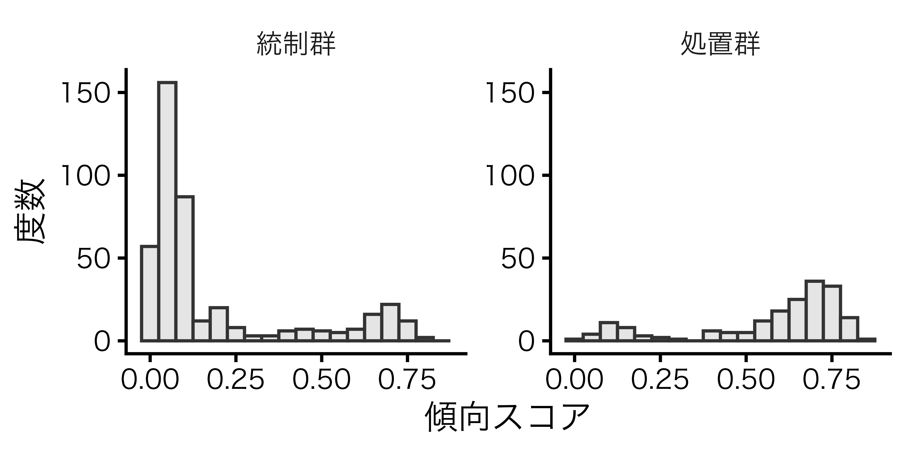
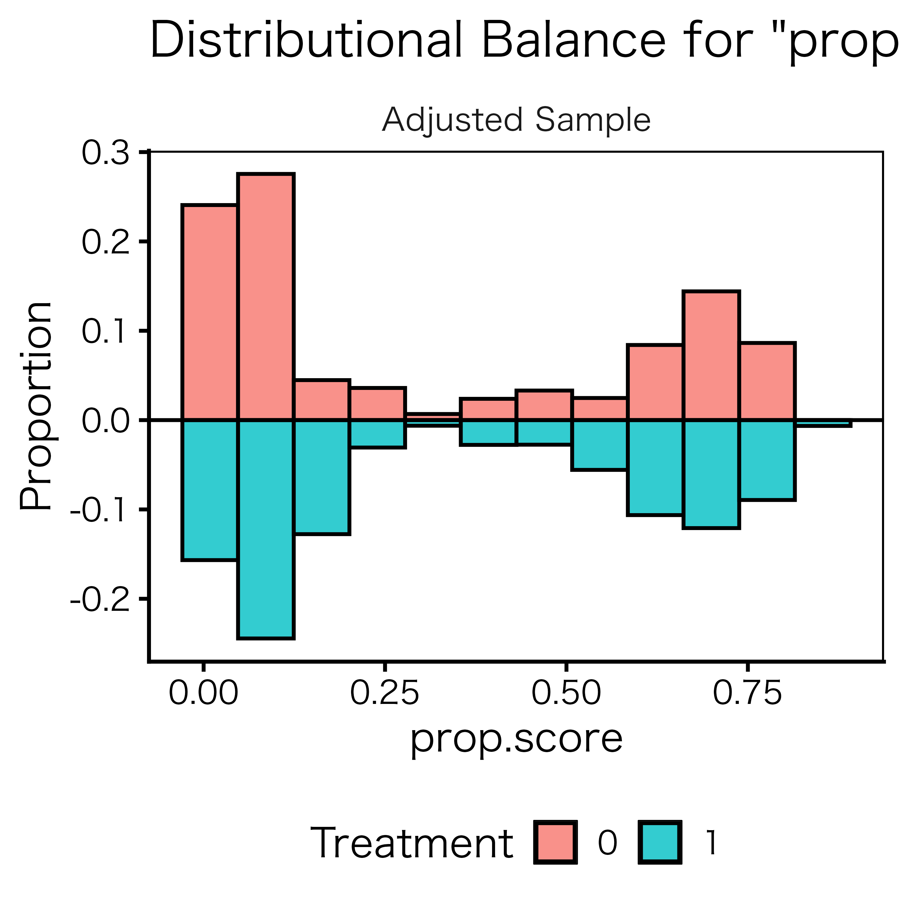
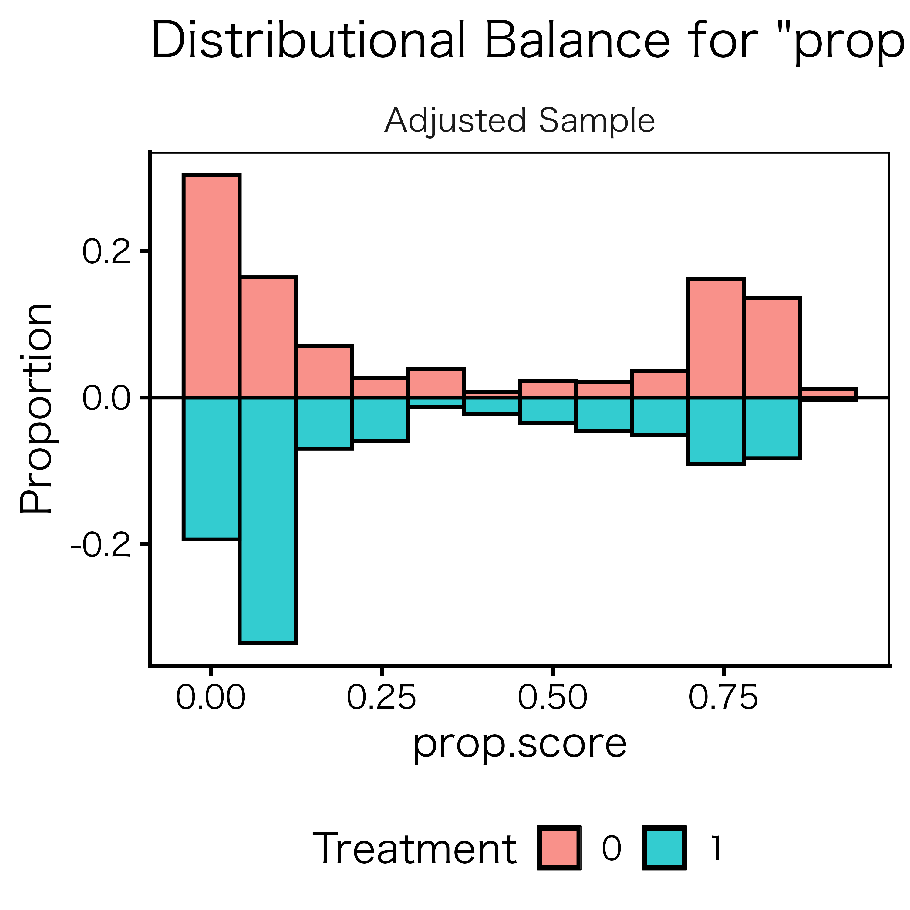
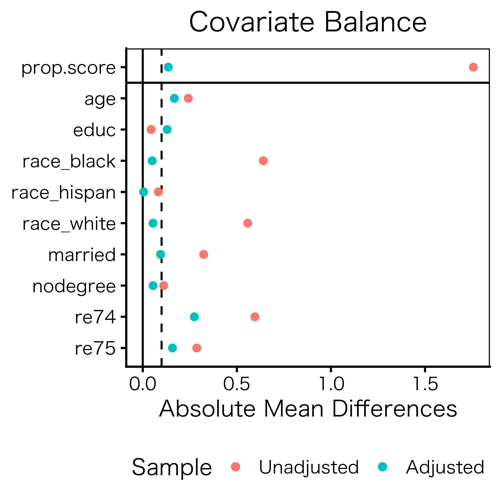
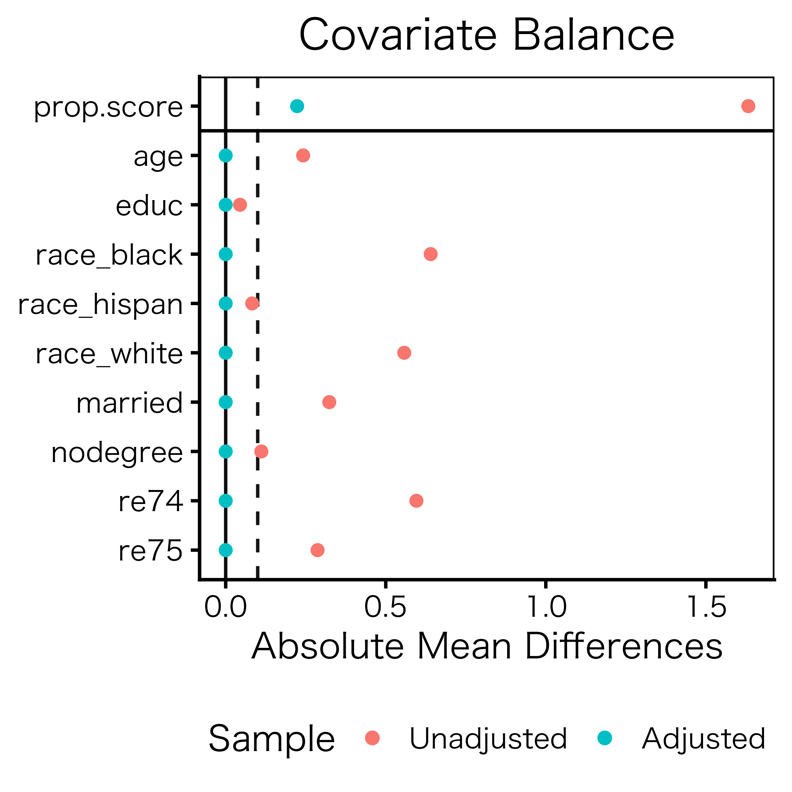

pacman::p_load(
tidyverse, # Rの必須パッケージ
ggbeeswarm, # ビースウォーム図の作成
broom, # 推定結果をdata.frameい
modelsummary, # 推定結果の比較 / 記述統計表の作成
MatchIt, # 層化を使った処置効果の推定
WeightIt, # 重み付けを使った処置効果の推定
cobalt, # バランスチェック用
estimatr, # 頑健な標準誤差を計算
marginaleffects# G-computation
)傾向スコア
1 セットアップ
今回の実習で使用するパッケージを読み込んでおく。
今回使用するデータはLaLonde（1986）1、およびDehejia and Wahba（1999）2に使用されたデータセットだ。統計的因果推論の界隈では非常に有名なデータセットで、通常「ラ・ロンド（lalonde）データセット」と呼ばれる。このデータセットはいくつかのRパッケージのサンプルデータとして提供されているが、今回使用する{MatchIt}と{cobalt}にもこのlalondeデータセットが含まれている。パッケージに含まれるデータセットを読み込む際はdata("データセット名", package = "パッケージ名")と入力する。今回は{cobalt}パッケージのlalondeを読み込む（{MatchIt}が提供するものと100%同じものだ）。
data("lalonde", package = "cobalt") 読み込んでも何かの変化が生じるわけではないが、ls()を入力してみると作業環境内にlalondeという名前のデータセットがいつの間にか追加されていることが確認できる。lalondeの中身を確認してみよう。普通にlalondeだけ入力すると、先頭100行が出力されるが、データの中身を確認するのに100行も要らない。head()関数で最初の6行のみ出力してみよう。
head(lalonde) treat age educ race married nodegree re74 re75 re78
1 1 37 11 black 1 1 0 0 9930.0460
2 1 22 9 hispan 0 1 0 0 3595.8940
3 1 30 12 black 0 0 0 0 24909.4500
4 1 27 11 black 0 1 0 0 7506.1460
5 1 33 8 black 0 1 0 0 289.7899
6 1 22 9 black 0 1 0 0 4056.4940 これからこのデータセットの名前を何回も打つことになるので、dfという新しい名前のオブジェクトにコピーしておこう。また、本来はデータフレーム形式で提供されているが、より見栄の良いティブル形式3に変換しておこう。続いてdfを中身を確認してみよう。データフレームでなくティブル型なので、head()を使わなくても先頭10行のみ出力される。
df <- as_tibble(lalonde)
df# A tibble: 614 × 9
treat age educ race married nodegree re74 re75 re78
<int> <int> <int> <fct> <int> <int> <dbl> <dbl> <dbl>
1 1 37 11 black 1 1 0 0 9930.
2 1 22 9 hispan 0 1 0 0 3596.
3 1 30 12 black 0 0 0 0 24909.
4 1 27 11 black 0 1 0 0 7506.
5 1 33 8 black 0 1 0 0 290.
6 1 22 9 black 0 1 0 0 4056.
7 1 23 12 black 0 0 0 0 0
8 1 32 11 black 0 1 0 0 8472.
9 1 22 16 black 0 0 0 0 2164.
10 1 33 12 white 1 0 0 0 12418.
# ℹ 604 more rows本データセットはアメリカ労働省や民間財団が1975年から1979年4まで提供した職業訓練プログラム（National Supported Work Demonstration; NSW）の効果検証のためのデータだ。このプログラムの詳細はLaLonde（1986）5、およびDehejia and Wahba（1999）6を参照されたい。
| 変数名 | 説明 | 備考 |
|---|---|---|
treat |
職業訓練 | 1 = 職業訓練履修, 0 = 職業訓練未修;処置変数 |
re78 |
1978年の年収 | 米ドル; 結果変数 |
age |
年齢 | 歳 |
education |
教育年数 | 年 |
race |
人種 | black = 黒人, hispanic = ヒスパニック, white = 白人 |
married |
婚姻状態 | 1 = 既婚, 0 = 既婚以外 |
nodegree |
高校学位（diploma）の有無 | 1 = 高校学位なし, 0 = 高校学位あり |
re74 |
1974年の年収 | 米ドル |
re75 |
1975年の年収 | 米ドル |
ここでは「職業訓練プラグラムに参加した人はそうでない人に比べ、年収が高いか」が問いである。したがって、処置変数はtreat（職業訓練プログラムへの参加有無）、結果変数はre78（1978年の年収）となる。当然ながら訓練に参加した人々とそうでない人々間の単純比較は意味がない。なぜなら「元の収入が低い人が職業訓練プログラムに参加する傾向」があるからだ。実際にこのプログラムに参加した人々の1978年の平均年収は6349ドルで、参加しなかった人々のそれである6984に比べると、なんと635ドルも低い。しかし、この結果だけで「職業訓練プログラムは有害だ」結論づけることはできないだろう。もし、この職業訓練プログラムがなかったら、その差は635ドルでなく、1000ドル、2000ドルだったかも知れないからだ。
この職業訓練プログラムの効果を検証するためには、ちゃんと似たような人同士で比較する必要がありそうだ。そのための手法の一つが傾向スコアを使った処置効果の推定だ。これは職業訓練に参加した人のグループとしなかったグループの性質を重み付けや層化による条件付けで均質に、つまり2つの集団を比較可能（comparable）にする手法だ。
2 記述統計
まず、記述統計から確認しよう。「Rの復習」で紹介した{summarytools}を使えばカスタマイズの自由度の高い記述統計表が作成できるが、ここでは推定結果を表形式で出力する{modelsummary}パッケージが提供するdatasummary_skim()関数を使ってみよう。カスタマイズの自由度はやや低いものの、普段（?）使う分には十分な程度の記述統計表が簡単に作れる。使い方は簡単で、datasummary_skim()関数にデータフレームのオブジェクト名を指定するだけだ。
{summarytools}のdescr()は数値型変数の記述統計量のみ出力すため、今回のrace変数のような名目変数は事前にダミー変数に変換しておく必要があったが、datasummary_skim()は名目変数に対して別途の度数分布表を作成してくれるすぐれものだ。ただ、度数分布表であり、平均値や標準偏差などは出力されないため、こちらが必要なら{summarytools}のdescr()同様、race変数を予めダミー変数に変換しておく必要がある。
datasummary_skim(df)| Unique | Missing Pct. | Mean | SD | Min | Median | Max | Histogram | |
|---|---|---|---|---|---|---|---|---|
| treat | 2 | 0 | 0.3 | 0.5 | 0.0 | 0.0 | 1.0 | ![](data:image/png;base64, iVBORw0KGgoAAAANSUhEUgAABLAAAAGQCAYAAAC+tZleAAAEDmlDQ1BrQ0dDb2xvclNwYWNlR2VuZXJpY1JHQgAAOI2NVV1oHFUUPpu5syskzoPUpqaSDv41lLRsUtGE2uj+ZbNt3CyTbLRBkMns3Z1pJjPj/KRpKT4UQRDBqOCT4P9bwSchaqvtiy2itFCiBIMo+ND6R6HSFwnruTOzu5O4a73L3PnmnO9+595z7t4LkLgsW5beJQIsGq4t5dPis8fmxMQ6dMF90A190C0rjpUqlSYBG+PCv9rt7yDG3tf2t/f/Z+uuUEcBiN2F2Kw4yiLiZQD+FcWyXYAEQfvICddi+AnEO2ycIOISw7UAVxieD/Cyz5mRMohfRSwoqoz+xNuIB+cj9loEB3Pw2448NaitKSLLRck2q5pOI9O9g/t/tkXda8Tbg0+PszB9FN8DuPaXKnKW4YcQn1Xk3HSIry5ps8UQ/2W5aQnxIwBdu7yFcgrxPsRjVXu8HOh0qao30cArp9SZZxDfg3h1wTzKxu5E/LUxX5wKdX5SnAzmDx4A4OIqLbB69yMesE1pKojLjVdoNsfyiPi45hZmAn3uLWdpOtfQOaVmikEs7ovj8hFWpz7EV6mel0L9Xy23FMYlPYZenAx0yDB1/PX6dledmQjikjkXCxqMJS9WtfFCyH9XtSekEF+2dH+P4tzITduTygGfv58a5VCTH5PtXD7EFZiNyUDBhHnsFTBgE0SQIA9pfFtgo6cKGuhooeilaKH41eDs38Ip+f4At1Rq/sjr6NEwQqb/I/DQqsLvaFUjvAx+eWirddAJZnAj1DFJL0mSg/gcIpPkMBkhoyCSJ8lTZIxk0TpKDjXHliJzZPO50dR5ASNSnzeLvIvod0HG/mdkmOC0z8VKnzcQ2M/Yz2vKldduXjp9bleLu0ZWn7vWc+l0JGcaai10yNrUnXLP/8Jf59ewX+c3Wgz+B34Df+vbVrc16zTMVgp9um9bxEfzPU5kPqUtVWxhs6OiWTVW+gIfywB9uXi7CGcGW/zk98k/kmvJ95IfJn/j3uQ+4c5zn3Kfcd+AyF3gLnJfcl9xH3OfR2rUee80a+6vo7EK5mmXUdyfQlrYLTwoZIU9wsPCZEtP6BWGhAlhL3p2N6sTjRdduwbHsG9kq32sgBepc+xurLPW4T9URpYGJ3ym4+8zA05u44QjST8ZIoVtu3qE7fWmdn5LPdqvgcZz8Ww8BWJ8X3w0PhQ/wnCDGd+LvlHs8dRy6bLLDuKMaZ20tZrqisPJ5ONiCq8yKhYM5cCgKOu66Lsc0aYOtZdo5QCwezI4wm9J/v0X23mlZXOfBjj8Jzv3WrY5D+CsA9D7aMs2gGfjve8ArD6mePZSeCfEYt8CONWDw8FXTxrPqx/r9Vt4biXeANh8vV7/+/16ffMD1N8AuKD/A/8leAvFY9bLAAAAOGVYSWZNTQAqAAAACAABh2kABAAAAAEAAAAaAAAAAAACoAIABAAAAAEAAASwoAMABAAAAAEAAAGQAAAAAPKgHusAACg9SURBVHgB7dwxsg1YF4bh43cDc1Bu1RVQAhFzMAgjMAQjMBJlBAJzkAkUAeoqoUBEovxavup+OvnW6fPcdC+113n2Ubrebn3t1++fgx8CBAgQIECAAAECBAgQIECAAAECSwX+t3QvaxEgQIAAAQIECBAgQIAAAQIECBD4IyBg+SIQIECAAAECBAgQIECAAAECBAisFhCwVj+P5QgQIECAAAECBAgQIECAAAECBAQs3wECBAgQIECAAAECBAgQIECAAIHVAgLW6uexHAECBAgQIECAAAECBAgQIECAgIDlO0CAAAECBAgQIECAAAECBAgQILBaQMBa/TyWI0CAAAECBAgQIECAAAECBAgQELB8BwgQIECAAAECBAgQIECAAAECBFYLCFirn8dyBAgQIECAAAECBAgQIECAAAECApbvAAECBAgQIECAAAECBAgQIECAwGoBAWv181iOAAECBAgQIECAAAECBAgQIEBAwPIdIECAAAECBAgQIECAAAECBAgQWC0gYK1+HssRIECAAAECBAgQIECAAAECBAicHRvBs2fPDh8+fDi2te37W+D27duHp0+fsiBAgAABAgQIECBAgAABAgQI/JXAtV+/f/7qV5SHz8/PD58/fy5v4fp/I3Dr1q3D5eXlv/mlfg0BAgQIECBAgAABAgQIECBwwgJH91cIr1+/fsLPddwf/ezs6P6Dv+MGtz0BAgQIECBAgAABAgQIEPiPCBxdwPqPuPsYBAgQIECAAAECBAgQIECAAAECoYCAFUIZI0CAAAECBAgQIECAAAECBAgQ6AgIWB13txIgQIAAAQIECBAgQIAAAQIECIQCAlYIZYwAAQIECBAgQIAAAQIECBAgQKAjIGB13N1KgAABAgQIECBAgAABAgQIECAQCghYIZQxAgQIECBAgAABAgQIECBAgACBjoCA1XF3KwECBAgQIECAAAECBAgQIECAQCggYIVQxggQIECAAAECBAgQIECAAAECBDoCAlbH3a0ECBAgQIAAAQIECBAgQIAAAQKhgIAVQhkjQIAAAQIECBAgQIAAAQIECBDoCAhYHXe3EiBAgAABAgQIECBAgAABAgQIhAICVghljAABAgQIECBAgAABAgQIECBAoCMgYHXc3UqAAAECBAgQIECAAAECBAgQIBAKCFghlDECBAgQIECAAAECBAgQIECAAIGOgIDVcXcrAQIECBAgQIAAAQIECBAgQIBAKCBghVDGCBAgQIAAAQIECBAgQIAAAQIEOgICVsfdrQQIECBAgAABAgQIECBAgAABAqGAgBVCGSNAgAABAgQIECBAgAABAgQIEOgICFgdd7cSIECAAAECBAgQIECAAAECBAiEAgJWCGWMAAECBAgQIECAAAECBAgQIECgIyBgddzdSoAAAQIECBAgQIAAAQIECBAgEAoIWCGUMQIECBAgQIAAAQIECBAgQIAAgY6AgNVxdysBAgQIECBAgAABAgQIECBAgEAoIGCFUMYIECBAgAABAgQIECBAgAABAgQ6AgJWx92tBAgQIECAAAECBAgQIECAAAECoYCAFUIZI0CAAAECBAgQIECAAAECBAgQ6AgIWB13txIgQIAAAQIECBAgQIAAAQIECIQCAlYIZYwAAQIECBAgQIAAAQIECBAgQKAjIGB13N1KgAABAgQIECBAgAABAgQIECAQCghYIZQxAgQIECBAgAABAgQIECBAgACBjoCA1XF3KwECBAgQIECAAAECBAgQIECAQCggYIVQxggQIECAAAECBAgQIECAAAECBDoCAlbH3a0ECBAgQIAAAQIECBAgQIAAAQKhgIAVQhkjQIAAAQIECBAgQIAAAQIECBDoCAhYHXe3EiBAgAABAgQIECBAgAABAgQIhAICVghljAABAgQIECBAgAABAgQIECBAoCMgYHXc3UqAAAECBAgQIECAAAECBAgQIBAKCFghlDECBAgQIECAAAECBAgQIECAAIGOgIDVcXcrAQIECBAgQIAAAQIECBAgQIBAKCBghVDGCBAgQIAAAQIECBAgQIAAAQIEOgICVsfdrQQIECBAgAABAgQIECBAgAABAqGAgBVCGSNAgAABAgQIECBAgAABAgQIEOgICFgdd7cSIECAAAECBAgQIECAAAECBAiEAgJWCGWMAAECBAgQIECAAAECBAgQIECgIyBgddzdSoAAAQIECBAgQIAAAQIECBAgEAoIWCGUMQIECBAgQIAAAQIECBAgQIAAgY6AgNVxdysBAgQIECBAgAABAgQIECBAgEAoIGCFUMYIECBAgAABAgQIECBAgAABAgQ6AgJWx92tBAgQIECAAAECBAgQIECAAAECoYCAFUIZI0CAAAECBAgQIECAAAECBAgQ6AgIWB13txIgQIAAAQIECBAgQIAAAQIECIQCAlYIZYwAAQIECBAgQIAAAQIECBAgQKAjIGB13N1KgAABAgQIECBAgAABAgQIECAQCghYIZQxAgQIECBAgAABAgQIECBAgACBjoCA1XF3KwECBAgQIECAAAECBAgQIECAQCggYIVQxggQIECAAAECBAgQIECAAAECBDoCAlbH3a0ECBAgQIAAAQIECBAgQIAAAQKhgIAVQhkjQIAAAQIECBAgQIAAAQIECBDoCAhYHXe3EiBAgAABAgQIECBAgAABAgQIhAICVghljAABAgQIECBAgAABAgQIECBAoCMgYHXc3UqAAAECBAgQIECAAAECBAgQIBAKCFghlDECBAgQIECAAAECBAgQIECAAIGOgIDVcXcrAQIECBAgQIAAAQIECBAgQIBAKCBghVDGCBAgQIAAAQIECBAgQIAAAQIEOgICVsfdrQQIECBAgAABAgQIECBAgAABAqGAgBVCGSNAgAABAgQIECBAgAABAgQIEOgICFgdd7cSIECAAAECBAgQIECAAAECBAiEAgJWCGWMAAECBAgQIECAAAECBAgQIECgIyBgddzdSoAAAQIECBAgQIAAAQIECBAgEAoIWCGUMQIECBAgQIAAAQIECBAgQIAAgY6AgNVxdysBAgQIECBAgAABAgQIECBAgEAoIGCFUMYIECBAgAABAgQIECBAgAABAgQ6AgJWx92tBAgQIECAAAECBAgQIECAAAECoYCAFUIZI0CAAAECBAgQIECAAAECBAgQ6AgIWB13txIgQIAAAQIECBAgQIAAAQIECIQCAlYIZYwAAQIECBAgQIAAAQIECBAgQKAjIGB13N1KgAABAgQIECBAgAABAgQIECAQCghYIZQxAgQIECBAgAABAgQIECBAgACBjoCA1XF3KwECBAgQIECAAAECBAgQIECAQCggYIVQxggQIECAAAECBAgQIECAAAECBDoCAlbH3a0ECBAgQIAAAQIECBAgQIAAAQKhgIAVQhkjQIAAAQIECBAgQIAAAQIECBDoCAhYHXe3EiBAgAABAgQIECBAgAABAgQIhAICVghljAABAgQIECBAgAABAgQIECBAoCMgYHXc3UqAAAECBAgQIECAAAECBAgQIBAKCFghlDECBAgQIECAAAECBAgQIECAAIGOgIDVcXcrAQIECBAgQIAAAQIECBAgQIBAKCBghVDGCBAgQIAAAQIECBAgQIAAAQIEOgICVsfdrQQIECBAgAABAgQIECBAgAABAqGAgBVCGSNAgAABAgQIECBAgAABAgQIEOgICFgdd7cSIECAAAECBAgQIECAAAECBAiEAgJWCGWMAAECBAgQIECAAAECBAgQIECgIyBgddzdSoAAAQIECBAgQIAAAQIECBAgEAoIWCGUMQIECBAgQIAAAQIECBAgQIAAgY6AgNVxdysBAgQIECBAgAABAgQIECBAgEAoIGCFUMYIECBAgAABAgQIECBAgAABAgQ6AgJWx92tBAgQIECAAAECBAgQIECAAAECoYCAFUIZI0CAAAECBAgQIECAAAECBAgQ6AgIWB13txIgQIAAAQIECBAgQIAAAQIECIQCAlYIZYwAAQIECBAgQIAAAQIECBAgQKAjIGB13N1KgAABAgQIECBAgAABAgQIECAQCghYIZQxAgQIECBAgAABAgQIECBAgACBjoCA1XF3KwECBAgQIECAAAECBAgQIECAQCggYIVQxggQIECAAAECBAgQIECAAAECBDoCAlbH3a0ECBAgQIAAAQIECBAgQIAAAQKhgIAVQhkjQIAAAQIECBAgQIAAAQIECBDoCAhYHXe3EiBAgAABAgQIECBAgAABAgQIhAICVghljAABAgQIECBAgAABAgQIECBAoCMgYHXc3UqAAAECBAgQIECAAAECBAgQIBAKCFghlDECBAgQIECAAAECBAgQIECAAIGOgIDVcXcrAQIECBAgQIAAAQIECBAgQIBAKCBghVDGCBAgQIAAAQIECBAgQIAAAQIEOgICVsfdrQQIECBAgAABAgQIECBAgAABAqGAgBVCGSNAgAABAgQIECBAgAABAgQIEOgICFgdd7cSIECAAAECBAgQIECAAAECBAiEAgJWCGWMAAECBAgQIECAAAECBAgQIECgIyBgddzdSoAAAQIECBAgQIAAAQIECBAgEAoIWCGUMQIECBAgQIAAAQIECBAgQIAAgY6AgNVxdysBAgQIECBAgAABAgQIECBAgEAoIGCFUMYIECBAgAABAgQIECBAgAABAgQ6AgJWx92tBAgQIECAAAECBAgQIECAAAECoYCAFUIZI0CAAAECBAgQIECAAAECBAgQ6AgIWB13txIgQIAAAQIECBAgQIAAAQIECIQCAlYIZYwAAQIECBAgQIAAAQIECBAgQKAjIGB13N1KgAABAgQIECBAgAABAgQIECAQCghYIZQxAgQIECBAgAABAgQIECBAgACBjoCA1XF3KwECBAgQIECAAAECBAgQIECAQCggYIVQxggQIECAAAECBAgQIECAAAECBDoCAlbH3a0ECBAgQIAAAQIECBAgQIAAAQKhgIAVQhkjQIAAAQIECBAgQIAAAQIECBDoCAhYHXe3EiBAgAABAgQIECBAgAABAgQIhAICVghljAABAgQIECBAgAABAgQIECBAoCMgYHXc3UqAAAECBAgQIECAAAECBAgQIBAKCFghlDECBAgQIECAAAECBAgQIECAAIGOgIDVcXcrAQIECBAgQIAAAQIECBAgQIBAKCBghVDGCBAgQIAAAQIECBAgQIAAAQIEOgICVsfdrQQIECBAgAABAgQIECBAgAABAqGAgBVCGSNAgAABAgQIECBAgAABAgQIEOgICFgdd7cSIECAAAECBAgQIECAAAECBAiEAgJWCGWMAAECBAgQIECAAAECBAgQIECgIyBgddzdSoAAAQIECBAgQIAAAQIECBAgEAoIWCGUMQIECBAgQIAAAQIECBAgQIAAgY6AgNVxdysBAgQIECBAgAABAgQIECBAgEAoIGCFUMYIECBAgAABAgQIECBAgAABAgQ6AgJWx92tBAgQIECAAAECBAgQIECAAAECoYCAFUIZI0CAAAECBAgQIECAAAECBAgQ6AgIWB13txIgQIAAAQIECBAgQIAAAQIECIQCAlYIZYwAAQIECBAgQIAAAQIECBAgQKAjIGB13N1KgAABAgQIECBAgAABAgQIECAQCghYIZQxAgQIECBAgAABAgQIECBAgACBjoCA1XF3KwECBAgQIECAAAECBAgQIECAQCggYIVQxggQIECAAAECBAgQIECAAAECBDoCAlbH3a0ECBAgQIAAAQIECBAgQIAAAQKhgIAVQhkjQIAAAQIECBAgQIAAAQIECBDoCAhYHXe3EiBAgAABAgQIECBAgAABAgQIhAICVghljAABAgQIECBAgAABAgQIECBAoCMgYHXc3UqAAAECBAgQIECAAAECBAgQIBAKCFghlDECBAgQIECAAAECBAgQIECAAIGOgIDVcXcrAQIECBAgQIAAAQIECBAgQIBAKCBghVDGCBAgQIAAAQIECBAgQIAAAQIEOgICVsfdrQQIECBAgAABAgQIECBAgAABAqGAgBVCGSNAgAABAgQIECBAgAABAgQIEOgICFgdd7cSIECAAAECBAgQIECAAAECBAiEAgJWCGWMAAECBAgQIECAAAECBAgQIECgIyBgddzdSoAAAQIECBAgQIAAAQIECBAgEAoIWCGUMQIECBAgQIAAAQIECBAgQIAAgY6AgNVxdysBAgQIECBAgAABAgQIECBAgEAoIGCFUMYIECBAgAABAgQIECBAgAABAgQ6AgJWx92tBAgQIECAAAECBAgQIECAAAECoYCAFUIZI0CAAAECBAgQIECAAAECBAgQ6AgIWB13txIgQIAAAQIECBAgQIAAAQIECIQCAlYIZYwAAQIECBAgQIAAAQIECBAgQKAjIGB13N1KgAABAgQIECBAgAABAgQIECAQCghYIZQxAgQIECBAgAABAgQIECBAgACBjoCA1XF3KwECBAgQIECAAAECBAgQIECAQCggYIVQxggQIECAAAECBAgQIECAAAECBDoCAlbH3a0ECBAgQIAAAQIECBAgQIAAAQKhgIAVQhkjQIAAAQIECBAgQIAAAQIECBDoCAhYHXe3EiBAgAABAgQIECBAgAABAgQIhAICVghljAABAgQIECBAgAABAgQIECBAoCMgYHXc3UqAAAECBAgQIECAAAECBAgQIBAKCFghlDECBAgQIECAAAECBAgQIECAAIGOgIDVcXcrAQIECBAgQIAAAQIECBAgQIBAKCBghVDGCBAgQIAAAQIECBAgQIAAAQIEOgICVsfdrQQIECBAgAABAgQIECBAgAABAqGAgBVCGSNAgAABAgQIECBAgAABAgQIEOgICFgdd7cSIECAAAECBAgQIECAAAECBAiEAgJWCGWMAAECBAgQIECAAAECBAgQIECgIyBgddzdSoAAAQIECBAgQIAAAQIECBAgEAoIWCGUMQIECBAgQIAAAQIECBAgQIAAgY6AgNVxdysBAgQIECBAgAABAgQIECBAgEAoIGCFUMYIECBAgAABAgQIECBAgAABAgQ6AgJWx92tBAgQIECAAAECBAgQIECAAAECoYCAFUIZI0CAAAECBAgQIECAAAECBAgQ6AgIWB13txIgQIAAAQIECBAgQIAAAQIECIQCAlYIZYwAAQIECBAgQIAAAQIECBAgQKAjIGB13N1KgAABAgQIECBAgAABAgQIECAQCghYIZQxAgQIECBAgAABAgQIECBAgACBjoCA1XF3KwECBAgQIECAAAECBAgQIECAQCggYIVQxggQIECAAAECBAgQIECAAAECBDoCAlbH3a0ECBAgQIAAAQIECBAgQIAAAQKhgIAVQhkjQIAAAQIECBAgQIAAAQIECBDoCAhYHXe3EiBAgAABAgQIECBAgAABAgQIhAICVghljAABAgQIECBAgAABAgQIECBAoCMgYHXc3UqAAAECBAgQIECAAAECBAgQIBAKCFghlDECBAgQIECAAAECBAgQIECAAIGOgIDVcXcrAQIECBAgQIAAAQIECBAgQIBAKCBghVDGCBAgQIAAAQIECBAgQIAAAQIEOgJnnWvdSoAAAQIECBAgQIAAAQIECByzwL179w4/fvw45o9wsrvfuHHj8Pbt26P6/ALWUT2XZQkQIECAAAECBAgQIECAwA6Bf+LVp0+fdixji78SuLi4+Kv5DcP+CuGGV7ADAQIECBAgQIAAAQIECBAgQIDAKCBgjTQOCBAgQIAAAQIECBAgQIAAAQIENggIWBtewQ4ECBAgQIAAAQIECBAgQIAAAQKjgIA10jggQIAAAQIECBAgQIAAAQIECBDYICBgbXgFOxAgQIAAAQIECBAgQIAAAQIECIwCAtZI44AAAQIECBAgQIAAAQIECBAgQGCDgIC14RXsQIAAAQIECBAgQIAAAQIECBAgMAoIWCONAwIECBAgQIAAAQIECBAgQIAAgQ0CAtaGV7ADAQIECBAgQIAAAQIECBAgQIDAKCBgjTQOCBAgQIAAAQIECBAgQIAAAQIENggIWBtewQ4ECBAgQIAAAQIECBAgQIAAAQKjgIA10jggQIAAAQIECBAgQIAAAQIECBDYICBgbXgFOxAgQIAAAQIECBAgQIAAAQIECIwCAtZI44AAAQIECBAgQIAAAQIECBAgQGCDgIC14RXsQIAAAQIECBAgQIAAAQIECBAgMAoIWCONAwIECBAgQIAAAQIECBAgQIAAgQ0CAtaGV7ADAQIECBAgQIAAAQIECBAgQIDAKCBgjTQOCBAgQIAAAQIECBAgQIAAAQIENggIWBtewQ4ECBAgQIAAAQIECBAgQIAAAQKjgIA10jggQIAAAQIECBAgQIAAAQIECBDYICBgbXgFOxAgQIAAAQIECBAgQIAAAQIECIwCAtZI44AAAQIECBAgQIAAAQIECBAgQGCDgIC14RXsQIAAAQIECBAgQIAAAQIECBAgMAoIWCONAwIECBAgQIAAAQIECBAgQIAAgQ0CAtaGV7ADAQIECBAgQIAAAQIECBAgQIDAKCBgjTQOCBAgQIAAAQIECBAgQIAAAQIENggIWBtewQ4ECBAgQIAAAQIECBAgQIAAAQKjgIA10jggQIAAAQIECBAgQIAAAQIECBDYICBgbXgFOxAgQIAAAQIECBAgQIAAAQIECIwCAtZI44AAAQIECBAgQIAAAQIECBAgQGCDgIC14RXsQIAAAQIECBAgQIAAAQIECBAgMAoIWCONAwIECBAgQIAAAQIECBAgQIAAgQ0CAtaGV7ADAQIECBAgQIAAAQIECBAgQIDAKCBgjTQOCBAgQIAAAQIECBAgQIAAAQIENggIWBtewQ4ECBAgQIAAAQIECBAgQIAAAQKjgIA10jggQIAAAQIECBAgQIAAAQIECBDYICBgbXgFOxAgQIAAAQIECBAgQIAAAQIECIwCAtZI44AAAQIECBAgQIAAAQIECBAgQGCDgIC14RXsQIAAAQIECBAgQIAAAQIECBAgMAoIWCONAwIECBAgQIAAAQIECBAgQIAAgQ0CAtaGV7ADAQIECBAgQIAAAQIECBAgQIDAKCBgjTQOCBAgQIAAAQIECBAgQIAAAQIENggIWBtewQ4ECBAgQIAAAQIECBAgQIAAAQKjgIA10jggQIAAAQIECBAgQIAAAQIECBDYICBgbXgFOxAgQIAAAQIECBAgQIAAAQIECIwCAtZI44AAAQIECBAgQIAAAQIECBAgQGCDgIC14RXsQIAAAQIECBAgQIAAAQIECBAgMAoIWCONAwIECBAgQIAAAQIECBAgQIAAgQ0CAtaGV7ADAQIECBAgQIAAAQIECBAgQIDAKCBgjTQOCBAgQIAAAQIECBAgQIAAAQIENggIWBtewQ4ECBAgQIAAAQIECBAgQIAAAQKjgIA10jggQIAAAQIECBAgQIAAAQIECBDYICBgbXgFOxAgQIAAAQIECBAgQIAAAQIECIwCAtZI44AAAQIECBAgQIAAAQIECBAgQGCDgIC14RXsQIAAAQIECBAgQIAAAQIECBAgMAoIWCONAwIECBAgQIAAAQIECBAgQIAAgQ0CAtaGV7ADAQIECBAgQIAAAQIECBAgQIDAKCBgjTQOCBAgQIAAAQIECBAgQIAAAQIENggIWBtewQ4ECBAgQIAAAQIECBAgQIAAAQKjgIA10jggQIAAAQIECBAgQIAAAQIECBDYICBgbXgFOxAgQIAAAQIECBAgQIAAAQIECIwCAtZI44AAAQIECBAgQIAAAQIECBAgQGCDgIC14RXsQIAAAQIECBAgQIAAAQIECBAgMAoIWCONAwIECBAgQIAAAQIECBAgQIAAgQ0CAtaGV7ADAQIECBAgQIAAAQIECBAgQIDAKCBgjTQOCBAgQIAAAQIECBAgQIAAAQIENggIWBtewQ4ECBAgQIAAAQIECBAgQIAAAQKjgIA10jggQIAAAQIECBAgQIAAAQIECBDYICBgbXgFOxAgQIAAAQIECBAgQIAAAQIECIwCAtZI44AAAQIECBAgQIAAAQIECBAgQGCDgIC14RXsQIAAAQIECBAgQIAAAQIECBAgMAoIWCONAwIECBAgQIAAAQIECBAgQIAAgQ0CAtaGV7ADAQIECBAgQIAAAQIECBAgQIDAKCBgjTQOCBAgQIAAAQIECBAgQIAAAQIENggIWBtewQ4ECBAgQIAAAQIECBAgQIAAAQKjgIA10jggQIAAAQIECBAgQIAAAQIECBDYICBgbXgFOxAgQIAAAQIECBAgQIAAAQIECIwCAtZI44AAAQIECBAgQIAAAQIECBAgQGCDgIC14RXsQIAAAQIECBAgQIAAAQIECBAgMAoIWCONAwIECBAgQIAAAQIECBAgQIAAgQ0CAtaGV7ADAQIECBAgQIAAAQIECBAgQIDAKCBgjTQOCBAgQIAAAQIECBAgQIAAAQIENggIWBtewQ4ECBAgQIAAAQIECBAgQIAAAQKjgIA10jggQIAAAQIECBAgQIAAAQIECBDYICBgbXgFOxAgQIAAAQIECBAgQIAAAQIECIwCAtZI44AAAQIECBAgQIAAAQIECBAgQGCDgIC14RXsQIAAAQIECBAgQIAAAQIECBAgMAoIWCONAwIECBAgQIAAAQIECBAgQIAAgQ0CAtaGV7ADAQIECBAgQIAAAQIECBAgQIDAKCBgjTQOCBAgQIAAAQIECBAgQIAAAQIENggIWBtewQ4ECBAgQIAAAQIECBAgQIAAAQKjgIA10jggQIAAAQIECBAgQIAAAQIECBDYICBgbXgFOxAgQIAAAQIECBAgQIAAAQIECIwCAtZI44AAAQIECBAgQIAAAQIECBAgQGCDgIC14RXsQIAAAQIECBAgQIAAAQIECBAgMAoIWCONAwIECBAgQIAAAQIECBAgQIAAgQ0CAtaGV7ADAQIECBAgQIAAAQIECBAgQIDAKCBgjTQOCBAgQIAAAQIECBAgQIAAAQIENggIWBtewQ4ECBAgQIAAAQIECBAgQIAAAQKjgIA10jggQIAAAQIECBAgQIAAAQIECBDYICBgbXgFOxAgQIAAAQIECBAgQIAAAQIECIwCAtZI44AAAQIECBAgQIAAAQIECBAgQGCDgIC14RXsQIAAAQIECBAgQIAAAQIECBAgMAoIWCONAwIECBAgQIAAAQIECBAgQIAAgQ0CAtaGV7ADAQIECBAgQIAAAQIECBAgQIDAKCBgjTQOCBAgQIAAAQIECBAgQIAAAQIENggIWBtewQ4ECBAgQIAAAQIECBAgQIAAAQKjgIA10jggQIAAAQIECBAgQIAAAQIECBDYICBgbXgFOxAgQIAAAQIECBAgQIAAAQIECIwCAtZI44AAAQIECBAgQIAAAQIECBAgQGCDgIC14RXsQIAAAQIECBAgQIAAAQIECBAgMAoIWCONAwIECBAgQIAAAQIECBAgQIAAgQ0CAtaGV7ADAQIECBAgQIAAAQIECBAgQIDAKCBgjTQOCBAgQIAAAQIECBAgQIAAAQIENggIWBtewQ4ECBAgQIAAAQIECBAgQIAAAQKjgIA10jggQIAAAQIECBAgQIAAAQIECBDYICBgbXgFOxAgQIAAAQIECBAgQIAAAQIECIwCAtZI44AAAQIECBAgQIAAAQIECBAgQGCDgIC14RXsQIAAAQIECBAgQIAAAQIECBAgMAoIWCONAwIECBAgQIAAAQIECBAgQIAAgQ0CAtaGV7ADAQIECBAgQIAAAQIECBAgQIDAKCBgjTQOCBAgQIAAAQIECBAgQIAAAQIENggIWBtewQ4ECBAgQIAAAQIECBAgQIAAAQKjgIA10jggQIAAAQIECBAgQIAAAQIECBDYICBgbXgFOxAgQIAAAQIECBAgQIAAAQIECIwCAtZI44AAAQIECBAgQIAAAQIECBAgQGCDgIC14RXsQIAAAQIECBAgQIAAAQIECBAgMAoIWCONAwIECBAgQIAAAQIECBAgQIAAgQ0CAtaGV7ADAQIECBAgQIAAAQIECBAgQIDAKCBgjTQOCBAgQIAAAQIECBAgQIAAAQIENggIWBtewQ4ECBAgQIAAAQIECBAgQIAAAQKjgIA10jggQIAAAQIECBAgQIAAAQIECBDYICBgbXgFOxAgQIAAAQIECBAgQIAAAQIECIwCAtZI44AAAQIECBAgQIAAAQIECBAgQGCDgIC14RXsQIAAAQIECBAgQIAAAQIECBAgMAoIWCONAwIECBAgQIAAAQIECBAgQIAAgQ0CAtaGV7ADAQIECBAgQIAAAQIECBAgQIDAKCBgjTQOCBAgQIAAAQIECBAgQIAAAQIENggIWBtewQ4ECBAgQIAAAQIECBAgQIAAAQKjgIA10jggQIAAAQIECBAgQIAAAQIECBDYICBgbXgFOxAgQIAAAQIECBAgQIAAAQIECIwCAtZI44AAAQIECBAgQIAAAQIECBAgQGCDgIC14RXsQIAAAQIECBAgQIAAAQIECBAgMAoIWCONAwIECBAgQIAAAQIECBAgQIAAgQ0CAtaGV7ADAQIECBAgQIAAAQIECBAgQIDAKCBgjTQOCBAgQIAAAQIECBAgQIAAAQIENggIWBtewQ4ECBAgQIAAAQIECBAgQIAAAQKjgIA10jggQIAAAQIECBAgQIAAAQIECBDYICBgbXgFOxAgQIAAAQIECBAgQIAAAQIECIwCAtZI44AAAQIECBAgQIAAAQIECBAgQGCDgIC14RXsQIAAAQIECBAgQIAAAQIECBAgMAoIWCONAwIECBAgQIAAAQIECBAgQIAAgQ0CAtaGV7ADAQIECBAgQIAAAQIECBAgQIDAKCBgjTQOCBAgQIAAAQIECBAgQIAAAQIENggIWBtewQ4ECBAgQIAAAQIECBAgQIAAAQKjgIA10jggQIAAAQIECBAgQIAAAQIECBDYICBgbXgFOxAgQIAAAQIECBAgQIAAAQIECIwCZ+PJ0oOfP38u3cxaVwl8/fr18PLly6vGnC8UuLy8PJyfny/czEpXCXz8+PFwcXFx1ZjzhQLv3r073L17d+FmVrpK4M2bN39G7t+/f9Wo84UCfu8tfJRwJX/mhVALx/yz5sJHCVf6/v17OGlsm8C3b9+2rXTlPkcXsJ48eXL45w8nP8cn8OXLl8OLFy+Ob3EbH96/f3+4c+cOiSMUeP369eHhw4dHuLmVX716dXj06BGIIxR4/vz5n60fP358hNtb2e+94/0O+DPveN/OP2se79s9ePDgcPPmzeP9ACe8+TH+S+5rv37/nPCb+egECBAgQIAAAQIECBAgQIAAAQLLBfw/sJY/kPUIECBAgAABAgQIECBAgAABAqcuIGCd+jfA5ydAgAABAgQIECBAgAABAgQILBcQsJY/kPUIECBAgAABAgQIECBAgAABAqcuIGCd+jfA5ydAgAABAgQIECBAgAABAgQILBcQsJY/kPUIECBAgAABAgQIECBAgAABAqcuIGCd+jfA5ydAgAABAgQIECBAgAABAgQILBcQsJY/kPUIECBAgAABAgQIECBAgAABAqcuIGCd+jfA5ydAgAABAgQIECBAgAABAgQILBcQsJY/kPUIECBAgAABAgQIECBAgAABAqcuIGCd+jfA5ydAgAABAgQIECBAgAABAgQILBcQsJY/kPUIECBAgAABAgQIECBAgAABAqcuIGCd+jfA5ydAgAABAgQIECBAgAABAgQILBcQsJY/kPUIECBAgAABAgQIECBAgAABAqcu8H+jw2h6OTLOuwAAAABJRU5ErkJggg==) |
| age | 40 | 0 | 27.4 | 9.9 | 16.0 | 25.0 | 55.0 | ![](data:image/png;base64, iVBORw0KGgoAAAANSUhEUgAABLAAAAGQCAYAAAC+tZleAAAEDmlDQ1BrQ0dDb2xvclNwYWNlR2VuZXJpY1JHQgAAOI2NVV1oHFUUPpu5syskzoPUpqaSDv41lLRsUtGE2uj+ZbNt3CyTbLRBkMns3Z1pJjPj/KRpKT4UQRDBqOCT4P9bwSchaqvtiy2itFCiBIMo+ND6R6HSFwnruTOzu5O4a73L3PnmnO9+595z7t4LkLgsW5beJQIsGq4t5dPis8fmxMQ6dMF90A190C0rjpUqlSYBG+PCv9rt7yDG3tf2t/f/Z+uuUEcBiN2F2Kw4yiLiZQD+FcWyXYAEQfvICddi+AnEO2ycIOISw7UAVxieD/Cyz5mRMohfRSwoqoz+xNuIB+cj9loEB3Pw2448NaitKSLLRck2q5pOI9O9g/t/tkXda8Tbg0+PszB9FN8DuPaXKnKW4YcQn1Xk3HSIry5ps8UQ/2W5aQnxIwBdu7yFcgrxPsRjVXu8HOh0qao30cArp9SZZxDfg3h1wTzKxu5E/LUxX5wKdX5SnAzmDx4A4OIqLbB69yMesE1pKojLjVdoNsfyiPi45hZmAn3uLWdpOtfQOaVmikEs7ovj8hFWpz7EV6mel0L9Xy23FMYlPYZenAx0yDB1/PX6dledmQjikjkXCxqMJS9WtfFCyH9XtSekEF+2dH+P4tzITduTygGfv58a5VCTH5PtXD7EFZiNyUDBhHnsFTBgE0SQIA9pfFtgo6cKGuhooeilaKH41eDs38Ip+f4At1Rq/sjr6NEwQqb/I/DQqsLvaFUjvAx+eWirddAJZnAj1DFJL0mSg/gcIpPkMBkhoyCSJ8lTZIxk0TpKDjXHliJzZPO50dR5ASNSnzeLvIvod0HG/mdkmOC0z8VKnzcQ2M/Yz2vKldduXjp9bleLu0ZWn7vWc+l0JGcaai10yNrUnXLP/8Jf59ewX+c3Wgz+B34Df+vbVrc16zTMVgp9um9bxEfzPU5kPqUtVWxhs6OiWTVW+gIfywB9uXi7CGcGW/zk98k/kmvJ95IfJn/j3uQ+4c5zn3Kfcd+AyF3gLnJfcl9xH3OfR2rUee80a+6vo7EK5mmXUdyfQlrYLTwoZIU9wsPCZEtP6BWGhAlhL3p2N6sTjRdduwbHsG9kq32sgBepc+xurLPW4T9URpYGJ3ym4+8zA05u44QjST8ZIoVtu3qE7fWmdn5LPdqvgcZz8Ww8BWJ8X3w0PhQ/wnCDGd+LvlHs8dRy6bLLDuKMaZ20tZrqisPJ5ONiCq8yKhYM5cCgKOu66Lsc0aYOtZdo5QCwezI4wm9J/v0X23mlZXOfBjj8Jzv3WrY5D+CsA9D7aMs2gGfjve8ArD6mePZSeCfEYt8CONWDw8FXTxrPqx/r9Vt4biXeANh8vV7/+/16ffMD1N8AuKD/A/8leAvFY9bLAAAAOGVYSWZNTQAqAAAACAABh2kABAAAAAEAAAAaAAAAAAACoAIABAAAAAEAAASwoAMABAAAAAEAAAGQAAAAAPKgHusAACnRSURBVHgB7dy9ip1lGwXgd2dGJyKKOmKh+DOClUcgeAh2noCFjQoWVnaW2lp4AhZWtiKIYKGFZVIKogmiIJhBGaKJTjJfEr/CSPxLniez117XgGAmM/d739fajLLIzuroysfigwABAgQIECBAgAABAgQIECBAgMCaCpxY072sRYAAAQIECBAgQIAAAQIECBAgQOCagALLC4EAAQIECBAgQIAAAQIECBAgQGCtBRRYax2P5QgQIECAAAECBAgQIECAAAECBBRYXgMECBAgQIAAAQIECBAgQIAAAQJrLaDAWut4LEeAAAECBAgQIECAAAECBAgQIKDA8hogQIAAAQIECBAgQIAAAQIECBBYawEF1lrHYzkCBAgQIECAAAECBAgQIECAAAEFltcAAQIECBAgQIAAAQIECBAgQIDAWgsosNY6HssRIECAAAECBAgQIECAAAECBAgosLwGCBAgQIAAAQIECBAgQIAAAQIE1lpAgbXW8ViOAAECBAgQIECAAAECBAgQIEBAgeU1QIAAAQIECBAgQIAAAQIECBAgsNYCCqy1jsdyBAgQIECAAAECBAgQIECAAAEC22kEb7755vLVV1+lrW3f2yxweHi4PPfcc8vzzz9/m5/scQQIECBAgAABAgQIECBAgMBogdXRlY/RQ2fOe+yxx5Zvvvlm5iPM3hCBZ599dvn000835BpnECBAgAABAgQIECBAgACBXoG4txBubW31puXy/yTgtfKfuHwxAQIECBAgQIAAAQIECBBYW4G4AmttJS1GgAABAgQIECBAgAABAgQIECAwRUCBNYXVUAIECBAgQIAAAQIECBAgQIAAgVECCqxRkuYQIECAAAECBAgQIECAAAECBAhMEVBgTWE1lAABAgQIECBAgAABAgQIECBAYJSAAmuUpDkECBAgQIAAAQIECBAgQIAAAQJTBBRYU1gNJUCAAAECBAgQIECAAAECBAgQGCWgwBolaQ4BAgQIECBAgAABAgQIECBAgMAUAQXWFFZDCRAgQIAAAQIECBAgQIAAAQIERgkosEZJmkOAAAECBAgQIECAAAECBAgQIDBFQIE1hdVQAgQIECBAgAABAgQIECBAgACBUQIKrFGS5hAgQIAAAQIECBAgQIAAAQIECEwRUGBNYTWUAAECBAgQIECAAAECBAgQIEBglIACa5SkOQQIECBAgAABAgQIECBAgAABAlMEFFhTWA0lQIAAAQIECBAgQIAAAQIECBAYJaDAGiVpDgECBAgQIECAAAECBAgQIECAwBQBBdYUVkMJECBAgAABAgQIECBAgAABAgRGCSiwRkmaQ4AAAQIECBAgQIAAAQIECBAgMEVAgTWF1VACBAgQIECAAAECBAgQIECAAIFRAgqsUZLmECBAgAABAgQIECBAgAABAgQITBFQYE1hNZQAAQIECBAgQIAAAQIECBAgQGCUgAJrlKQ5BAgQIECAAAECBAgQIECAAAECUwQUWFNYDSVAgAABAgQIECBAgAABAgQIEBgloMAaJWkOAQIECBAgQIAAAQIECBAgQIDAFAEF1hRWQwkQIECAAAECBAgQIECAAAECBEYJKLBGSZpDgAABAgQIECBAgAABAgQIECAwRUCBNYXVUAIECBAgQIAAAQIECBAgQIAAgVECCqxRkuYQIECAAAECBAgQIECAAAECBAhMEVBgTWE1lAABAgQIECBAgAABAgQIECBAYJSAAmuUpDkECBAgQIAAAQIECBAgQIAAAQJTBBRYU1gNJUCAAAECBAgQIECAAAECBAgQGCWgwBolaQ4BAgQIECBAgAABAgQIECBAgMAUAQXWFFZDCRAgQIAAAQIECBAgQIAAAQIERgkosEZJmkOAAAECBAgQIECAAAECBAgQIDBFQIE1hdVQAgQIECBAgAABAgQIECBAgACBUQIKrFGS5hAgQIAAAQIECBAgQIAAAQIECEwRUGBNYTWUAAECBAgQIECAAAECBAgQIEBglIACa5SkOQQIECBAgAABAgQIECBAgAABAlMEFFhTWA0lQIAAAQIECBAgQIAAAQIECBAYJaDAGiVpDgECBAgQIECAAAECBAgQIECAwBQBBdYUVkMJECBAgAABAgQIECBAgAABAgRGCSiwRkmaQ4AAAQIECBAgQIAAAQIECBAgMEVAgTWF1VACBAgQIECAAAECBAgQIECAAIFRAgqsUZLmECBAgAABAgQIECBAgAABAgQITBFQYE1hNZQAAQIECBAgQIAAAQIECBAgQGCUgAJrlKQ5BAgQIECAAAECBAgQIECAAAECUwQUWFNYDSVAgAABAgQIECBAgAABAgQIEBgloMAaJWkOAQIECBAgQIAAAQIECBAgQIDAFAEF1hRWQwkQIECAAAECBAgQIECAAAECBEYJKLBGSZpDgAABAgQIECBAgAABAgQIECAwRUCBNYXVUAIECBAgQIAAAQIECBAgQIAAgVECCqxRkuYQIECAAAECBAgQIECAAAECBAhMEVBgTWE1lAABAgQIECBAgAABAgQIECBAYJSAAmuUpDkECBAgQIAAAQIECBAgQIAAAQJTBBRYU1gNJUCAAAECBAgQIECAAAECBAgQGCWgwBolaQ4BAgQIECBAgAABAgQIECBAgMAUAQXWFFZDCRAgQIAAAQIECBAgQIAAAQIERgkosEZJmkOAAAECBAgQIECAAAECBAgQIDBFQIE1hdVQAgQIECBAgAABAgQIECBAgACBUQIKrFGS5hAgQIAAAQIECBAgQIAAAQIECEwRUGBNYTWUAAECBAgQIECAAAECBAgQIEBglIACa5SkOQQIECBAgAABAgQIECBAgAABAlMEFFhTWA0lQIAAAQIECBAgQIAAAQIECBAYJaDAGiVpDgECBAgQIECAAAECBAgQIECAwBQBBdYUVkMJECBAgAABAgQIECBAgAABAgRGCSiwRkmaQ4AAAQIECBAgQIAAAQIECBAgMEVAgTWF1VACBAgQIECAAAECBAgQIECAAIFRAgqsUZLmECBAgAABAgQIECBAgAABAgQITBFQYE1hNZQAAQIECBAgQIAAAQIECBAgQGCUgAJrlKQ5BAgQIECAAAECBAgQIECAAAECUwQUWFNYDSVAgAABAgQIECBAgAABAgQIEBgloMAaJWkOAQIECBAgQIAAAQIECBAgQIDAFAEF1hRWQwkQIECAAAECBAgQIECAAAECBEYJKLBGSZpDgAABAgQIECBAgAABAgQIECAwRUCBNYXVUAIECBAgQIAAAQIECBAgQIAAgVECCqxRkuYQIECAAAECBAgQIECAAAECBAhMEVBgTWE1lAABAgQIECBAgAABAgQIECBAYJSAAmuUpDkECBAgQIAAAQIECBAgQIAAAQJTBBRYU1gNJUCAAAECBAgQIECAAAECBAgQGCWgwBolaQ4BAgQIECBAgAABAgQIECBAgMAUAQXWFFZDCRAgQIAAAQIECBAgQIAAAQIERgkosEZJmkOAAAECBAgQIECAAAECBAgQIDBFYHvKVEMJrIHA6dOnl2eeeWYNNrHCOgucP39+efXVV5cXX3xxnde0GwECBAgQIECAAAECBKoFFFjV8W/28b/88svy+eefb/aRrhsi8MknnyiwhkgaQoAAAQIECBAgQIAAgTkC3kI4x9VUAgSCBFarVdC2ViVAgAABAgQIECBAgECfgAKrL3MXEyBAgAABAgQIECBAgAABAgSiBBRYUXFZlgABAgQIECBAgAABAgQIECDQJ6DA6svcxQQIECBAgAABAgQIECBAgACBKAEFVlRcliVAgAABAgQIECBAgAABAgQI9AkosPoydzEBAgQIECBAgAABAgQIECBAIEpAgRUVl2UJECBAgAABAgQIECBAgAABAn0CCqy+zF1MgAABAgQIECBAgAABAgQIEIgSUGBFxWVZAgQIECBAgAABAgQIECBAgECfgAKrL3MXEyBAgAABAgQIECBAgAABAgSiBBRYUXFZlgABAgQIECBAgAABAgQIECDQJ6DA6svcxQQIECBAgAABAgQIECBAgACBKAEFVlRcliVAgAABAgQIECBAgAABAgQI9AkosPoydzEBAgQIECBAgAABAgQIECBAIEpAgRUVl2UJECBAgAABAgQIECBAgAABAn0CCqy+zF1MgAABAgQIECBAgAABAgQIEIgSUGBFxWVZAgQIECBAgAABAgQIECBAgECfgAKrL3MXEyBAgAABAgQIECBAgAABAgSiBBRYUXFZlgABAgQIECBAgAABAgQIECDQJ6DA6svcxQQIECBAgAABAgQIECBAgACBKAEFVlRcliVAgAABAgQIECBAgAABAgQI9AkosPoydzEBAgQIECBAgAABAgQIECBAIEpAgRUVl2UJECBAgAABAgQIECBAgAABAn0CCqy+zF1MgAABAgQIECBAgAABAgQIEIgSUGBFxWVZAgQIECBAgAABAgQIECBAgECfgAKrL3MXEyBAgAABAgQIECBAgAABAgSiBBRYUXFZlgABAgQIECBAgAABAgQIECDQJ6DA6svcxQQIECBAgAABAgQIECBAgACBKAEFVlRcliVAgAABAgQIECBAgAABAgQI9AkosPoydzEBAgQIECBAgAABAgQIECBAIEpAgRUVl2UJECBAgAABAgQIECBAgAABAn0CCqy+zF1MgAABAgQIECBAgAABAgQIEIgSUGBFxWVZAgQIECBAgAABAgQIECBAgECfgAKrL3MXEyBAgAABAgQIECBAgAABAgSiBBRYUXFZlgABAgQIECBAgAABAgQIECDQJ6DA6svcxQQIECBAgAABAgQIECBAgACBKAEFVlRcliVAgAABAgQIECBAgAABAgQI9AkosPoydzEBAgQIECBAgAABAgQIECBAIEpAgRUVl2UJECBAgAABAgQIECBAgAABAn0CCqy+zF1MgAABAgQIECBAgAABAgQIEIgSUGBFxWVZAgQIECBAgAABAgQIECBAgECfgAKrL3MXEyBAgAABAgQIECBAgAABAgSiBBRYUXFZlgABAgQIECBAgAABAgQIECDQJ6DA6svcxQQIECBAgAABAgQIECBAgACBKAEFVlRcliVAgAABAgQIECBAgAABAgQI9AkosPoydzEBAgQIECBAgAABAgQIECBAIEpAgRUVl2UJECBAgAABAgQIECBAgAABAn0CCqy+zF1MgAABAgQIECBAgAABAgQIEIgSUGBFxWVZAgQIECBAgAABAgQIECBAgECfgAKrL3MXEyBAgAABAgQIECBAgAABAgSiBBRYUXFZlgABAgQIECBAgAABAgQIECDQJ6DA6svcxQQIECBAgAABAgQIECBAgACBKAEFVlRcliVAgAABAgQIECBAgAABAgQI9AkosPoydzEBAgQIECBAgAABAgQIECBAIEpAgRUVl2UJECBAgAABAgQIECBAgAABAn0CCqy+zF1MgAABAgQIECBAgAABAgQIEIgSUGBFxWVZAgQIECBAgAABAgQIECBAgECfgAKrL3MXEyBAgAABAgQIECBAgAABAgSiBBRYUXFZlgABAgQIECBAgAABAgQIECDQJ6DA6svcxQQIECBAgAABAgQIECBAgACBKAEFVlRcliVAgAABAgQIECBAgAABAgQI9AkosPoydzEBAgQIECBAgAABAgQIECBAIEpAgRUVl2UJECBAgAABAgQIECBAgAABAn0CCqy+zF1MgAABAgQIECBAgAABAgQIEIgSUGBFxWVZAgQIECBAgAABAgQIECBAgECfgAKrL3MXEyBAgAABAgQIECBAgAABAgSiBBRYUXFZlgABAgQIECBAgAABAgQIECDQJ6DA6svcxQQIECBAgAABAgQIECBAgACBKAEFVlRcliVAgAABAgQIECBAgAABAgQI9AkosPoydzEBAgQIECBAgAABAgQIECBAIEpAgRUVl2UJECBAgAABAgQIECBAgAABAn0CCqy+zF1MgAABAgQIECBAgAABAgQIEIgSUGBFxWVZAgQIECBAgAABAgQIECBAgECfgAKrL3MXEyBAgAABAgQIECBAgAABAgSiBBRYUXFZlgABAgQIECBAgAABAgQIECDQJ6DA6svcxQQIECBAgAABAgQIECBAgACBKAEFVlRcliVAgAABAgQIECBAgAABAgQI9AkosPoydzEBAgQIECBAgAABAgQIECBAIEpAgRUVl2UJECBAgAABAgQIECBAgAABAn0CCqy+zF1MgAABAgQIECBAgAABAgQIEIgSUGBFxWVZAgQIECBAgAABAgQIECBAgECfgAKrL3MXEyBAgAABAgQIECBAgAABAgSiBBRYUXFZlgABAgQIECBAgAABAgQIECDQJ6DA6svcxQQIECBAgAABAgQIECBAgACBKAEFVlRcliVAgAABAgQIECBAgAABAgQI9AkosPoydzEBAgQIECBAgAABAgQIECBAIEpAgRUVl2UJECBAgAABAgQIECBAgAABAn0CCqy+zF1MgAABAgQIECBAgAABAgQIEIgSUGBFxWVZAgQIECBAgAABAgQIECBAgECfwHbfyS4mQIDA9QIHBwfLqVOnrv+kXxG4gcDTTz+93HHHHTf4HZ8iQIAAAQIECBAgQGCmwOroysfMB4yevbe3t5w5c2b0WPM2UGBnZ2e5ePHiBl7mpNECVwuJhx56aPRY8zZM4GrR+cYbbyyvvfbahl3mHAIECBAgQIAAAQLrL+BPYK1/RjYkQGCywNbW1vLtt99OforxmyBw7ty5TTjDDQQIECBAgAABAgTiBPwdWHGRWZgAAQIECBAgQIAAAQIECBAg0CWgwOrK27UECBAgQIAAAQIECBAgQIAAgTgBBVZcZBYmQIAAAQIECBAgQIAAAQIECHQJKLC68nYtAQIECBAgQIAAAQIECBAgQCBOQIEVF5mFCRAgQIAAAQIECBAgQIAAAQJdAgqsrrxdS4AAAQIECBAgQIAAAQIECBCIE1BgxUVmYQIECBAgQIAAAQIECBAgQIBAl4ACqytv1xIgQIAAAQIECBAgQIAAAQIE4gQUWHGRWZgAAQIECBAgQIAAAQIECBAg0CWgwOrK27UECBAgQIAAAQIECBAgQIAAgTgBBVZcZBYmQIAAAQIECBAgQIAAAQIECHQJKLC68nYtAQIECBAgQIAAAQIECBAgQCBOQIEVF5mFCRAgQIAAAQIECBAgQIAAAQJdAgqsrrxdS4AAAQIECBAgQIAAAQIECBCIE1BgxUVmYQIECBAgQIAAAQIECBAgQIBAl4ACqytv1xIgQIAAAQIECBAgQIAAAQIE4gQUWHGRWZgAAQIECBAgQIAAAQIECBAg0CWgwOrK27UECBAgQIAAAQIECBAgQIAAgTgBBVZcZBYmQIAAAQIECBAgQIAAAQIECHQJKLC68nYtAQIECBAgQIAAAQIECBAgQCBOQIEVF5mFCRAgQIAAAQIECBAgQIAAAQJdAgqsrrxdS4AAAQIECBAgQIAAAQIECBCIE1BgxUVmYQIECBAgQIAAAQIECBAgQIBAl4ACqytv1xIgQIAAAQIECBAgQIAAAQIE4gQUWHGRWZgAAQIECBAgQIAAAQIECBAg0CWgwOrK27UECBAgQIAAAQIECBAgQIAAgTgBBVZcZBYmQIAAAQIECBAgQIAAAQIECHQJKLC68nYtAQIECBAgQIAAAQIECBAgQCBOQIEVF5mFCRAgQIAAAQIECBAgQIAAAQJdAgqsrrxdS4AAAQIECBAgQIAAAQIECBCIE1BgxUVmYQIECBAgQIAAAQIECBAgQIBAl4ACqytv1xIgQIAAAQIECBAgQIAAAQIE4gQUWHGRWZgAAQIECBAgQIAAAQIECBAg0CWgwOrK27UECBAgQIAAAQIECBAgQIAAgTgBBVZcZBYmQIAAAQIECBAgQIAAAQIECHQJKLC68nYtAQIECBAgQIAAAQIECBAgQCBOQIEVF5mFCRAgQIAAAQIECBAgQIAAAQJdAgqsrrxdS4AAAQIECBAgQIAAAQIECBCIE1BgxUVmYQIECBAgQIAAAQIECBAgQIBAl4ACqytv1xIgQIAAAQIECBAgQIAAAQIE4gQUWHGRWZgAAQIECBAgQIAAAQIECBAg0CWgwOrK27UECBAgQIAAAQIECBAgQIAAgTgBBVZcZBYmQIAAAQIECBAgQIAAAQIECHQJKLC68nYtAQIECBAgQIAAAQIECBAgQCBOQIEVF5mFCRAgQIAAAQIECBAgQIAAAQJdAgqsrrxdS4AAAQIECBAgQIAAAQIECBCIE1BgxUVmYQIECBAgQIAAAQIECBAgQIBAl4ACqytv1xIgQIAAAQIECBAgQIAAAQIE4gQUWHGRWZgAAQIECBAgQIAAAQIECBAg0CWgwOrK27UECBAgQIAAAQIECBAgQIAAgTgBBVZcZBYmQIAAAQIECBAgQIAAAQIECHQJKLC68nYtAQIECBAgQIAAAQIECBAgQCBOQIEVF5mFCRAgQIAAAQIECBAgQIAAAQJdAgqsrrxdS4AAAQIECBAgQIAAAQIECBCIE1BgxUVmYQIECBAgQIAAAQIECBAgQIBAl4ACqytv1xIgQIAAAQIECBAgQIAAAQIE4gQUWHGRWZgAAQIECBAgQIAAAQIECBAg0CWgwOrK27UECBAgQIAAAQIECBAgQIAAgTgBBVZcZBYmQIAAAQIECBAgQIAAAQIECHQJKLC68nYtAQIECBAgQIAAAQIECBAgQCBOQIEVF5mFCRAgQIAAAQIECBAgQIAAAQJdAgqsrrxdS4AAAQIECBAgQIAAAQIECBCIE1BgxUVmYQIECBAgQIAAAQIECBAgQIBAl4ACqytv1xIgQIAAAQIECBAgQIAAAQIE4gQUWHGRWZgAAQIECBAgQIAAAQIECBAg0CWgwOrK27UECBAgQIAAAQIECBAgQIAAgTgBBVZcZBYmQIAAAQIECBAgQIAAAQIECHQJKLC68nYtAQIECBAgQIAAAQIECBAgQCBOQIEVF5mFCRAgQIAAAQIECBAgQIAAAQJdAgqsrrxdS4AAAQIECBAgQIAAAQIECBCIE1BgxUVmYQIECBAgQIAAAQIECBAgQIBAl4ACqytv1xIgQIAAAQIECBAgQIAAAQIE4gQUWHGRWZgAAQIECBAgQIAAAQIECBAg0CWgwOrK27UECBAgQIAAAQIECBAgQIAAgTgBBVZcZBYmQIAAAQIECBAgQIAAAQIECHQJKLC68nYtAQIECBAgQIAAAQIECBAgQCBOQIEVF5mFCRAgQIAAAQIECBAgQIAAAQJdAgqsrrxdS4AAAQIECBAgQIAAAQIECBCIE1BgxUVmYQIECBAgQIAAAQIECBAgQIBAl4ACqytv1xIgQIAAAQIECBAgQIAAAQIE4gQUWHGRWZgAAQIECBAgQIAAAQIECBAg0CWgwOrK27UECBAgQIAAAQIECBAgQIAAgTgBBVZcZBYmQIAAAQIECBAgQIAAAQIECHQJKLC68nYtAQIECBAgQIAAAQIECBAgQCBOQIEVF5mFCRAgQIAAAQIECBAgQIAAAQJdAgqsrrxdS4AAAQIECBAgQIAAAQIECBCIE1BgxUVmYQIECBAgQIAAAQIECBAgQIBAl4ACqytv1xIgQIAAAQIECBAgQIAAAQIE4gQUWHGRWZgAAQIECBAgQIAAAQIECBAg0CWgwOrK27UECBAgQIAAAQIECBAgQIAAgTgBBVZcZBYmQIAAAQIECBAgQIAAAQIECHQJKLC68nYtAQIECBAgQIAAAQIECBAgQCBOQIEVF5mFCRAgQIAAAQIECBAgQIAAAQJdAgqsrrxdS4AAAQIECBAgQIAAAQIECBCIE1BgxUVmYQIECBAgQIAAAQIECBAgQIBAl8B217muJUCAAAECNy/w3nvvLadPn775Ab6zQmB/f395//33l4cffrjiXkcSIECAAAECBG6HgALrdih7BgECBAhshMB33323nDlzZiNuccRcgY8++mh54YUX5j7EdAIECBAgQIBAkYC3EBaF7VQCBAgQuDWB1Wp1awN8NwECBAgQIECAAAECNyWgwLopNt9EgAABAgQIECBAgAABAgQIECBwuwRWR1c+btfDRjxnb2/P2zdGQBbM2NnZWS5evFhwqRNvVeDkyZPLhQsXbnWM7y8Q8HOlIORBJ+7u7i5PPvnkoGnGbKrAwcHB8vHHHy+PPPLIpp7oLgIECBAgMEzA34E1jNIgAgQIECBAgMDvAufOnVuu/uODwN8J3HvvvcupU6cUWH+H5PcIECBAgMD/BbyF0EuBAAECBAgQIECAwDEI+Hv1jgHdIwkQIEAgVkCBFRudxQkQIECAAAECBAgQIECAAAECHQIKrI6cXUmAAAECBAgQIECAAAECBAgQiBVQYMVGZ3ECBAgQIECAAAECBAgQIECAQIeAAqsjZ1cSIECAAAECBAgQIECAAAECBGIFFFix0VmcAAECBAgQIECAAAECBAgQINAhoMDqyNmVBAgQIECAAAECBAgQIECAAIFYAQVWbHQWJ0CAAAECBAgQIECAAAECBAh0CCiwOnJ2JQECBAgQIECAAAECBAgQIEAgVkCBFRudxQkQIECAAAECBAgQIECAAAECHQIKrI6cXUmAAAECBAgQIECAAAECBAgQiBVQYMVGZ3ECBAgQIECAAAECBAgQIECAQIeAAqsjZ1cSIECAAAECBAgQIECAAAECBGIFFFix0VmcAAECBAgQIECAAAECBAgQINAhoMDqyNmVBAgQIECAAAECBAgQIECAAIFYAQVWbHQWJ0CAAAECBAgQIECAAAECBAh0CCiwOnJ2JQECBAgQIECAAAECBAgQIEAgVkCBFRudxQkQIECAAAECBAgQIECAAAECHQIKrI6cXUmAAAECBAgQIECAAAECBAgQiBVQYMVGZ3ECBAgQIECAAAECBAgQIECAQIeAAqsjZ1cSIECAAAECBAgQIECAAAECBGIFFFix0VmcAAECBAgQIECAAAECBAgQINAhoMDqyNmVBAgQIECAAAECBAgQIECAAIFYAQVWbHQWJ0CAAAECBAgQIECAAAECBAh0CCiwOnJ2JQECBAgQIECAAAECBAgQIEAgVkCBFRudxQkQIECAAAECBAgQIECAAAECHQIKrI6cXUmAAAECBAgQIECAAAECBAgQiBVQYMVGZ3ECBAgQIECAAAECBAgQIECAQIeAAqsjZ1cSIECAAAECBAgQIECAAAECBGIFFFix0VmcAAECBAgQIECAAAECBAgQINAhoMDqyNmVBAgQIECAAAECBAgQIECAAIFYge3YzS1OgAABAgQIECBAgACBAoEPP/xweeedd5a77rqr4Fon3orA7u7u8vbbby87Ozu3Msb3ElhLAQXWWsZiKQIECBAgQIAAAQIECPwu8O677y4ffPABDgL/KPDoo48ur7/++vLEE0/849f6AgJpAt5CmJaYfQkQIECAAAECBAgQqBLY2tqqutexNy/gtXLzdr5z/QUUWOufkQ0JECBAgAABAgQIECBAgAABAtUC3kJYHb/jCRAgQIAAAQIEjkvgt99+W1555ZXlrbfeOq4VPDdE4IsvvgjZ1JoECBCYJ6DAmmdrMgECBAgQIECAAIG/FDg8PFzOnj177Z+//CK/QeCKwMmTJzkQIECgXsBbCOtfAgAIECBAgAABAgSOQ2C1Wh3HYz2TAAECBAhECiiwImOzNAECBAgQIECAAAECBAgQIECgR0CB1ZO1SwkQIECAAAECBAgQIECAAAECkQIKrMjYLE2AAAECBAgQIECAAAECBAgQ6BFQYPVk7VICBAgQIECAAAECBAgQIECAQKSAAisyNksTIECAAAECBAgQIECAAAECBHoEFFg9WbuUAAECBAgQIECAAAECBAgQIBApoMCKjM3SBAgQIECAAAECBAgQIECAAIEeAQVWT9YuJUCAAAECBAgQIECAAAECBAhECiiwImOzNAECBAgQIECAAAECBAgQIECgR0CB1ZO1SwkQIECAAAECBAgQIECAAAECkQIKrMjYLE2AAAECBAgQIECAAAECBAgQ6BFQYPVk7VICBAgQIECAAAECBAgQIECAQKSAAisyNksTIECAAAECBAgQIECAAAECBHoEFFg9WbuUAAECBAgQIECAAAECBAgQIBApoMCKjM3SBAgQIECAAAECBAgQIECAAIEeAQVWT9YuJUCAAAECBAgQIECAAAECBAhECmxHbm1pAgQIECBAgAABAgQIECBA4DqBS5cuLZ999tny5ZdfXvd5vyDwZ4HHH398eeqpp/786bX+tQJrreOxHAECBAgQIECAAAECBAgQ+HcC33///fLyyy8vd95557/7Bl9VK3D58uVlf38/6n4FVlRcliVAgAABAgQIECBAgAABAjcWWK1Wy8HBwY1/02cJ/EFgb2/vD7/K+Fd/B1ZGTrYkQIAAAQIECBAgQIAAAQIECNQKKLBqo3c4AQIECBAgQIAAAQIECBAgQCBDQIGVkZMtCRAgQIAAAQIECBAgQIAAAQK1Agqs2ugdToAAAQIECBAgQIAAAQIECBDIEFBgZeRkSwIECBAgQIAAAQIECBAgQIBArYACqzZ6hxMgQIAAAQIECBAgQIAAAQIEMgQUWBk52ZIAAQIECBAgQIAAAQIECBAgUCugwKqN3uEECBAgQIAAAQIECBAgQIAAgQwBBVZGTrYkQIAAAQIECBAgQIAAAQIECNQKKLBqo3c4AQIECBAgQIAAAQIECBAgQCBDQIGVkZMtCRAgQIAAAQIECBAgQIAAAQK1Agqs2ugdToAAAQIECBAgQIAAAQIECBDIEFBgZeRkSwIECBAgQIAAAQIECBAgQIBArYACqzZ6hxMgQIAAAQIECBAgQIAAAQIEMgQUWBk52ZIAAQIECBAgQIAAAQIECBAgUCugwKqN3uEECBAgQIAAAQIECBAgQIAAgQwBBVZGTrYkQIAAAQIECBAgQIAAAQIECNQKKLBqo3c4AQIECBAgQIAAAQIECBAgQCBDQIGVkZMtCRAgQIAAAQIECBAgQIAAAQK1Agqs2ugdToAAAQIECBAgQIAAAQIECBDIEFBgZeRkSwIECBAgQIAAAQIECBAgQIBArYACqzZ6hxMgQIAAAQIECBAgQIAAAQIEMgQUWBk52ZIAAQIECBAgQIAAAQIECBAgUCugwKqN3uEECBAgQIAAAQIECBAgQIAAgQwBBVZGTrYkQIAAAQIECBAgQIAAAQIECNQKKLBqo3c4AQIECBAgQIAAAQIECBAgQCBDQIGVkZMtCRAgQIAAAQIECBAgQIAAAQK1Agqs2ugdToAAAQIECBAgQIAAAQIECBDIEFBgZeRkSwIECBAgQIAAAQIECBAgQIBArYACqzZ6hxMgQIAAAQIECBAgQIAAAQIEMgQUWBk52ZIAAQIECBAgQIAAAQIECBAgUCugwKqN3uEECBAgQIAAAQIECBAgQIAAgQwBBVZGTrYkQIAAAQIECBAgQIAAAQIECNQKKLBqo3c4AQIECBAgQIAAAQIECBAgQCBDIK7AunTpUoasLY9d4PLly8e+gwUyBI6OjjIWteWxC/i5cuwRWIDARgn4/9qNinPqMYeHh1PnG745An6ubE6Wsy/56aefZj9i+Pzt4RMnD3zppZeWr7/+evJTjE8XuPqD+8cff1x2d3fTT7H/ZIFff/11OX/+/HL//fdPfpLx6QIXLlxYfv755+WBBx5IP8X+kwV++OGHa0948MEHJz/J+HSB/f395cSJE8t9992Xfor9Jwtcfa3s7Owsd9999+QnGZ8ucPW/Qffcc8+110v6LfafK7C3tzf3AROmr678yQN/9GACrJEECBAgQIAAAQIECBAgQIAAAQJjBOLeQjjmbFMIECBAgAABAgQIECBAgAABAgRSBBRYKUnZkwABAgQIECBAgAABAgQIECBQKqDAKg3e2QQIECBAgAABAgQIECBAgACBFAEFVkpS9iRAgAABAgQIECBAgAABAgQIlAoosEqDdzYBAgQIECBAgAABAgQIECBAIEVAgZWSlD0JECBAgAABAgQIECBAgAABAqUCCqzS4J1NgAABAgQIECBAgAABAgQIEEgRUGClJGVPAgQIECBAgAABAgQIECBAgECpgAKrNHhnEyBAgAABAgQIECBAgAABAgRSBBRYKUnZkwABAgQIECBAgAABAgQIECBQKqDAKg3e2QQIECBAgAABAgQIECBAgACBFAEFVkpS9iRAgAABAgQIECBAgAABAgQIlAoosEqDdzYBAgQIECBAgAABAgQIECBAIEXgf01S57eMAKYdAAAAAElFTkSuQmCC) |
| educ | 19 | 0 | 10.3 | 2.6 | 0.0 | 11.0 | 18.0 | ![](data:image/png;base64, iVBORw0KGgoAAAANSUhEUgAABLAAAAGQCAYAAAC+tZleAAAEDmlDQ1BrQ0dDb2xvclNwYWNlR2VuZXJpY1JHQgAAOI2NVV1oHFUUPpu5syskzoPUpqaSDv41lLRsUtGE2uj+ZbNt3CyTbLRBkMns3Z1pJjPj/KRpKT4UQRDBqOCT4P9bwSchaqvtiy2itFCiBIMo+ND6R6HSFwnruTOzu5O4a73L3PnmnO9+595z7t4LkLgsW5beJQIsGq4t5dPis8fmxMQ6dMF90A190C0rjpUqlSYBG+PCv9rt7yDG3tf2t/f/Z+uuUEcBiN2F2Kw4yiLiZQD+FcWyXYAEQfvICddi+AnEO2ycIOISw7UAVxieD/Cyz5mRMohfRSwoqoz+xNuIB+cj9loEB3Pw2448NaitKSLLRck2q5pOI9O9g/t/tkXda8Tbg0+PszB9FN8DuPaXKnKW4YcQn1Xk3HSIry5ps8UQ/2W5aQnxIwBdu7yFcgrxPsRjVXu8HOh0qao30cArp9SZZxDfg3h1wTzKxu5E/LUxX5wKdX5SnAzmDx4A4OIqLbB69yMesE1pKojLjVdoNsfyiPi45hZmAn3uLWdpOtfQOaVmikEs7ovj8hFWpz7EV6mel0L9Xy23FMYlPYZenAx0yDB1/PX6dledmQjikjkXCxqMJS9WtfFCyH9XtSekEF+2dH+P4tzITduTygGfv58a5VCTH5PtXD7EFZiNyUDBhHnsFTBgE0SQIA9pfFtgo6cKGuhooeilaKH41eDs38Ip+f4At1Rq/sjr6NEwQqb/I/DQqsLvaFUjvAx+eWirddAJZnAj1DFJL0mSg/gcIpPkMBkhoyCSJ8lTZIxk0TpKDjXHliJzZPO50dR5ASNSnzeLvIvod0HG/mdkmOC0z8VKnzcQ2M/Yz2vKldduXjp9bleLu0ZWn7vWc+l0JGcaai10yNrUnXLP/8Jf59ewX+c3Wgz+B34Df+vbVrc16zTMVgp9um9bxEfzPU5kPqUtVWxhs6OiWTVW+gIfywB9uXi7CGcGW/zk98k/kmvJ95IfJn/j3uQ+4c5zn3Kfcd+AyF3gLnJfcl9xH3OfR2rUee80a+6vo7EK5mmXUdyfQlrYLTwoZIU9wsPCZEtP6BWGhAlhL3p2N6sTjRdduwbHsG9kq32sgBepc+xurLPW4T9URpYGJ3ym4+8zA05u44QjST8ZIoVtu3qE7fWmdn5LPdqvgcZz8Ww8BWJ8X3w0PhQ/wnCDGd+LvlHs8dRy6bLLDuKMaZ20tZrqisPJ5ONiCq8yKhYM5cCgKOu66Lsc0aYOtZdo5QCwezI4wm9J/v0X23mlZXOfBjj8Jzv3WrY5D+CsA9D7aMs2gGfjve8ArD6mePZSeCfEYt8CONWDw8FXTxrPqx/r9Vt4biXeANh8vV7/+/16ffMD1N8AuKD/A/8leAvFY9bLAAAAOGVYSWZNTQAqAAAACAABh2kABAAAAAEAAAAaAAAAAAACoAIABAAAAAEAAASwoAMABAAAAAEAAAGQAAAAAPKgHusAACllSURBVHgB7d09r5V1+gXg5wzngJgc37CzMH4EKz+NnY3R3sLGb2BDZWuMnS+FiY2xoLA3ITGx8C2IhWAgoBgVx0PhY6YRBjZ7Peu+TCY5//nD3ve61s9mTdCDP//6a/EXAQIECBAgQIAAAQIECBAgQIAAgVCB/4Te5SwCBAgQIECAAAECBAgQIECAAAECdwQMWB4CAQIECBAgQIAAAQIECBAgQIBAtIABK7oexxEgQIAAAQIECBAgQIAAAQIECBiwvAECBAgQIECAAAECBAgQIECAAIFoAQNWdD2OI0CAAAECBAgQIECAAAECBAgQMGB5AwQIECBAgAABAgQIECBAgAABAtECBqzoehxHgAABAgQIECBAgAABAgQIECBgwPIGCBAgQIAAAQIECBAgQIAAAQIEogUMWNH1OI4AAQIECBAgQIAAAQIECBAgQMCA5Q0QIECAAAECBAgQIECAAAECBAhECxiwoutxHAECBAgQIECAAAECBAgQIECAgAHLGyBAgAABAgQIECBAgAABAgQIEIgWMGBF1+M4AgQIECBAgAABAgQIECBAgACBQwQECBAgQIAAAQIE7lfg448/Xt59993l9OnT9/tRfn+4wK1bt5ZXX311eeGFF8IvdR4BAgQINAkYsJralIUAAQIECBAgsCeB8+fPLx999NGevt3XPmyBo6MjA9bDRvd9BAgQGC7gjxAOfwDiEyBAgAABAgQehMCpU6cexMf4jI0I6HsjRTmTAAECRQIGrKIyRSFAgAABAgQIECBAgAABAgQINAoYsBpblYkAAQIECBAgQIAAAQIECBAgUCRgwCoqUxQCBAgQIECAAAECBAgQIECAQKOAAauxVZkIECBAgAABAgQIECBAgAABAkUCBqyiMkUhQIAAAQIECBAgQIAAAQIECDQKGLAaW5WJAAECBAgQIECAAAECBAgQIFAkYMAqKlMUAgQIECBAgAABAgQIECBAgECjgAGrsVWZCBAgQIAAAQIECBAgQIAAAQJFAgasojJFIUCAAAECBAgQIECAAAECBAg0ChiwGluViQABAgQIECBAgAABAgQIECBQJGDAKipTFAIECBAgQIAAAQIECBAgQIBAo4ABq7FVmQgQIECAAAECBAgQIECAAAECRQIGrKIyRSFAgAABAgQIECBAgAABAgQINAoYsBpblYkAAQIECBAgQIAAAQIECBAgUCRgwCoqUxQCBAgQIECAAAECBAgQIECAQKOAAauxVZkIECBAgAABAgQIECBAgAABAkUCBqyiMkUhQIAAAQIECBAgQIAAAQIECDQKGLAaW5WJAAECBAgQIECAAAECBAgQIFAkYMAqKlMUAgQIECBAgAABAgQIECBAgECjgAGrsVWZCBAgQIAAAQIECBAgQIAAAQJFAgasojJFIUCAAAECBAgQIECAAAECBAg0ChiwGluViQABAgQIECBAgAABAgQIECBQJGDAKipTFAIECBAgQIAAAQIECBAgQIBAo4ABq7FVmQgQIECAAAECBAgQIECAAAECRQIGrKIyRSFAgAABAgQIECBAgAABAgQINAoYsBpblYkAAQIECBAgQIAAAQIECBAgUCRgwCoqUxQCBAgQIECAAAECBAgQIECAQKOAAauxVZkIECBAgAABAgQIECBAgAABAkUCBqyiMkUhQIAAAQIECBAgQIAAAQIECDQKGLAaW5WJAAECBAgQIECAAAECBAgQIFAkYMAqKlMUAgQIECBAgAABAgQIECBAgECjgAGrsVWZCBAgQIAAAQIECBAgQIAAAQJFAgasojJFIUCAAAECBAgQIECAAAECBAg0ChiwGluViQABAgQIECBAgAABAgQIECBQJGDAKipTFAIECBAgQIAAAQIECBAgQIBAo4ABq7FVmQgQIECAAAECBAgQIECAAAECRQIGrKIyRSFAgAABAgQIECBAgAABAgQINAoYsBpblYkAAQIECBAgQIAAAQIECBAgUCRgwCoqUxQCBAgQIECAAAECBAgQIECAQKOAAauxVZkIECBAgAABAgQIECBAgAABAkUCBqyiMkUhQIAAAQIECBAgQIAAAQIECDQKGLAaW5WJAAECBAgQIECAAAECBAgQIFAkYMAqKlMUAgQIECBAgAABAgQIECBAgECjgAGrsVWZCBAgQIAAAQIECBAgQIAAAQJFAgasojJFIUCAAAECBAgQIECAAAECBAg0ChiwGluViQABAgQIECBAgAABAgQIECBQJGDAKipTFAIECBAgQIAAAQIECBAgQIBAo4ABq7FVmQgQIECAAAECBAgQIECAAAECRQIGrKIyRSFAgAABAgQIECBAgAABAgQINAoYsBpblYkAAQIECBAgQIAAAQIECBAgUCRgwCoqUxQCBAgQIECAAAECBAgQIECAQKOAAauxVZkIECBAgAABAgQIECBAgAABAkUCBqyiMkUhQIAAAQIECBAgQIAAAQIECDQKGLAaW5WJAAECBAgQIECAAAECBAgQIFAkYMAqKlMUAgQIECBAgAABAgQIECBAgECjgAGrsVWZCBAgQIAAAQIECBAgQIAAAQJFAgasojJFIUCAAAECBAgQIECAAAECBAg0ChiwGluViQABAgQIECBAgAABAgQIECBQJGDAKipTFAIECBAgQIAAAQIECBAgQIBAo4ABq7FVmQgQIECAAAECBAgQIECAAAECRQIGrKIyRSFAgAABAgQIECBAgAABAgQINAoYsBpblYkAAQIECBAgQIAAAQIECBAgUCRgwCoqUxQCBAgQIECAAAECBAgQIECAQKOAAauxVZkIECBAgAABAgQIECBAgAABAkUCBqyiMkUhQIAAAQIECBAgQIAAAQIECDQKGLAaW5WJAAECBAgQIECAAAECBAgQIFAkYMAqKlMUAgQIECBAgAABAgQIECBAgECjgAGrsVWZCBAgQIAAAQIECBAgQIAAAQJFAgasojJFIUCAAAECBAgQIECAAAECBAg0ChiwGluViQABAgQIECBAgAABAgQIECBQJGDAKipTFAIECBAgQIAAAQIECBAgQIBAo4ABq7FVmQgQIECAAAECBAgQIECAAAECRQIGrKIyRSFAgAABAgQIECBAgAABAgQINAoYsBpblYkAAQIECBAgQIAAAQIECBAgUCRgwCoqUxQCBAgQIECAAAECBAgQIECAQKOAAauxVZkIECBAgAABAgQIECBAgAABAkUCBqyiMkUhQIAAAQIECBAgQIAAAQIECDQKGLAaW5WJAAECBAgQIECAAAECBAgQIFAkYMAqKlMUAgQIECBAgAABAgQIECBAgECjgAGrsVWZCBAgQIAAAQIECBAgQIAAAQJFAgasojJFIUCAAAECBAgQIECAAAECBAg0ChiwGluViQABAgQIECBAgAABAgQIECBQJGDAKipTFAIECBAgQIAAAQIECBAgQIBAo4ABq7FVmQgQIECAAAECBAgQIECAAAECRQIGrKIyRSFAgAABAgQIECBAgAABAgQINAoYsBpblYkAAQIECBAgQIAAAQIECBAgUCRgwCoqUxQCBAgQIECAAAECBAgQIECAQKOAAauxVZkIECBAgAABAgQIECBAgAABAkUCBqyiMkUhQIAAAQIECBAgQIAAAQIECDQKGLAaW5WJAAECBAgQIECAAAECBAgQIFAkYMAqKlMUAgQIECBAgAABAgQIECBAgECjgAGrsVWZCBAgQIAAAQIECBAgQIAAAQJFAgasojJFIUCAAAECBAgQIECAAAECBAg0ChiwGluViQABAgQIECBAgAABAgQIECBQJGDAKipTFAIECBAgQIAAAQIECBAgQIBAo4ABq7FVmQgQIECAAAECBAgQIECAAAECRQIGrKIyRSFAgAABAgQIECBAgAABAgQINAoYsBpblYkAAQIECBAgQIAAAQIECBAgUCRgwCoqUxQCBAgQIECAAAECBAgQIECAQKOAAauxVZkIECBAgAABAgQIECBAgAABAkUCBqyiMkUhQIAAAQIECBAgQIAAAQIECDQKGLAaW5WJAAECBAgQIECAAAECBAgQIFAkYMAqKlMUAgQIECBAgAABAgQIECBAgECjgAGrsVWZCBAgQIAAAQIECBAgQIAAAQJFAgasojJFIUCAAAECBAgQIECAAAECBAg0ChiwGluViQABAgQIECBAgAABAgQIECBQJGDAKipTFAIECBAgQIAAAQIECBAgQIBAo4ABq7FVmQgQIECAAAECBAgQIECAAAECRQIGrKIyRSFAgAABAgQIECBAgAABAgQINAoYsBpblYkAAQIECBAgQIAAAQIECBAgUCRgwCoqUxQCBAgQIECAAAECBAgQIECAQKOAAauxVZkIECBAgAABAgQIECBAgAABAkUCBqyiMkUhQIAAAQIECBAgQIAAAQIECDQKGLAaW5WJAAECBAgQIECAAAECBAgQIFAkYMAqKlMUAgQIECBAgAABAgQIECBAgECjgAGrsVWZCBAgQIAAAQIECBAgQIAAAQJFAgasojJFIUCAAAECBAgQIECAAAECBAg0ChiwGluViQABAgQIECBAgAABAgQIECBQJGDAKipTFAIECBAgQIAAAQIECBAgQIBAo4ABq7FVmQgQIECAAAECBAgQIECAAAECRQIGrKIyRSFAgAABAgQIECBAgAABAgQINAoYsBpblYkAAQIECBAgQIAAAQIECBAgUCRgwCoqUxQCBAgQIECAAAECBAgQIECAQKOAAauxVZkIECBAgAABAgQIECBAgAABAkUCBqyiMkUhQIAAAQIECBAgQIAAAQIECDQKGLAaW5WJAAECBAgQIECAAAECBAgQIFAkYMAqKlMUAgQIECBAgAABAgQIECBAgECjgAGrsVWZCBAgQIAAAQIECBAgQIAAAQJFAgasojJFIUCAAAECBAgQIECAAAECBAg0ChiwGluViQABAgQIECBAgAABAgQIECBQJGDAKipTFAIECBAgQIAAAQIECBAgQIBAo4ABq7FVmQgQIECAAAECBAgQIECAAAECRQIGrKIyRSFAgAABAgQIECBAgAABAgQINAoYsBpblYkAAQIECBAgQIAAAQIECBAgUCRgwCoqUxQCBAgQIECAAAECBAgQIECAQKPAYWMomQgQIECAAIEMgffee2+5fPlyxjGu2KmAnnfK68MJECBAgMB4AQPW+CcAgAABAgQI7Ebg4sWLyyuvvLL88MMPu/kCnxolcObMmah7HEOAAAECBAh0CfgjhF19SkOAAAECBKIEDg/9b2VRhezwmIODgx1+uo8mQIAAAQIEpgsYsKa/APkJECBAgAABAgQIECBAgAABAuECBqzwgpxHgAABAgQIECBAgAABAgQIEJguYMCa/gLkJ0CAAAECBAgQIECAAAECBAiECxiwwgtyHgECBAgQIECAAAECBAgQIEBguoABa/oLkJ8AAQIECBAgQIAAAQIECBAgEC5gwAovyHkECBAgQIAAAQIECBAgQIAAgekCBqzpL0B+AgQIECBAgAABAgQIECBAgEC4gAErvCDnESBAgAABAgQIECBAgAABAgSmCxiwpr8A+QkQIECAAAECBAgQIECAAAEC4QIGrPCCnEeAAAECBAgQIECAAAECBAgQmC5gwJr+AuQnQIAAAQIECBAgQIAAAQIECIQLGLDCC3IeAQIECBAgQIAAAQIECBAgQGC6gAFr+guQnwABAgQIECBAgAABAgQIECAQLmDACi/IeQQIECBAgAABAgQIECBAgACB6QIGrOkvQH4CBAgQIECAAAECBAgQIECAQLiAASu8IOcRIECAAAECBAgQIECAAAECBKYLGLCmvwD5CRAgQIAAAQIECBAgQIAAAQLhAgas8IKcR4AAAQIECBAgQIAAAQIECBCYLmDAmv4C5CdAgAABAgQIECBAgAABAgQIhAsYsMILch4BAgQIECBAgAABAgQIECBAYLqAAWv6C5CfAAECBAgQIECAAAECBAgQIBAuYMAKL8h5BAgQIECAAAECBAgQIECAAIHpAgas6S9AfgIECBAgQIAAAQIECBAgQIBAuIABK7wg5xEgQIAAAQIECBAgQIAAAQIEpgsYsKa/APkJECBAgAABAgQIECBAgAABAuECBqzwgpxHgAABAgQIECBAgAABAgQIEJguYMCa/gLkJ0CAAAECBAgQIECAAAECBAiECxiwwgtyHgECBAgQIECAAAECBAgQIEBguoABa/oLkJ8AAQIECBAgQIAAAQIECBAgEC5gwAovyHkECBAgQIAAAQIECBAgQIAAgekCBqzpL0B+AgQIECBAgAABAgQIECBAgEC4gAErvCDnESBAgAABAgQIECBAgAABAgSmCxiwpr8A+QkQIECAAAECBAgQIECAAAEC4QIGrPCCnEeAAAECBAgQIECAAAECBAgQmC5gwJr+AuQnQIAAAQIECBAgQIAAAQIECIQLGLDCC3IeAQIECBAgQIAAAQIECBAgQGC6gAFr+guQnwABAgQIECBAgAABAgQIECAQLmDACi/IeQQIECBAgAABAgQIECBAgACB6QIGrOkvQH4CBAgQIECAAAECBAgQIECAQLiAASu8IOcRIECAAAECBAgQIECAAAECBKYLGLCmvwD5CRAgQIAAAQIECBAgQIAAAQLhAgas8IKcR4AAAQIECBAgQIAAAQIECBCYLmDAmv4C5CdAgAABAgQIECBAgAABAgQIhAsYsMILch4BAgQIECBAgAABAgQIECBAYLqAAWv6C5CfAAECBAgQIECAAAECBAgQIBAuYMAKL8h5BAgQIECAAAECBAgQIECAAIHpAgas6S9AfgIECBAgQIAAAQIECBAgQIBAuIABK7wg5xEgQIAAAQIECBAgQIAAAQIEpgsYsKa/APkJECBAgAABAgQIECBAgAABAuECBqzwgpxHgAABAgQIECBAgAABAgQIEJguYMCa/gLkJ0CAAAECBAgQIECAAAECBAiECxiwwgtyHgECBAgQIECAAAECBAgQIEBguoABa/oLkJ8AAQIECBAgQIAAAQIECBAgEC5gwAovyHkECBAgQIAAAQIECBAgQIAAgekCBqzpL0B+AgQIECBAgAABAgQIECBAgEC4gAErvCDnESBAgAABAgQIECBAgAABAgSmCxiwpr8A+QkQIECAAAECBAgQIECAAAEC4QIGrPCCnEeAAAECBAgQIECAAAECBAgQmC5gwJr+AuQnQIAAAQIECBAgQIAAAQIECIQLGLDCC3IeAQIECBAgQIAAAQIECBAgQGC6gAFr+guQnwABAgQIECBAgAABAgQIECAQLmDACi/IeQQIECBAgAABAgQIECBAgACB6QIGrOkvQH4CBAgQIECAAAECBAgQIECAQLiAASu8IOcRIECAAAECBAgQIECAAAECBKYLGLCmvwD5CRAgQIAAAQIECBAgQIAAAQLhAgas8IKcR4AAAQIECBAgQIAAAQIECBCYLmDAmv4C5CdAgAABAgQIECBAgAABAgQIhAsYsMILch4BAgQIECBAgAABAgQIECBAYLqAAWv6C5CfAAECBAgQIECAAAECBAgQIBAuYMAKL8h5BAgQIECAAAECBAgQIECAAIHpAgas6S9AfgIECBAgQIAAAQIECBAgQIBAuIABK7wg5xEgQIAAAQIECBAgQIAAAQIEpgsYsKa/APkJECBAgAABAgQIECBAgAABAuECBqzwgpxHgAABAgQIECBAgAABAgQIEJguYMCa/gLkJ0CAAAECBAgQIECAAAECBAiECxiwwgtyHgECBAgQIECAAAECBAgQIEBguoABa/oLkJ8AAQIECBAgQIAAAQIECBAgEC5gwAovyHkECBAgQIAAAQIECBAgQIAAgekCBqzpL0B+AgQIECBAgAABAgQIECBAgEC4gAErvCDnESBAgAABAgQIECBAgAABAgSmCxiwpr8A+QkQIECAAAECBAgQIECAAAEC4QIGrPCCnEeAAAECBAgQIECAAAECBAgQmC5gwJr+AuQnQIAAAQIECBAgQIAAAQIECIQLGLDCC3IeAQIECBAgQIAAAQIECBAgQGC6gAFr+guQnwABAgQIECBAgAABAgQIECAQLmDACi/IeQQIECBAgAABAgQIECBAgACB6QIGrOkvQH4CBAgQIECAAAECBAgQIECAQLiAASu8IOcRIECAAAECBAgQIECAAAECBKYLGLCmvwD5CRAgQIAAAQIECBAgQIAAAQLhAgas8IKcR4AAAQIECBAgQIAAAQIECBCYLmDAmv4C5CdAgAABAgQIECBAgAABAgQIhAsYsMILch4BAgQIECBAgAABAgQIECBAYLqAAWv6C5CfAAECBAgQIECAAAECBAgQIBAuYMAKL8h5BAgQIECAAAECBAgQIECAAIHpAgas6S9AfgIECBAgQIAAAQIECBAgQIBAuIABK7wg5xEgQIAAAQIECBAgQIAAAQIEpgsYsKa/APkJECBAgAABAgQIECBAgAABAuECBqzwgpxHgAABAgQIECBAgAABAgQIEJguYMCa/gLkJ0CAAAECBAgQIECAAAECBAiECxyG3+c8AgQIECgTeOONN5bz588vjz32WFkycf5X4Pr168svv/zyv/+1/5sAAQIECBAgQIDAPQsYsO6ZzG8gQIAAgfsR+P7775crV67c+c/9fI7fuw2BRx55ZBuHupIAAQIECBAgQCBawB8hjK7HcQQIECBAgAABAgQIECBAgAABAgYsb4AAAQIECBAgQIAAAQIECBAgQCBawIAVXY/jCBAgQIAAAQIECBAgQIAAAQIEDFjeAAECBAgQIECAAAECBAgQIECAQLSAASu6HscRIECAAAECBAgQIECAAAECBAgYsLwBAgQIECBAgAABAgQIECBAgACBaAEDVnQ9jiNAgAABAgQIECBAgAABAgQIEDBgeQMECBAgQIAAAQIECBAgQIAAAQLRAgas6HocR4AAAQIECBAgQIAAAQIECBAgYMDyBggQIECAAAECBAgQIECAAAECBKIFDFjR9TiOAAECBAgQIECAAAECBAgQIEDAgOUNECBAgAABAgQIECBAgAABAgQIRAsYsKLrcRwBAgQIECBAgAABAgQIECBAgIAByxsgQIAAAQIECBAgQIAAAQIECBCIFjBgRdfjOAIECBAgQIAAAQIECBAgQIAAAQOWN0CAAAECBAgQIECAAAECBAgQIBAtYMCKrsdxBAgQIECAAAECBAgQIECAAAECBixvgAABAgQIECBAgAABAgQIECBAIFrAgBVdj+MIECBAgAABAgQIECBAgAABAgQMWN4AAQIECBAgQIAAAQIECBAgQIBAtIABK7oexxEgQIAAAQIECBAgQIAAAQIECBiwvAECBAgQIECAAAECBAgQIECAAIFoAQNWdD2OI0CAAAECBAgQIECAAAECBAgQMGB5AwQIECBAgAABAgQIECBAgAABAtECBqzoehxHgAABAgQIECBAgAABAgQIECBgwPIGCBAgQIAAAQIECBAgQIAAAQIEogUMWNH1OI4AAQIECBAgQIAAAQIECBAgQMCA5Q0QIECAAAECBAgQIECAAAECBAhECxiwoutxHAECBAgQIECAAAECBAgQIECAgAHLGyBAgAABAgQIECBAgAABAgQIEIgWMGBF1+M4AgQIECBAgAABAgQIECBAgAABA5Y3QIAAAQIECBAgQIAAAQIECBAgEC1gwIqux3EECBAgQIAAAQIECBAgQIAAAQIGLG+AAAECBAgQIECAAAECBAgQIEAgWsCAFV2P4wgQIECAAAECBAgQIECAAAECBAxY3gABAgQIECBAgAABAgQIECBAgEC0gAEruh7HESBAgAABAgQIECBAgAABAgQIGLC8AQIECBAgQIAAAQIECBAgQIAAgWgBA1Z0PY4jQIAAAQIECBAgQIAAAQIECBAwYHkDBAgQIECAAAECBAgQIECAAAEC0QIGrOh6HEeAAAECBAgQIECAAAECBAgQIGDA8gYIECBAgAABAgQIECBAgAABAgSiBQxY0fU4jgABAgQIECBAgAABAgQIECBAwIDlDRAgQIAAAQIECBAgQIAAAQIECEQLGLCi63EcAQIECBAgQIAAAQIECBAgQICAAcsbIECAAAECBAgQIECAAAECBAgQiBYwYEXX4zgCBAgQIECAAAECBAgQIECAAAEDljdAgAABAgQIECBAgAABAgQIECAQLWDAiq7HcQQIECBAgAABAgQIECBAgAABAgYsb4AAAQIECBAgQIAAAQIECBAgQCBawIAVXY/jCBAgQIAAAQIECBAgQIAAAQIEDFjeAAECBAgQIECAAAECBAgQIECAQLSAASu6HscRIECAAAECBAgQIECAAAECBAgYsLwBAgQIECBAgAABAgQIECBAgACBaAEDVnQ9jiNAgAABAgQIECBAgAABAgQIEDBgeQMECBAgQIAAAQIECBAgQIAAAQLRAgas6HocR4AAAQIECBAgQIAAAQIECBAgYMDyBggQIECAAAECBAgQIECAAAECBKIFDqOvcxwBAgQIECBAgAABAnECH3zwwXLx4sW4uxz04AWOj4+Xk77Pnj374D/cJxIgQOAeBAxY94DllxIgQIAAAQIECBAgsCw3btxYPvvsMxQDBJ599tnl6tWryzPPPDMgrYgECCQL+COEye24jQABAgQIECBAgAABAnsUODg42OO3+2oCBAisAgas1cJPBAgQIECAAAECBAgQIECAAAECgQIGrMBSnESAAAECBAgQIECAAAECBAgQILAKGLBWCz8RIECAAAECBAgQIECAAAECBAgEChiwAktxEgECBAgQIECAAAECBAgQIECAwCpgwFot/ESAAAECBAgQIECAAAECBAgQIBAoYMAKLMVJBAgQIECAAAECBAgQIECAAAECq4ABa7XwEwECBAgQIECAAAECBAgQIECAQKCAASuwFCcRIECAAAECBAgQIECAAAECBAisAgas1cJPBAgQIECAAAECBAgQIECAAAECgQIGrMBSnESAAAECBAgQIECAAAECBAgQILAKGLBWCz8RIECAAAECBAgQIECAAAECBAgEChiwAktxEgECBAgQIECAAAECBAgQIECAwCpgwFot/ESAAAECBAgQIECAAAECBAgQIBAoYMAKLMVJBAgQIECAAAECBAgQIECAAAECq4ABa7XwEwECBAgQIECAAAECBAgQIECAQKCAASuwFCcRIECAAAECBAgQIECAAAECBAisAgas1cJPBAgQIECAAAECBAgQIECAAAECgQIGrMBSnESAAAECBAgQIECAAAECBAgQILAKGLBWCz8RIECAAAECBAgQIECAAAECBAgEChiwAktxEgECBAgQIECAAAECBAgQIECAwCpgwFot/ESAAAECBAgQIECAAAECBAgQIBAoYMAKLMVJBAgQIECAAAECBAgQIECAAAECq4ABa7XwEwECBAgQIECAAAECBAgQIECAQKCAASuwFCcRIECAAAECBAgQIECAAAECBAisAgas1cJPBAgQIECAAAECBAgQIECAAAECgQIGrMBSnESAAAECBAgQIECAAAECBAgQILAKGLBWCz8RIECAAAECBAgQIECAAAECBAgEChiwAktxEgECBAgQIECAAAECBAgQIECAwCpgwFot/ESAAAECBAgQIECAAAECBAgQIBAoYMAKLMVJBAgQIECAAAECBAgQIECAAAECq4ABa7XwEwECBAgQIECAAAECBAgQIECAQKCAASuwFCcRIECAAAECBAgQIECAAAECBAisAofrj34iQIDAfgRu3769vP3228s333yznwN860MV+Pzzzx/q9/kyAgQIECBAgAABAgS2L2DA2n6HEhDYvMDly5eX119/fbl06dLmswjw7wJnzpz591/kVxAgQIAAAQIECBAgQOAfAv4I4T8w/EiAwP4Ejo6O9vflvvmhChwcHDzU7/NlBAgQIECAAAECBAhsX8CAtf0OJSBAgAABAgQIECBAgAABAgQIVAsYsKrrFY4AAQIECBAgQIAAAQIECBAgsH0BA9b2O5SAAAECBAgQIECAAAECBAgQIFAtYMCqrlc4AgQIECBAgAABAgQIECBAgMD2BQxY2+9QAgIECBAgQIAAAQIECBAgQIBAtYABq7pe4QgQIECAAAECBAgQIECAAAEC2xc43H4ECQgQIECAAAECBAgQIEBgFwLXrl1bXnzxxeX4+HgXH+8zgwROun7zzTeX559/PugqpxBYBQxYq4WfCBAgQIAAAQIECBAgQOAfAjdv3lw+/fTTf/w3fmwWeP/99w1YzQVvPJs/QrjxAp1PgAABAgQIECBAgACBXQkcHBzs6qN9bqCAvgNLcdLfAgasvyn8QIAAAQIECBAgQIAAAQIECBAgkChgwEpsxU0ECBAgQIAAAQIECBAgQIAAAQJ/Cxiw/qbwAwECBAgQIECAAAECBAgQIECAQKKAf4h7YituuiPwySefLC+99NJy7tw5IuUCN27cWK5evVqeUjwCBAgQIECAAAECBAgQ+H8FDFj/r5zft3OBCxcuLF9//fWd/+z8y3zB3gVOnz699xscQIAAAQIECBAgQIAAAQKZAv4IYWYvriIwTsC/8WRc5QITIECAAAECBAgQIEDgrgUMWHdN5RcSIECAAAECBAgQIECAAAECBAjsQ8CAtQ9130mAAAECBAgQIECAAAECBAgQIHDXAgasu6byCwkQIECAAAECBAgQIECAAAECBPYhYMDah7rvJECAAAECBAgQIECAAAECBAgQuGsBA9ZdU/mFBAgQIECAAAECBAgQIECAAAEC+xAwYO1D3XcSIECAAAECBAgQIECAAAECBAjctYAB666p/EICBAgQIECAAAECBAgQIECAAIF9CBzu40vv5zvfeeed5Ysvvrifj/B7NyJw4cKFjVzqTAIECBAgQIAAAQIECBAgQGCXApsbsF577bXl0qVLuzTx2SECR0dHIZc4gwABAgQIECBAgAABAgQIENinwOb+CKFRY5/P5eF+98HBwcP9Qt9GgAABAgQIECBAgAABAgQIRApsbsCKVHQUAQIECBAgQIAAAQIECBAgQIDAzgQ290cIdybhgwkQIECAAAECBAgQIECAwGCBn376afnyyy8HC8yJ/uSTTy5PP/30pgIbsDZVl2MJECBAgAABAgQIECBAgMBuBN56663lww8/3M2H+9Qogdu3by/fffdd1E3/dowB69+E/P8JECBAgAABAgQIECBAgMAAgT///HP59ttvByQV8bnnntscgn8G1uYqczABAgQIECBAgAABAgQIECBAYJaAAWtW39ISIECAAAECBAgQIECAAAECBDYnYMDaXGUOJkCAAAECBAgQIECAAAECBAjMEtjcgPXHH3/MamhwWl3PKl/fc/rW9ZyuT5Ke/ANC/TVD4Pfff58RVMo7Av7envMQ/L09p+uTpCf/DCx/zRC4du3a5oJu7h/i/vLLLy9fffXV5qAdfO8CV65cWU6dOrU88cQT9/6b/Y5NCZwMGif/yt6t/WtcN4UcdOzJ39unT59ejo+Pg65yyi4Efvvtt+X69evLuXPndvHxPjNM4OTv7UcffXQ5e/Zs2GXOedACv/7663Lz5s3lqaeeetAf7fMCBX788cfl8ccfX46OjgKvc9KDFLh169by888/+3v7QaIGf9YW/yHuB38trCbW4EflNAIECBAgQIAAAQIECBAgQIDAdIHN/RHC6YXJT4AAAQIECBAgQIAAAQIECBCYJmDAmta4vAQIECBAgAABAgQIECBAgACBjQkYsDZWmHMJECBAgAABAgQIECBAgAABAtMEDFjTGpeXAAECBAgQIECAAAECBAgQILAxAQPWxgpzLgECBAgQIECAAAECBAgQIEBgmoABa1rj8hIgQIAAAQIECBAgQIAAAQIENiZgwNpYYc4lQIAAAQIECBAgQIAAAQIECEwTMGBNa1xeAgQIECBAgAABAgQIECBAgMDGBAxYGyvMuQQIECBAgAABAgQIECBAgACBaQIGrGmNy0uAAAECBAgQIECAAAECBAgQ2JiAAWtjhTmXAAECBAgQIECAAAECBAgQIDBNwIA1rXF5CRAgQIAAAQIECBAgQIAAAQIbEzBgbaww5xIgQIAAAQIECBAgQIAAAQIEpgn8F+ZA4MN5cG0PAAAAAElFTkSuQmCC) |
| married | 2 | 0 | 0.4 | 0.5 | 0.0 | 0.0 | 1.0 | ![](data:image/png;base64, iVBORw0KGgoAAAANSUhEUgAABLAAAAGQCAYAAAC+tZleAAAEDmlDQ1BrQ0dDb2xvclNwYWNlR2VuZXJpY1JHQgAAOI2NVV1oHFUUPpu5syskzoPUpqaSDv41lLRsUtGE2uj+ZbNt3CyTbLRBkMns3Z1pJjPj/KRpKT4UQRDBqOCT4P9bwSchaqvtiy2itFCiBIMo+ND6R6HSFwnruTOzu5O4a73L3PnmnO9+595z7t4LkLgsW5beJQIsGq4t5dPis8fmxMQ6dMF90A190C0rjpUqlSYBG+PCv9rt7yDG3tf2t/f/Z+uuUEcBiN2F2Kw4yiLiZQD+FcWyXYAEQfvICddi+AnEO2ycIOISw7UAVxieD/Cyz5mRMohfRSwoqoz+xNuIB+cj9loEB3Pw2448NaitKSLLRck2q5pOI9O9g/t/tkXda8Tbg0+PszB9FN8DuPaXKnKW4YcQn1Xk3HSIry5ps8UQ/2W5aQnxIwBdu7yFcgrxPsRjVXu8HOh0qao30cArp9SZZxDfg3h1wTzKxu5E/LUxX5wKdX5SnAzmDx4A4OIqLbB69yMesE1pKojLjVdoNsfyiPi45hZmAn3uLWdpOtfQOaVmikEs7ovj8hFWpz7EV6mel0L9Xy23FMYlPYZenAx0yDB1/PX6dledmQjikjkXCxqMJS9WtfFCyH9XtSekEF+2dH+P4tzITduTygGfv58a5VCTH5PtXD7EFZiNyUDBhHnsFTBgE0SQIA9pfFtgo6cKGuhooeilaKH41eDs38Ip+f4At1Rq/sjr6NEwQqb/I/DQqsLvaFUjvAx+eWirddAJZnAj1DFJL0mSg/gcIpPkMBkhoyCSJ8lTZIxk0TpKDjXHliJzZPO50dR5ASNSnzeLvIvod0HG/mdkmOC0z8VKnzcQ2M/Yz2vKldduXjp9bleLu0ZWn7vWc+l0JGcaai10yNrUnXLP/8Jf59ewX+c3Wgz+B34Df+vbVrc16zTMVgp9um9bxEfzPU5kPqUtVWxhs6OiWTVW+gIfywB9uXi7CGcGW/zk98k/kmvJ95IfJn/j3uQ+4c5zn3Kfcd+AyF3gLnJfcl9xH3OfR2rUee80a+6vo7EK5mmXUdyfQlrYLTwoZIU9wsPCZEtP6BWGhAlhL3p2N6sTjRdduwbHsG9kq32sgBepc+xurLPW4T9URpYGJ3ym4+8zA05u44QjST8ZIoVtu3qE7fWmdn5LPdqvgcZz8Ww8BWJ8X3w0PhQ/wnCDGd+LvlHs8dRy6bLLDuKMaZ20tZrqisPJ5ONiCq8yKhYM5cCgKOu66Lsc0aYOtZdo5QCwezI4wm9J/v0X23mlZXOfBjj8Jzv3WrY5D+CsA9D7aMs2gGfjve8ArD6mePZSeCfEYt8CONWDw8FXTxrPqx/r9Vt4biXeANh8vV7/+/16ffMD1N8AuKD/A/8leAvFY9bLAAAAOGVYSWZNTQAqAAAACAABh2kABAAAAAEAAAAaAAAAAAACoAIABAAAAAEAAASwoAMABAAAAAEAAAGQAAAAAPKgHusAACe+SURBVHgB7dw/ipdnGwXgn382YC0OjIWCYKWVG3ARrsAluAJXIq7Awj2kEwQtHBmxFLGyEmMkC7hNc78n55r6lefc15mQcL58ufLz18/JDwECBAgQIECAAAECBAgQIECAAIGDClw9aC6xCBAgQIAAAQIECBAgQIAAAQIECPwWMGD5RSBAgAABAgQIECBAgAABAgQIEDi0gAHr0PUIR4AAAQIECBAgQIAAAQIECBAgYMDyO0CAAAECBAgQIECAAAECBAgQIHBoAQPWoesRjgABAgQIECBAgAABAgQIECBAwIDld4AAAQIECBAgQIAAAQIECBAgQODQAgasQ9cjHAECBAgQIECAAAECBAgQIECAgAHL7wABAgQIECBAgAABAgQIECBAgMChBQxYh65HOAIECBAgQIAAAQIECBAgQIAAAQOW3wECBAgQIECAAAECBAgQIECAAIFDCxiwDl2PcAQIECBAgAABAgQIECBAgAABAgYsvwMECBAgQIAAAQIECBAgQIAAAQKHFjBgHboe4QgQIECAAAECBAgQIECAAAECBK6nETx//vz04cOHtNjy/hK4ffv26dmzZywIECBAgAABAgQIECBAgAABAn8kcOXnr58/+hPLH5+dnZ0+ffq0nMLz/0Xg1q1bp8vLy//yR/0ZAgQIECBAgAABAgQIECBAoFgg7v9CeO3ateK6sk+/fj3uX/jLBpeeAAECBAgQIECAAAECBAj8TwTiBqz/ibszCBAgQIAAAQIECBAgQIAAAQIEhgIGrCGUzwgQIECAAAECBAgQIECAAAECBHYEDFg77l4lQIAAAQIECBAgQIAAAQIECBAYChiwhlA+I0CAAAECBAgQIECAAAECBAgQ2BEwYO24e5UAAQIECBAgQIAAAQIECBAgQGAoYMAaQvmMAAECBAgQIECAAAECBAgQIEBgR8CAtePuVQIECBAgQIAAAQIECBAgQIAAgaGAAWsI5TMCBAgQIECAAAECBAgQIECAAIEdAQPWjrtXCRAgQIAAAQIECBAgQIAAAQIEhgIGrCGUzwgQIECAAAECBAgQIECAAAECBHYEDFg77l4lQIAAAQIECBAgQIAAAQIECBAYChiwhlA+I0CAAAECBAgQIECAAAECBAgQ2BEwYO24e5UAAQIECBAgQIAAAQIECBAgQGAoYMAaQvmMAAECBAgQIECAAAECBAgQIEBgR8CAtePuVQIECBAgQIAAAQIECBAgQIAAgaGAAWsI5TMCBAgQIECAAAECBAgQIECAAIEdAQPWjrtXCRAgQIAAAQIECBAgQIAAAQIEhgIGrCGUzwgQIECAAAECBAgQIECAAAECBHYEDFg77l4lQIAAAQIECBAgQIAAAQIECBAYChiwhlA+I0CAAAECBAgQIECAAAECBAgQ2BEwYO24e5UAAQIECBAgQIAAAQIECBAgQGAoYMAaQvmMAAECBAgQIECAAAECBAgQIEBgR8CAtePuVQIECBAgQIAAAQIECBAgQIAAgaGAAWsI5TMCBAgQIECAAAECBAgQIECAAIEdAQPWjrtXCRAgQIAAAQIECBAgQIAAAQIEhgIGrCGUzwgQIECAAAECBAgQIECAAAECBHYEDFg77l4lQIAAAQIECBAgQIAAAQIECBAYChiwhlA+I0CAAAECBAgQIECAAAECBAgQ2BEwYO24e5UAAQIECBAgQIAAAQIECBAgQGAoYMAaQvmMAAECBAgQIECAAAECBAgQIEBgR8CAtePuVQIECBAgQIAAAQIECBAgQIAAgaGAAWsI5TMCBAgQIECAAAECBAgQIECAAIEdAQPWjrtXCRAgQIAAAQIECBAgQIAAAQIEhgIGrCGUzwgQIECAAAECBAgQIECAAAECBHYEDFg77l4lQIAAAQIECBAgQIAAAQIECBAYChiwhlA+I0CAAAECBAgQIECAAAECBAgQ2BEwYO24e5UAAQIECBAgQIAAAQIECBAgQGAoYMAaQvmMAAECBAgQIECAAAECBAgQIEBgR8CAtePuVQIECBAgQIAAAQIECBAgQIAAgaGAAWsI5TMCBAgQIECAAAECBAgQIECAAIEdAQPWjrtXCRAgQIAAAQIECBAgQIAAAQIEhgIGrCGUzwgQIECAAAECBAgQIECAAAECBHYEDFg77l4lQIAAAQIECBAgQIAAAQIECBAYChiwhlA+I0CAAAECBAgQIECAAAECBAgQ2BEwYO24e5UAAQIECBAgQIAAAQIECBAgQGAoYMAaQvmMAAECBAgQIECAAAECBAgQIEBgR8CAtePuVQIECBAgQIAAAQIECBAgQIAAgaGAAWsI5TMCBAgQIECAAAECBAgQIECAAIEdAQPWjrtXCRAgQIAAAQIECBAgQIAAAQIEhgIGrCGUzwgQIECAAAECBAgQIECAAAECBHYEDFg77l4lQIAAAQIECBAgQIAAAQIECBAYChiwhlA+I0CAAAECBAgQIECAAAECBAgQ2BEwYO24e5UAAQIECBAgQIAAAQIECBAgQGAoYMAaQvmMAAECBAgQIECAAAECBAgQIEBgR8CAtePuVQIECBAgQIAAAQIECBAgQIAAgaGAAWsI5TMCBAgQIECAAAECBAgQIECAAIEdAQPWjrtXCRAgQIAAAQIECBAgQIAAAQIEhgIGrCGUzwgQIECAAAECBAgQIECAAAECBHYEDFg77l4lQIAAAQIECBAgQIAAAQIECBAYChiwhlA+I0CAAAECBAgQIECAAAECBAgQ2BEwYO24e5UAAQIECBAgQIAAAQIECBAgQGAoYMAaQvmMAAECBAgQIECAAAECBAgQIEBgR8CAtePuVQIECBAgQIAAAQIECBAgQIAAgaGAAWsI5TMCBAgQIECAAAECBAgQIECAAIEdAQPWjrtXCRAgQIAAAQIECBAgQIAAAQIEhgIGrCGUzwgQIECAAAECBAgQIECAAAECBHYEDFg77l4lQIAAAQIECBAgQIAAAQIECBAYChiwhlA+I0CAAAECBAgQIECAAAECBAgQ2BEwYO24e5UAAQIECBAgQIAAAQIECBAgQGAoYMAaQvmMAAECBAgQIECAAAECBAgQIEBgR8CAtePuVQIECBAgQIAAAQIECBAgQIAAgaGAAWsI5TMCBAgQIECAAAECBAgQIECAAIEdAQPWjrtXCRAgQIAAAQIECBAgQIAAAQIEhgIGrCGUzwgQIECAAAECBAgQIECAAAECBHYEDFg77l4lQIAAAQIECBAgQIAAAQIECBAYChiwhlA+I0CAAAECBAgQIECAAAECBAgQ2BEwYO24e5UAAQIECBAgQIAAAQIECBAgQGAoYMAaQvmMAAECBAgQIECAAAECBAgQIEBgR8CAtePuVQIECBAgQIAAAQIECBAgQIAAgaGAAWsI5TMCBAgQIECAAAECBAgQIECAAIEdAQPWjrtXCRAgQIAAAQIECBAgQIAAAQIEhgIGrCGUzwgQIECAAAECBAgQIECAAAECBHYEDFg77l4lQIAAAQIECBAgQIAAAQIECBAYChiwhlA+I0CAAAECBAgQIECAAAECBAgQ2BEwYO24e5UAAQIECBAgQIAAAQIECBAgQGAoYMAaQvmMAAECBAgQIECAAAECBAgQIEBgR8CAtePuVQIECBAgQIAAAQIECBAgQIAAgaGAAWsI5TMCBAgQIECAAAECBAgQIECAAIEdAQPWjrtXCRAgQIAAAQIECBAgQIAAAQIEhgIGrCGUzwgQIECAAAECBAgQIECAAAECBHYEDFg77l4lQIAAAQIECBAgQIAAAQIECBAYChiwhlA+I0CAAAECBAgQIECAAAECBAgQ2BEwYO24e5UAAQIECBAgQIAAAQIECBAgQGAoYMAaQvmMAAECBAgQIECAAAECBAgQIEBgR8CAtePuVQIECBAgQIAAAQIECBAgQIAAgaGAAWsI5TMCBAgQIECAAAECBAgQIECAAIEdAQPWjrtXCRAgQIAAAQIECBAgQIAAAQIEhgIGrCGUzwgQIECAAAECBAgQIECAAAECBHYEDFg77l4lQIAAAQIECBAgQIAAAQIECBAYChiwhlA+I0CAAAECBAgQIECAAAECBAgQ2BEwYO24e5UAAQIECBAgQIAAAQIECBAgQGAoYMAaQvmMAAECBAgQIECAAAECBAgQIEBgR8CAtePuVQIECBAgQIAAAQIECBAgQIAAgaGAAWsI5TMCBAgQIECAAAECBAgQIECAAIEdges7z3qVAAECBAgQIECAAAECBAgQSBZ4+/bt6eLiIvmE2uzn5+ene/fuRd1vwIqqS1gCBAgQIECAAAECBAgQIHAMgUePHp1+/vx5jDBS/JHA1atXT1+/fv2jP7P9sQFruwHvEyBAgAABAgQIECBAgACBQIEbN26cPn78GJhc5H/+Day0H/8NrLTG5CVAgAABAgQIECBAgAABAgQIlAkYsMoKdy4BAgQIECBAgAABAgQIECBAIE3AgJXWmLwECBAgQIAAAQIECBAgQIAAgTIBA1ZZ4c4lQIAAAQIECBAgQIAAAQIECKQJGLDSGpOXAAECBAgQIECAAAECBAgQIFAmYMAqK9y5BAgQIECAAAECBAgQIECAAIE0AQNWWmPyEiBAgAABAgQIECBAgAABAgTKBAxYZYU7lwABAgQIECBAgAABAgQIECCQJmDASmtMXgIECBAgQIAAAQIECBAgQIBAmYABq6xw5xIgQIAAAQIECBAgQIAAAQIE0gQMWGmNyUuAAAECBAgQIECAAAECBAgQKBMwYJUV7lwCBAgQIECAAAECBAgQIECAQJqAASutMXkJECBAgAABAgQIECBAgAABAmUCBqyywp1LgAABAgQIECBAgAABAgQIEEgTMGClNSYvAQIECBAgQIAAAQIECBAgQKBMwIBVVrhzCRAgQIAAAQIECBAgQIAAAQJpAgastMbkJUCAAAECBAgQIECAAAECBAiUCRiwygp3LgECBAgQIECAAAECBAgQIEAgTcCAldaYvAQIECBAgAABAgQIECBAgACBMgEDVlnhziVAgAABAgQIECBAgAABAgQIpAkYsNIak5cAAQIECBAgQIAAAQIECBAgUCZgwCor3LkECBAgQIAAAQIECBAgQIAAgTQBA1ZaY/ISIECAAAECBAgQIECAAAECBMoEDFhlhTuXAAECBAgQIECAAAECBAgQIJAmYMBKa0xeAgQIECBAgAABAgQIECBAgECZgAGrrHDnEiBAgAABAgQIECBAgAABAgTSBAxYaY3JS4AAAQIECBAgQIAAAQIECBAoEzBglRXuXAIECBAgQIAAAQIECBAgQIBAmoABK60xeQkQIECAAAECBAgQIECAAAECZQIGrLLCnUuAAAECBAgQIECAAAECBAgQSBMwYKU1Ji8BAgQIECBAgAABAgQIECBAoEzAgFVWuHMJECBAgAABAgQIECBAgAABAmkCBqy0xuQlQIAAAQIECBAgQIAAAQIECJQJGLDKCncuAQIECBAgQIAAAQIECBAgQCBNwICV1pi8BAgQIECAAAECBAgQIECAAIEyAQNWWeHOJUCAAAECBAgQIECAAAECBAikCRiw0hqTlwABAgQIECBAgAABAgQIECBQJmDAKivcuQQIECBAgAABAgQIECBAgACBNAEDVlpj8hIgQIAAAQIECBAgQIAAAQIEygQMWGWFO5cAAQIECBAgQIAAAQIECBAgkCZgwEprTF4CBAgQIECAAAECBAgQIECAQJmAAauscOcSIECAAAECBAgQIECAAAECBNIEDFhpjclLgAABAgQIECBAgAABAgQIECgTMGCVFe5cAgQIECBAgAABAgQIECBAgECagAErrTF5CRAgQIAAAQIECBAgQIAAAQJlAgasssKdS4AAAQIECBAgQIAAAQIECBBIEzBgpTUmLwECBAgQIECAAAECBAgQIECgTMCAVVa4cwkQIECAAAECBAgQIECAAAECaQIGrLTG5CVAgAABAgQIECBAgAABAgQIlAkYsMoKdy4BAgQIECBAgAABAgQIECBAIE3AgJXWmLwECBAgQIAAAQIECBAgQIAAgTIBA1ZZ4c4lQIAAAQIECBAgQIAAAQIECKQJGLDSGpOXAAECBAgQIECAAAECBAgQIFAmYMAqK9y5BAgQIECAAAECBAgQIECAAIE0AQNWWmPyEiBAgAABAgQIECBAgAABAgTKBAxYZYU7lwABAgQIECBAgAABAgQIECCQJmDASmtMXgIECBAgQIAAAQIECBAgQIBAmYABq6xw5xIgQIAAAQIECBAgQIAAAQIE0gQMWGmNyUuAAAECBAgQIECAAAECBAgQKBMwYJUV7lwCBAgQIECAAAECBAgQIECAQJqAASutMXkJECBAgAABAgQIECBAgAABAmUCBqyywp1LgAABAgQIECBAgAABAgQIEEgTMGClNSYvAQIECBAgQIAAAQIECBAgQKBMwIBVVrhzCRAgQIAAAQIECBAgQIAAAQJpAgastMbkJUCAAAECBAgQIECAAAECBAiUCRiwygp3LgECBAgQIECAAAECBAgQIEAgTcCAldaYvAQIECBAgAABAgQIECBAgACBMgEDVlnhziVAgAABAgQIECBAgAABAgQIpAkYsNIak5cAAQIECBAgQIAAAQIECBAgUCZgwCor3LkECBAgQIAAAQIECBAgQIAAgTQBA1ZaY/ISIECAAAECBAgQIECAAAECBMoEDFhlhTuXAAECBAgQIECAAAECBAgQIJAmYMBKa0xeAgQIECBAgAABAgQIECBAgECZgAGrrHDnEiBAgAABAgQIECBAgAABAgTSBAxYaY3JS4AAAQIECBAgQIAAAQIECBAoEzBglRXuXAIECBAgQIAAAQIECBAgQIBAmoABK60xeQkQIECAAAECBAgQIECAAAECZQIGrLLCnUuAAAECBAgQIECAAAECBAgQSBMwYKU1Ji8BAgQIECBAgAABAgQIECBAoEzAgFVWuHMJECBAgAABAgQIECBAgAABAmkCBqy0xuQlQIAAAQIECBAgQIAAAQIECJQJGLDKCncuAQIECBAgQIAAAQIECBAgQCBNwICV1pi8BAgQIECAAAECBAgQIECAAIEyAQNWWeHOJUCAAAECBAgQIECAAAECBAikCRiw0hqTlwABAgQIECBAgAABAgQIECBQJmDAKivcuQQIECBAgAABAgQIECBAgACBNAEDVlpj8hIgQIAAAQIECBAgQIAAAQIEygQMWGWFO5cAAQIECBAgQIAAAQIECBAgkCZgwEprTF4CBAgQIECAAAECBAgQIECAQJmAAauscOcSIECAAAECBAgQIECAAAECBNIEDFhpjclLgAABAgQIECBAgAABAgQIECgTMGCVFe5cAgQIECBAgAABAgQIECBAgECagAErrTF5CRAgQIAAAQIECBAgQIAAAQJlAgasssKdS4AAAQIECBAgQIAAAQIECBBIEzBgpTUmLwECBAgQIECAAAECBAgQIECgTMCAVVa4cwkQIECAAAECBAgQIECAAAECaQIGrLTG5CVAgAABAgQIECBAgAABAgQIlAkYsMoKdy4BAgQIECBAgAABAgQIECBAIE3AgJXWmLwECBAgQIAAAQIECBAgQIAAgTIBA1ZZ4c4lQIAAAQIECBAgQIAAAQIECKQJGLDSGpOXAAECBAgQIECAAAECBAgQIFAmYMAqK9y5BAgQIECAAAECBAgQIECAAIE0AQNWWmPyEiBAgAABAgQIECBAgAABAgTKBAxYZYU7lwABAgQIECBAgAABAgQIECCQJmDASmtMXgIECBAgQIAAAQIECBAgQIBAmYABq6xw5xIgQIAAAQIECBAgQIAAAQIE0gQMWGmNyUuAAAECBAgQIECAAAECBAgQKBMwYJUV7lwCBAgQIECAAAECBAgQIECAQJqAASutMXkJECBAgAABAgQIECBAgAABAmUCBqyywp1LgAABAgQIECBAgAABAgQIEEgTMGClNSYvAQIECBAgQIAAAQIECBAgQKBMwIBVVrhzCRAgQIAAAQIECBAgQIAAAQJpAgastMbkJUCAAAECBAgQIECAAAECBAiUCRiwygp3LgECBAgQIECAAAECBAgQIEAgTcCAldaYvAQIECBAgAABAgQIECBAgACBMgEDVlnhziVAgAABAgQIECBAgAABAgQIpAkYsNIak5cAAQIECBAgQIAAAQIECBAgUCZgwCor3LkECBAgQIAAAQIECBAgQIAAgTQBA1ZaY/ISIECAAAECBAgQIECAAAECBMoEDFhlhTuXAAECBAgQIECAAAECBAgQIJAmYMBKa0xeAgQIECBAgAABAgQIECBAgECZgAGrrHDnEiBAgAABAgQIECBAgAABAgTSBAxYaY3JS4AAAQIECBAgQIAAAQIECBAoEzBglRXuXAIECBAgQIAAAQIECBAgQIBAmoABK60xeQkQIECAAAECBAgQIECAAAECZQIGrLLCnUuAAAECBAgQIECAAAECBAgQSBMwYKU1Ji8BAgQIECBAgAABAgQIECBAoEzAgFVWuHMJECBAgAABAgQIECBAgAABAmkCBqy0xuQlQIAAAQIECBAgQIAAAQIECJQJGLDKCncuAQIECBAgQIAAAQIECBAgQCBNwICV1pi8BAgQIECAAAECBAgQIECAAIEyAQNWWeHOJUCAAAECBAgQIECAAAECBAikCRiw0hqTlwABAgQIECBAgAABAgQIECBQJmDAKivcuQQIECBAgAABAgQIECBAgACBNAEDVlpj8hIgQIAAAQIECBAgQIAAAQIEygQMWGWFO5cAAQIECBAgQIAAAQIECBAgkCZgwEprTF4CBAgQIECAAAECBAgQIECAQJmAAauscOcSIECAAAECBAgQIECAAAECBNIEDFhpjclLgAABAgQIECBAgAABAgQIECgTMGCVFe5cAgQIECBAgAABAgQIECBAgECagAErrTF5CRAgQIAAAQIECBAgQIAAAQJlAgasssKdS4AAAQIECBAgQIAAAQIECBBIEzBgpTUmLwECBAgQIECAAAECBAgQIECgTMCAVVa4cwkQIECAAAECBAgQIECAAAECaQIGrLTG5CVAgAABAgQIECBAgAABAgQIlAkYsMoKdy4BAgQIECBAgAABAgQIECBAIE3AgJXWmLwECBAgQIAAAQIECBAgQIAAgTIBA1ZZ4c4lQIAAAQIECBAgQIAAAQIECKQJGLDSGpOXAAECBAgQIECAAAECBAgQIFAmYMAqK9y5BAgQIECAAAECBAgQIECAAIE0AQNWWmPyEiBAgAABAgQIECBAgAABAgTKBAxYZYU7lwABAgQIECBAgAABAgQIECCQJmDASmtMXgIECBAgQIAAAQIECBAgQIBAmYABq6xw5xIgQIAAAQIECBAgQIAAAQIE0gQMWGmNyUuAAAECBAgQIECAAAECBAgQKBMwYJUV7lwCBAgQIECAAAECBAgQIECAQJqAASutMXkJECBAgAABAgQIECBAgAABAmUCBqyywp1LgAABAgQIECBAgAABAgQIEEgTMGClNSYvAQIECBAgQIAAAQIECBAgQKBMwIBVVrhzCRAgQIAAAQIECBAgQIAAAQJpAgastMbkJUCAAAECBAgQIECAAAECBAiUCRiwygp3LgECBAgQIECAAAECBAgQIEAgTcCAldaYvAQIECBAgAABAgQIECBAgACBMgEDVlnhziVAgAABAgQIECBAgAABAgQIpAkYsNIak5cAAQIECBAgQIAAAQIECBAgUCZgwCor3LkECBAgQIAAAQIECBAgQIAAgTQBA1ZaY/ISIECAAAECBAgQIECAAAECBMoEDFhlhTuXAAECBAgQIECAAAECBAgQIJAmYMBKa0xeAgQIECBAgAABAgQIECBAgECZgAGrrHDnEiBAgAABAgQIECBAgAABAgTSBAxYaY3JS4AAAQIECBAgQIAAAQIECBAoEzBglRXuXAIECBAgQIAAAQIECBAgQIBAmoABK60xeQkQIECAAAECBAgQIECAAAECZQIGrLLCnUuAAAECBAgQIECAAAECBAgQSBMwYKU1Ji8BAgQIECBAgAABAgQIECBAoEzAgFVWuHMJECBAgAABAgQIECBAgAABAmkCBqy0xuQlQIAAAQIECBAgQIAAAQIECJQJGLDKCncuAQIECBAgQIAAAQIECBAgQCBNwICV1pi8BAgQIECAAAECBAgQIECAAIEyAQNWWeHOJUCAAAECBAgQIECAAAECBAikCRiw0hqTlwABAgQIECBAgAABAgQIECBQJmDAKivcuQQIECBAgAABAgQIECBAgACBNAEDVlpj8hIgQIAAAQIECBAgQIAAAQIEygQMWGWFO5cAAQIECBAgQIAAAQIECBAgkCZgwEprTF4CBAgQIECAAAECBAgQIECAQJmAAauscOcSIECAAAECBAgQIECAAAECBNIEDFhpjclLgAABAgQIECBAgAABAgQIECgTMGCVFe5cAgQIECBAgAABAgQIECBAgECagAErrTF5CRAgQIAAAQIECBAgQIAAAQJlAgasssKdS4AAAQIECBAgQIAAAQIECBBIEzBgpTUmLwECBAgQIECAAAECBAgQIECgTMCAVVa4cwkQIECAAAECBAgQIECAAAECaQIGrLTG5CVAgAABAgQIECBAgAABAgQIlAkYsMoKdy4BAgQIECBAgAABAgQIECBAIE3AgJXWmLwECBAgQIAAAQIECBAgQIAAgTIBA1ZZ4c4lQIAAAQIECBAgQIAAAQIECKQJGLDSGpOXAAECBAgQIECAAAECBAgQIFAmYMAqK9y5BAgQIECAAAECBAgQIECAAIE0AQNWWmPyEiBAgAABAgQIECBAgAABAgTKBAxYZYU7lwABAgQIECBAgAABAgQIECCQJmDASmtMXgIECBAgQIAAAQIECBAgQIBAmYABq6xw5xIgQIAAAQIECBAgQIAAAQIE0gQMWGmNyUuAAAECBAgQIECAAAECBAgQKBMwYJUV7lwCBAgQIECAAAECBAgQIECAQJqAASutMXkJECBAgAABAgQIECBAgAABAmUCBqyywp1LgAABAgQIECBAgAABAgQIEEgTMGClNSYvAQIECBAgQIAAAQIECBAgQKBMwIBVVrhzCRAgQIAAAQIECBAgQIAAAQJpAgastMbkJUCAAAECBAgQIECAAAECBAiUCRiwygp3LgECBAgQIECAAAECBAgQIEAgTcCAldaYvAQIECBAgAABAgQIECBAgACBMgEDVlnhziVAgAABAgQIECBAgAABAgQIpAkYsNIak5cAAQIECBAgQIAAAQIECBAgUCZgwCor3LkECBAgQIAAAQIECBAgQIAAgTQBA1ZaY/ISIECAAAECBAgQIECAAAECBMoEDFhlhTuXAAECBAgQIECAAAECBAgQIJAmYMBKa0xeAgQIECBAgAABAgQIECBAgECZgAGrrHDnEiBAgAABAgQIECBAgAABAgTSBAxYaY3JS4AAAQIECBAgQIAAAQIECBAoEzBglRXuXAIECBAgQIAAAQIECBAgQIBAmoABK60xeQkQIECAAAECBAgQIECAAAECZQIGrLLCnUuAAAECBAgQIECAAAECBAgQSBMwYKU1Ji8BAgQIECBAgAABAgQIECBAoEzAgFVWuHMJECBAgAABAgQIECBAgAABAmkCBqy0xuQlQIAAAQIECBAgQIAAAQIECJQJGLDKCncuAQIECBAgQIAAAQIECBAgQCBNwICV1pi8BAgQIECAAAECBAgQIECAAIEyAQNWWeHOJUCAAAECBAgQIECAAAECBAikCRiw0hqTlwABAgQIECBAgAABAgQIECBQJmDAKivcuQQIECBAgAABAgQIECBAgACBNAEDVlpj8hIgQIAAAQIECBAgQIAAAQIEygQMWGWFO5cAAQIECBAgQIAAAQIECBAgkCZgwEprTF4CBAgQIECAAAECBAgQIECAQJmAAauscOcSIECAAAECBAgQIECAAAECBNIEDFhpjclLgAABAgQIECBAgAABAgQIECgTMGCVFe5cAgQIECBAgAABAgQIECBAgECagAErrTF5CRAgQIAAAQIECBAgQIAAAQJlAgasssKdS4AAAQIECBAgQIAAAQIECBBIEzBgpTUmLwECBAgQIECAAAECBAgQIECgTMCAVVa4cwkQIECAAAECBAgQIECAAAECaQIGrLTG5CVAgAABAgQIECBAgAABAgQIlAkYsMoKdy4BAgQIECBAgAABAgQIECBAIE3AgJXWmLwECBAgQIAAAQIECBAgQIAAgTIBA1ZZ4c4lQIAAAQIECBAgQIAAAQIECKQJGLDSGpOXAAECBAgQIECAAAECBAgQIFAmYMAqK9y5BAgQIECAAAECBAgQIECAAIE0AQNWWmPyEiBAgAABAgQIECBAgAABAgTKBAxYZYU7lwABAgQIECBAgAABAgQIECCQJmDASmtMXgIECBAgQIAAAQIECBAgQIBAmYABq6xw5xIgQIAAAQIECBAgQIAAAQIE0gQMWGmNyUuAAAECBAgQIECAAAECBAgQKBMwYJUV7lwCBAgQIECAAAECBAgQIECAQJqAASutMXkJECBAgAABAgQIECBAgAABAmUCBqyywp1LgAABAgQIECBAgAABAgQIEEgTMGClNSYvAQIECBAgQIAAAQIECBAgQKBMwIBVVrhzCRAgQIAAAQIECBAgQIAAAQJpAgastMbkJUCAAAECBAgQIECAAAECBAiUCRiwygp3LgECBAgQIECAAAECBAgQIEAgTcCAldaYvAQIECBAgAABAgQIECBAgACBMgEDVlnhziVAgAABAgQIECBAgAABAgQIpAlcTwv848ePtMjy/ivw5cuX06tXr3gEClxeXp7Ozs4Ck4t8cXFxOj8/BxEo8O7du9Pdu3cDk4v85s2b3wj379+HESjgr73A0v6N7O95ud35Z83c7r5//54bvjz5t2/f4gTiBqynT5+e/vmbk588gc+fP59evnyZF1zi0/v370937twhESjw119/nR4+fBiYXOTXr1+fHj9+DCJQ4MWLF79TP3nyJDC9yP7ay/0d8Pe83O78s2Zudw8ePDjdvHkz94Di5In/I/eVn79+ijtzOgECBAgQIECAAAECBAgQIECAwMEF/DewDl6QeAQIECBAgAABAgQIECBAgACBdgEDVvtvgPsJECBAgAABAgQIECBAgAABAgcXMGAdvCDxCBAgQIAAAQIECBAgQIAAAQLtAgas9t8A9xMgQIAAAQIECBAgQIAAAQIEDi5gwDp4QeIRIECAAAECBAgQIECAAAECBNoFDFjtvwHuJ0CAAAECBAgQIECAAAECBAgcXMCAdfCCxCNAgAABAgQIECBAgAABAgQItAsYsNp/A9xPgAABAgQIECBAgAABAgQIEDi4gAHr4AWJR4AAAQIECBAgQIAAAQIECBBoFzBgtf8GuJ8AAQIECBAgQIAAAQIECBAgcHABA9bBCxKPAAECBAgQIECAAAECBAgQINAuYMBq/w1wPwECBAgQIECAAAECBAgQIEDg4AIGrIMXJB4BAgQIECBAgAABAgQIECBAoF3gb7U3bEXRP4PeAAAAAElFTkSuQmCC) |
| nodegree | 2 | 0 | 0.6 | 0.5 | 0.0 | 1.0 | 1.0 | ![](data:image/png;base64, iVBORw0KGgoAAAANSUhEUgAABLAAAAGQCAYAAAC+tZleAAAEDmlDQ1BrQ0dDb2xvclNwYWNlR2VuZXJpY1JHQgAAOI2NVV1oHFUUPpu5syskzoPUpqaSDv41lLRsUtGE2uj+ZbNt3CyTbLRBkMns3Z1pJjPj/KRpKT4UQRDBqOCT4P9bwSchaqvtiy2itFCiBIMo+ND6R6HSFwnruTOzu5O4a73L3PnmnO9+595z7t4LkLgsW5beJQIsGq4t5dPis8fmxMQ6dMF90A190C0rjpUqlSYBG+PCv9rt7yDG3tf2t/f/Z+uuUEcBiN2F2Kw4yiLiZQD+FcWyXYAEQfvICddi+AnEO2ycIOISw7UAVxieD/Cyz5mRMohfRSwoqoz+xNuIB+cj9loEB3Pw2448NaitKSLLRck2q5pOI9O9g/t/tkXda8Tbg0+PszB9FN8DuPaXKnKW4YcQn1Xk3HSIry5ps8UQ/2W5aQnxIwBdu7yFcgrxPsRjVXu8HOh0qao30cArp9SZZxDfg3h1wTzKxu5E/LUxX5wKdX5SnAzmDx4A4OIqLbB69yMesE1pKojLjVdoNsfyiPi45hZmAn3uLWdpOtfQOaVmikEs7ovj8hFWpz7EV6mel0L9Xy23FMYlPYZenAx0yDB1/PX6dledmQjikjkXCxqMJS9WtfFCyH9XtSekEF+2dH+P4tzITduTygGfv58a5VCTH5PtXD7EFZiNyUDBhHnsFTBgE0SQIA9pfFtgo6cKGuhooeilaKH41eDs38Ip+f4At1Rq/sjr6NEwQqb/I/DQqsLvaFUjvAx+eWirddAJZnAj1DFJL0mSg/gcIpPkMBkhoyCSJ8lTZIxk0TpKDjXHliJzZPO50dR5ASNSnzeLvIvod0HG/mdkmOC0z8VKnzcQ2M/Yz2vKldduXjp9bleLu0ZWn7vWc+l0JGcaai10yNrUnXLP/8Jf59ewX+c3Wgz+B34Df+vbVrc16zTMVgp9um9bxEfzPU5kPqUtVWxhs6OiWTVW+gIfywB9uXi7CGcGW/zk98k/kmvJ95IfJn/j3uQ+4c5zn3Kfcd+AyF3gLnJfcl9xH3OfR2rUee80a+6vo7EK5mmXUdyfQlrYLTwoZIU9wsPCZEtP6BWGhAlhL3p2N6sTjRdduwbHsG9kq32sgBepc+xurLPW4T9URpYGJ3ym4+8zA05u44QjST8ZIoVtu3qE7fWmdn5LPdqvgcZz8Ww8BWJ8X3w0PhQ/wnCDGd+LvlHs8dRy6bLLDuKMaZ20tZrqisPJ5ONiCq8yKhYM5cCgKOu66Lsc0aYOtZdo5QCwezI4wm9J/v0X23mlZXOfBjj8Jzv3WrY5D+CsA9D7aMs2gGfjve8ArD6mePZSeCfEYt8CONWDw8FXTxrPqx/r9Vt4biXeANh8vV7/+/16ffMD1N8AuKD/A/8leAvFY9bLAAAAOGVYSWZNTQAqAAAACAABh2kABAAAAAEAAAAaAAAAAAACoAIABAAAAAEAAASwoAMABAAAAAEAAAGQAAAAAPKgHusAACgfSURBVHgB7dw9ipZpEwXg18+fTTQKGigMGOkeDFyCCxCX4ApcibgCA/dgJggaKPgTGhgZieNnMDQTTc1AeR7O1VFP0+VddVVJyxHnwo+fHycfBAgQIECAAAECBAgQIECAAAECBEIF/hfal7YIECBAgAABAgQIECBAgAABAgQI/BIQYDkEAgQIECBAgAABAgQIECBAgACBaAEBVvR6NEeAAAECBAgQIECAAAECBAgQICDAcgMECBAgQIAAAQIECBAgQIAAAQLRAgKs6PVojgABAgQIECBAgAABAgQIECBAQIDlBggQIECAAAECBAgQIECAAAECBKIFBFjR69EcAQIECBAgQIAAAQIECBAgQICAAMsNECBAgAABAgQIECBAgAABAgQIRAsIsKLXozkCBAgQIECAAAECBAgQIECAAAEBlhsgQIAAAQIECBAgQIAAAQIECBCIFhBgRa9HcwQIECBAgAABAgQIECBAgAABAgIsN0CAAAECBAgQIECAAAECBAgQIBAtIMCKXo/mCBAgQIAAAQIECBAgQIAAAQIELiEgQIAAAQIECBAgQIAAAQIECEwFnjx5cnr37t20zPcHCNy4ceP0+PHjgE7+eQsXfvz8+Off7jsJECBAgAABAgQIECBAgAABAqfTtWvXTh8/fkRxQIGrV6+ePnz4cKjO/RPCQ61LswQIECBAgAABAgQIECBAIEPg4sWLGY3oYixw6dLx/kGeAGu8ZgUECBAgQIAAAQIECBAgQIAAAQKbAgKsTW1vESBAgAABAgQIECBAgAABAgQIjAUEWGMyBQQIECBAgAABAgQIECBAgAABApsCAqxNbW8RIECAAAECBAgQIECAAAECBAiMBQRYYzIFBAgQIECAAAECBAgQIECAAAECmwICrE1tbxEgQIAAAQIECBAgQIAAAQIECIwFBFhjMgUECBAgQIAAAQIECBAgQIAAAQKbAgKsTW1vESBAgAABAgQIECBAgAABAgQIjAUEWGMyBQQIECBAgAABAgQIECBAgAABApsCAqxNbW8RIECAAAECBAgQIECAAAECBAiMBQRYYzIFBAgQIECAAAECBAgQIECAAAECmwICrE1tbxEgQIAAAQIECBAgQIAAAQIECIwFBFhjMgUECBAgQIAAAQIECBAgQIAAAQKbAgKsTW1vESBAgAABAgQIECBAgAABAgQIjAUEWGMyBQQIECBAgAABAgQIECBAgAABApsCAqxNbW8RIECAAAECBAgQIECAAAECBAiMBQRYYzIFBAgQIECAAAECBAgQIECAAAECmwICrE1tbxEgQIAAAQIECBAgQIAAAQIECIwFBFhjMgUECBAgQIAAAQIECBAgQIAAAQKbAgKsTW1vESBAgAABAgQIECBAgAABAgQIjAUEWGMyBQQIECBAgAABAgQIECBAgAABApsCAqxNbW8RIECAAAECBAgQIECAAAECBAiMBQRYYzIFBAgQIECAAAECBAgQIECAAAECmwICrE1tbxEgQIAAAQIECBAgQIAAAQIECIwFBFhjMgUECBAgQIAAAQIECBAgQIAAAQKbAgKsTW1vESBAgAABAgQIECBAgAABAgQIjAUEWGMyBQQIECBAgAABAgQIECBAgAABApsCAqxNbW8RIECAAAECBAgQIECAAAECBAiMBQRYYzIFBAgQIECAAAECBAgQIECAAAECmwICrE1tbxEgQIAAAQIECBAgQIAAAQIECIwFBFhjMgUECBAgQIAAAQIECBAgQIAAAQKbAgKsTW1vESBAgAABAgQIECBAgAABAgQIjAUEWGMyBQQIECBAgAABAgQIECBAgAABApsCAqxNbW8RIECAAAECBAgQIECAAAECBAiMBQRYYzIFBAgQIECAAAECBAgQIECAAAECmwICrE1tbxEgQIAAAQIECBAgQIAAAQIECIwFBFhjMgUECBAgQIAAAQIECBAgQIAAAQKbAgKsTW1vESBAgAABAgQIECBAgAABAgQIjAUEWGMyBQQIECBAgAABAgQIECBAgAABApsCAqxNbW8RIECAAAECBAgQIECAAAECBAiMBQRYYzIFBAgQIECAAAECBAgQIECAAAECmwICrE1tbxEgQIAAAQIECBAgQIAAAQIECIwFBFhjMgUECBAgQIAAAQIECBAgQIAAAQKbAgKsTW1vESBAgAABAgQIECBAgAABAgQIjAUEWGMyBQQIECBAgAABAgQIECBAgAABApsCAqxNbW8RIECAAAECBAgQIECAAAECBAiMBQRYYzIFBAgQIECAAAECBAgQIECAAAECmwICrE1tbxEgQIAAAQIECBAgQIAAAQIECIwFBFhjMgUECBAgQIAAAQIECBAgQIAAAQKbAgKsTW1vESBAgAABAgQIECBAgAABAgQIjAUEWGMyBQQIECBAgAABAgQIECBAgAABApsCAqxNbW8RIECAAAECBAgQIECAAAECBAiMBQRYYzIFBAgQIECAAAECBAgQIECAAAECmwICrE1tbxEgQIAAAQIECBAgQIAAAQIECIwFBFhjMgUECBAgQIAAAQIECBAgQIAAAQKbAgKsTW1vESBAgAABAgQIECBAgAABAgQIjAUEWGMyBQQIECBAgAABAgQIECBAgAABApsCAqxNbW8RIECAAAECBAgQIECAAAECBAiMBQRYYzIFBAgQIECAAAECBAgQIECAAAECmwICrE1tbxEgQIAAAQIECBAgQIAAAQIECIwFBFhjMgUECBAgQIAAAQIECBAgQIAAAQKbAgKsTW1vESBAgAABAgQIECBAgAABAgQIjAUEWGMyBQQIECBAgAABAgQIECBAgAABApsCAqxNbW8RIECAAAECBAgQIECAAAECBAiMBQRYYzIFBAgQIECAAAECBAgQIECAAAECmwICrE1tbxEgQIAAAQIECBAgQIAAAQIECIwFBFhjMgUECBAgQIAAAQIECBAgQIAAAQKbAgKsTW1vESBAgAABAgQIECBAgAABAgQIjAUEWGMyBQQIECBAgAABAgQIECBAgAABApsCAqxNbW8RIECAAAECBAgQIECAAAECBAiMBQRYYzIFBAgQIECAAAECBAgQIECAAAECmwICrE1tbxEgQIAAAQIECBAgQIAAAQIECIwFBFhjMgUECBAgQIAAAQIECBAgQIAAAQKbAgKsTW1vESBAgAABAgQIECBAgAABAgQIjAUEWGMyBQQIECBAgAABAgQIECBAgAABApsCAqxNbW8RIECAAAECBAgQIECAAAECBAiMBQRYYzIFBAgQIECAAAECBAgQIECAAAECmwICrE1tbxEgQIAAAQIECBAgQIAAAQIECIwFBFhjMgUECBAgQIAAAQIECBAgQIAAAQKbAgKsTW1vESBAgAABAgQIECBAgAABAgQIjAUEWGMyBQQIECBAgAABAgQIECBAgAABApsCAqxNbW8RIECAAAECBAgQIECAAAECBAiMBQRYYzIFBAgQIECAAAECBAgQIECAAAECmwICrE1tbxEgQIAAAQIECBAgQIAAAQIECIwFBFhjMgUECBAgQIAAAQIECBAgQIAAAQKbAgKsTW1vESBAgAABAgQIECBAgAABAgQIjAUEWGMyBQQIECBAgAABAgQIECBAgAABApsCAqxNbW8RIECAAAECBAgQIECAAAECBAiMBQRYYzIFBAgQIECAAAECBAgQIECAAAECmwICrE1tbxEgQIAAAQIECBAgQIAAAQIECIwFBFhjMgUECBAgQIAAAQIECBAgQIAAAQKbAgKsTW1vESBAgAABAgQIECBAgAABAgQIjAUEWGMyBQQIECBAgAABAgQIECBAgAABApsCAqxNbW8RIECAAAECBAgQIECAAAECBAiMBQRYYzIFBAgQIECAAAECBAgQIECAAAECmwICrE1tbxEgQIAAAQIECBAgQIAAAQIECIwFBFhjMgUECBAgQIAAAQIECBAgQIAAAQKbAgKsTW1vESBAgAABAgQIECBAgAABAgQIjAUEWGMyBQQIECBAgAABAgQIECBAgAABApsCAqxNbW8RIECAAAECBAgQIECAAAECBAiMBQRYYzIFBAgQIECAAAECBAgQIECAAAECmwICrE1tbxEgQIAAAQIECBAgQIAAAQIECIwFBFhjMgUECBAgQIAAAQIECBAgQIAAAQKbAgKsTW1vESBAgAABAgQIECBAgAABAgQIjAUEWGMyBQQIECBAgAABAgQIECBAgAABApsCAqxNbW8RIECAAAECBAgQIECAAAECBAiMBQRYYzIFBAgQIECAAAECBAgQIECAAAECmwICrE1tbxEgQIAAAQIECBAgQIAAAQIECIwFBFhjMgUECBAgQIAAAQIECBAgQIAAAQKbAgKsTW1vESBAgAABAgQIECBAgAABAgQIjAUEWGMyBQQIECBAgAABAgQIECBAgAABApsCAqxNbW8RIECAAAECBAgQIECAAAECBAiMBQRYYzIFBAgQIECAAAECBAgQIECAAAECmwICrE1tbxEgQIAAAQIECBAgQIAAAQIECIwFBFhjMgUECBAgQIAAAQIECBAgQIAAAQKbAgKsTW1vESBAgAABAgQIECBAgAABAgQIjAUEWGMyBQQIECBAgAABAgQIECBAgAABApsCAqxNbW8RIECAAAECBAgQIECAAAECBAiMBQRYYzIFBAgQIECAAAECBAgQIECAAAECmwICrE1tbxEgQIAAAQIECBAgQIAAAQIECIwFBFhjMgUECBAgQIAAAQIECBAgQIAAAQKbAgKsTW1vESBAgAABAgQIECBAgAABAgQIjAUEWGMyBQQIECBAgAABAgQIECBAgAABApsCAqxNbW8RIECAAAECBAgQIECAAAECBAiMBQRYYzIFBAgQIECAAAECBAgQIECAAAECmwICrE1tbxEgQIAAAQIECBAgQIAAAQIECIwFBFhjMgUECBAgQIAAAQIECBAgQIAAAQKbAgKsTW1vESBAgAABAgQIECBAgAABAgQIjAUEWGMyBQQIECBAgAABAgQIECBAgAABApsCAqxNbW8RIECAAAECBAgQIECAAAECBAiMBQRYYzIFBAgQIECAAAECBAgQIECAAAECmwICrE1tbxEgQIAAAQIECBAgQIAAAQIECIwFBFhjMgUECBAgQIAAAQIECBAgQIAAAQKbAgKsTW1vESBAgAABAgQIECBAgAABAgQIjAUEWGMyBQQIECBAgAABAgQIECBAgAABApsCAqxNbW8RIECAAAECBAgQIECAAAECBAiMBQRYYzIFBAgQIECAAAECBAgQIECAAAECmwICrE1tbxEgQIAAAQIECBAgQIAAAQIECIwFBFhjMgUECBAgQIAAAQIECBAgQIAAAQKbAgKsTW1vESBAgAABAgQIECBAgAABAgQIjAUEWGMyBQQIECBAgAABAgQIECBAgAABApsCAqxNbW8RIECAAAECBAgQIECAAAECBAiMBQRYYzIFBAgQIECAAAECBAgQIECAAAECmwICrE1tbxEgQIAAAQIECBAgQIAAAQIECIwFBFhjMgUECBAgQIAAAQIECBAgQIAAAQKbAgKsTW1vESBAgAABAgQIECBAgAABAgQIjAUEWGMyBQQIECBAgAABAgQIECBAgAABApsCAqxNbW8RIECAAAECBAgQIECAAAECBAiMBQRYYzIFBAgQIECAAAECBAgQIECAAAECmwICrE1tbxEgQIAAAQIECBAgQIAAAQIECIwFLo0rfnPB8+fPT69fv/7NXXj+3wj88ccfp/v37/+bUjUECBAgQIAAAQIECBAgQIBAscDhAqyHDx+ePn/+XLyy445+dnZ2+vTp03EH0DkBAgQIECBAgAABAgQIECDwWwQO908IL1++/FugPPrfBa5cufLffxG/AgECBAgQIECAAAECBAgQIFAncLgAq25DBiZAgAABAgQIECBAgAABAgQIlAsIsMoPwPgECBAgQIAAAQIECBAgQIAAgXQBAVb6hvRHgAABAgQIECBAgAABAgQIECgXEGCVH4DxCRAgQIAAAQIECBAgQIAAAQLpAgKs9A3pjwABAgQIECBAgAABAgQIECBQLiDAKj8A4xMgQIAAAQIECBAgQIAAAQIE0gUEWOkb0h8BAgQIECBAgAABAgQIECBAoFxAgFV+AMYnQIAAAQIECBAgQIAAAQIECKQLCLDSN6Q/AgQIECBAgAABAgQIECBAgEC5gACr/ACMT4AAAQIECBAgQIAAAQIECBBIFxBgpW9IfwQIECBAgAABAgQIECBAgACBcgEBVvkBGJ8AAQIECBAgQIAAAQIECBAgkC4gwErfkP4IECBAgAABAgQIECBAgAABAuUCAqzyAzA+AQIECBAgQIAAAQIECBAgQCBdQICVviH9ESBAgAABAgQIECBAgAABAgTKBQRY5QdgfAIECBAgQIAAAQIECBAgQIBAuoAAK31D+iNAgAABAgQIECBAgAABAgQIlAsIsMoPwPgECBAgQIAAAQIECBAgQIAAgXQBAVb6hvRHgAABAgQIECBAgAABAgQIECgXEGCVH4DxCRAgQIAAAQIECBAgQIAAAQLpAgKs9A3pjwABAgQIECBAgAABAgQIECBQLiDAKj8A4xMgQIAAAQIECBAgQIAAAQIE0gUEWOkb0h8BAgQIECBAgAABAgQIECBAoFxAgFV+AMYnQIAAAQIECBAgQIAAAQIECKQLCLDSN6Q/AgQIECBAgAABAgQIECBAgEC5gACr/ACMT4AAAQIECBAgQIAAAQIECBBIFxBgpW9IfwQIECBAgAABAgQIECBAgACBcgEBVvkBGJ8AAQIECBAgQIAAAQIECBAgkC4gwErfkP4IECBAgAABAgQIECBAgAABAuUCAqzyAzA+AQIECBAgQIAAAQIECBAgQCBdQICVviH9ESBAgAABAgQIECBAgAABAgTKBQRY5QdgfAIECBAgQIAAAQIECBAgQIBAuoAAK31D+iNAgAABAgQIECBAgAABAgQIlAsIsMoPwPgECBAgQIAAAQIECBAgQIAAgXQBAVb6hvRHgAABAgQIECBAgAABAgQIECgXEGCVH4DxCRAgQIAAAQIECBAgQIAAAQLpAgKs9A3pjwABAgQIECBAgAABAgQIECBQLiDAKj8A4xMgQIAAAQIECBAgQIAAAQIE0gUEWOkb0h8BAgQIECBAgAABAgQIECBAoFxAgFV+AMYnQIAAAQIECBAgQIAAAQIECKQLCLDSN6Q/AgQIECBAgAABAgQIECBAgEC5gACr/ACMT4AAAQIECBAgQIAAAQIECBBIFxBgpW9IfwQIECBAgAABAgQIECBAgACBcgEBVvkBGJ8AAQIECBAgQIAAAQIECBAgkC4gwErfkP4IECBAgAABAgQIECBAgAABAuUCAqzyAzA+AQIECBAgQIAAAQIECBAgQCBdQICVviH9ESBAgAABAgQIECBAgAABAgTKBQRY5QdgfAIECBAgQIAAAQIECBAgQIBAuoAAK31D+iNAgAABAgQIECBAgAABAgQIlAsIsMoPwPgECBAgQIAAAQIECBAgQIAAgXQBAVb6hvRHgAABAgQIECBAgAABAgQIECgXEGCVH4DxCRAgQIAAAQIECBAgQIAAAQLpAgKs9A3pjwABAgQIECBAgAABAgQIECBQLiDAKj8A4xMgQIAAAQIECBAgQIAAAQIE0gUEWOkb0h8BAgQIECBAgAABAgQIECBAoFxAgFV+AMYnQIAAAQIECBAgQIAAAQIECKQLCLDSN6Q/AgQIECBAgAABAgQIECBAgEC5gACr/ACMT4AAAQIECBAgQIAAAQIECBBIFxBgpW9IfwQIECBAgAABAgQIECBAgACBcgEBVvkBGJ8AAQIECBAgQIAAAQIECBAgkC4gwErfkP4IECBAgAABAgQIECBAgAABAuUCAqzyAzA+AQIECBAgQIAAAQIECBAgQCBdQICVviH9ESBAgAABAgQIECBAgAABAgTKBQRY5QdgfAIECBAgQIAAAQIECBAgQIBAuoAAK31D+iNAgAABAgQIECBAgAABAgQIlAsIsMoPwPgECBAgQIAAAQIECBAgQIAAgXQBAVb6hvRHgAABAgQIECBAgAABAgQIECgXEGCVH4DxCRAgQIAAAQIECBAgQIAAAQLpAgKs9A3pjwABAgQIECBAgAABAgQIECBQLiDAKj8A4xMgQIAAAQIECBAgQIAAAQIE0gUEWOkb0h8BAgQIECBAgAABAgQIECBAoFxAgFV+AMYnQIAAAQIECBAgQIAAAQIECKQLCLDSN6Q/AgQIECBAgAABAgQIECBAgEC5gACr/ACMT4AAAQIECBAgQIAAAQIECBBIFxBgpW9IfwQIECBAgAABAgQIECBAgACBcgEBVvkBGJ8AAQIECBAgQIAAAQIECBAgkC4gwErfkP4IECBAgAABAgQIECBAgAABAuUCAqzyAzA+AQIECBAgQIAAAQIECBAgQCBdQICVviH9ESBAgAABAgQIECBAgAABAgTKBQRY5QdgfAIECBAgQIAAAQIECBAgQIBAuoAAK31D+iNAgAABAgQIECBAgAABAgQIlAsIsMoPwPgECBAgQIAAAQIECBAgQIAAgXQBAVb6hvRHgAABAgQIECBAgAABAgQIECgXEGCVH4DxCRAgQIAAAQIECBAgQIAAAQLpAgKs9A3pjwABAgQIECBAgAABAgQIECBQLiDAKj8A4xMgQIAAAQIECBAgQIAAAQIE0gUEWOkb0h8BAgQIECBAgAABAgQIECBAoFxAgFV+AMYnQIAAAQIECBAgQIAAAQIECKQLCLDSN6Q/AgQIECBAgAABAgQIECBAgEC5gACr/ACMT4AAAQIECBAgQIAAAQIECBBIFxBgpW9IfwQIECBAgAABAgQIECBAgACBcgEBVvkBGJ8AAQIECBAgQIAAAQIECBAgkC4gwErfkP4IECBAgAABAgQIECBAgAABAuUCAqzyAzA+AQIECBAgQIAAAQIECBAgQCBdQICVviH9ESBAgAABAgQIECBAgAABAgTKBQRY5QdgfAIECBAgQIAAAQIECBAgQIBAuoAAK31D+iNAgAABAgQIECBAgAABAgQIlAsIsMoPwPgECBAgQIAAAQIECBAgQIAAgXQBAVb6hvRHgAABAgQIECBAgAABAgQIECgXEGCVH4DxCRAgQIAAAQIECBAgQIAAAQLpAgKs9A3pjwABAgQIECBAgAABAgQIECBQLiDAKj8A4xMgQIAAAQIECBAgQIAAAQIE0gUEWOkb0h8BAgQIECBAgAABAgQIECBAoFxAgFV+AMYnQIAAAQIECBAgQIAAAQIECKQLCLDSN6Q/AgQIECBAgAABAgQIECBAgEC5gACr/ACMT4AAAQIECBAgQIAAAQIECBBIFxBgpW9IfwQIECBAgAABAgQIECBAgACBcgEBVvkBGJ8AAQIECBAgQIAAAQIECBAgkC4gwErfkP4IECBAgAABAgQIECBAgAABAuUCAqzyAzA+AQIECBAgQIAAAQIECBAgQCBdQICVviH9ESBAgAABAgQIECBAgAABAgTKBQRY5QdgfAIECBAgQIAAAQIECBAgQIBAuoAAK31D+iNAgAABAgQIECBAgAABAgQIlAsIsMoPwPgECBAgQIAAAQIECBAgQIAAgXQBAVb6hvRHgAABAgQIECBAgAABAgQIECgXEGCVH4DxCRAgQIAAAQIECBAgQIAAAQLpAgKs9A3pjwABAgQIECBAgAABAgQIECBQLiDAKj8A4xMgQIAAAQIECBAgQIAAAQIE0gUEWOkb0h8BAgQIECBAgAABAgQIECBAoFxAgFV+AMYnQIAAAQIECBAgQIAAAQIECKQLCLDSN6Q/AgQIECBAgAABAgQIECBAgEC5gACr/ACMT4AAAQIECBAgQIAAAQIECBBIFxBgpW9IfwQIECBAgAABAgQIECBAgACBcgEBVvkBGJ8AAQIECBAgQIAAAQIECBAgkC4gwErfkP4IECBAgAABAgQIECBAgAABAuUCAqzyAzA+AQIECBAgQIAAAQIECBAgQCBdQICVviH9ESBAgAABAgQIECBAgAABAgTKBQRY5QdgfAIECBAgQIAAAQIECBAgQIBAuoAAK31D+iNAgAABAgQIECBAgAABAgQIlAsIsMoPwPgECBAgQIAAAQIECBAgQIAAgXQBAVb6hvRHgAABAgQIECBAgAABAgQIECgXEGCVH4DxCRAgQIAAAQIECBAgQIAAAQLpAgKs9A3pjwABAgQIECBAgAABAgQIECBQLiDAKj8A4xMgQIAAAQIECBAgQIAAAQIE0gUEWOkb0h8BAgQIECBAgAABAgQIECBAoFxAgFV+AMYnQIAAAQIECBAgQIAAAQIECKQLCLDSN6Q/AgQIECBAgAABAgQIECBAgEC5gACr/ACMT4AAAQIECBAgQIAAAQIECBBIFxBgpW9IfwQIECBAgAABAgQIECBAgACBcgEBVvkBGJ8AAQIECBAgQIAAAQIECBAgkC4gwErfkP4IECBAgAABAgQIECBAgAABAuUCAqzyAzA+AQIECBAgQIAAAQIECBAgQCBdQICVviH9ESBAgAABAgQIECBAgAABAgTKBQRY5QdgfAIECBAgQIAAAQIECBAgQIBAuoAAK31D+iNAgAABAgQIECBAgAABAgQIlAsIsMoPwPgECBAgQIAAAQIECBAgQIAAgXQBAVb6hvRHgAABAgQIECBAgAABAgQIECgXEGCVH4DxCRAgQIAAAQIECBAgQIAAAQLpAgKs9A3pjwABAgQIECBAgAABAgQIECBQLiDAKj8A4xMgQIAAAQIECBAgQIAAAQIE0gUEWOkb0h8BAgQIECBAgAABAgQIECBAoFxAgFV+AMYnQIAAAQIECBAgQIAAAQIECKQLCLDSN6Q/AgQIECBAgAABAgQIECBAgEC5gACr/ACMT4AAAQIECBAgQIAAAQIECBBIFxBgpW9IfwQIECBAgAABAgQIECBAgACBcgEBVvkBGJ8AAQIECBAgQIAAAQIECBAgkC4gwErfkP4IECBAgAABAgQIECBAgAABAuUCAqzyAzA+AQIECBAgQIAAAQIECBAgQCBdQICVviH9ESBAgAABAgQIECBAgAABAgTKBQRY5QdgfAIECBAgQIAAAQIECBAgQIBAuoAAK31D+iNAgAABAgQIECBAgAABAgQIlAsIsMoPwPgECBAgQIAAAQIECBAgQIAAgXQBAVb6hvRHgAABAgQIECBAgAABAgQIECgXEGCVH4DxCRAgQIAAAQIECBAgQIAAAQLpAgKs9A3pjwABAgQIECBAgAABAgQIECBQLiDAKj8A4xMgQIAAAQIECBAgQIAAAQIE0gUEWOkb0h8BAgQIECBAgAABAgQIECBAoFxAgFV+AMYnQIAAAQIECBAgQIAAAQIECKQLCLDSN6Q/AgQIECBAgAABAgQIECBAgEC5gACr/ACMT4AAAQIECBAgQIAAAQIECBBIFxBgpW9IfwQIECBAgAABAgQIECBAgACBcgEBVvkBGJ8AAQIECBAgQIAAAQIECBAgkC4gwErfkP4IECBAgAABAgQIECBAgAABAuUCAqzyAzA+AQIECBAgQIAAAQIECBAgQCBdQICVviH9ESBAgAABAgQIECBAgAABAgTKBQRY5QdgfAIECBAgQIAAAQIECBAgQIBAuoAAK31D+iNAgAABAgQIECBAgAABAgQIlAsIsMoPwPgECBAgQIAAAQIECBAgQIAAgXQBAVb6hvRHgAABAgQIECBAgAABAgQIECgXEGCVH4DxCRAgQIAAAQIECBAgQIAAAQLpAgKs9A3pjwABAgQIECBAgAABAgQIECBQLiDAKj8A4xMgQIAAAQIECBAgQIAAAQIE0gUEWOkb0h8BAgQIECBAgAABAgQIECBAoFxAgFV+AMYnQIAAAQIECBAgQIAAAQIECKQLCLDSN6Q/AgQIECBAgAABAgQIECBAgEC5gACr/ACMT4AAAQIECBAgQIAAAQIECBBIFxBgpW9IfwQIECBAgAABAgQIECBAgACBcgEBVvkBGJ8AAQIECBAgQIAAAQIECBAgkC4gwErfkP4IECBAgAABAgQIECBAgAABAuUCAqzyAzA+AQIECBAgQIAAAQIECBAgQCBdQICVviH9ESBAgAABAgQIECBAgAABAgTKBQRY5QdgfAIECBAgQIAAAQIECBAgQIBAuoAAK31D+iNAgAABAgQIECBAgAABAgQIlAsIsMoPwPgECBAgQIAAAQIECBAgQIAAgXQBAVb6hvRHgAABAgQIECBAgAABAgQIECgXEGCVH4DxCRAgQIAAAQIECBAgQIAAAQLpAgKs9A3pjwABAgQIECBAgAABAgQIECBQLiDAKj8A4xMgQIAAAQIECBAgQIAAAQIE0gUEWOkb0h8BAgQIECBAgAABAgQIECBAoFxAgFV+AMYnQIAAAQIECBAgQIAAAQIECKQLCLDSN6Q/AgQIECBAgAABAgQIECBAgEC5gACr/ACMT4AAAQIECBAgQIAAAQIECBBIFxBgpW9IfwQIECBAgAABAgQIECBAgACBcgEBVvkBGJ8AAQIECBAgQIAAAQIECBAgkC4gwErfkP4IECBAgAABAgQIECBAgAABAuUCAqzyAzA+AQIECBAgQIAAAQIECBAgQCBdQICVviH9ESBAgAABAgQIECBAgAABAgTKBQRY5QdgfAIECBAgQIAAAQIECBAgQIBAuoAAK31D+iNAgAABAgQIECBAgAABAgQIlAsIsMoPwPgECBAgQIAAAQIECBAgQIAAgXQBAVb6hvRHgAABAgQIECBAgAABAgQIECgXEGCVH4DxCRAgQIAAAQIECBAgQIAAAQLpAgKs9A3pjwABAgQIECBAgAABAgQIECBQLiDAKj8A4xMgQIAAAQIECBAgQIAAAQIE0gUupTf49/6+f//+9y/574MIfPny5fT8+fODdKvN8wIfPnw4Xbt27fyXfH4Qgffv35+uX79+kG61eV7gzZs3p1u3bp3/ks8PIvDq1atfnd6+ffsgHWvzvIDfe+c1jvW5n3nH2tf5bv1Z87zGsT7/9u3bsRrW7V8CX79+/evzo3xyuADr0aNHp///cPJxPIHPnz+fnj17drzGdXx6+/bt6ebNmyQOKPDy5cvT3bt3D9i5ll+8eHG6d+8eiAMKPH369FfXDx48OGD3WvZ777g34GfecXfnz5rH3d2dO3dOZ2dnxx2guPMj/iX3hR8/P4p3ZnQCBAgQIECAAAECBAgQIECAAIFwAf8PrPAFaY8AAQIECBAgQIAAAQIECBAg0C4gwGq/APMTIECAAAECBAgQIECAAAECBMIFBFjhC9IeAQIECBAgQIAAAQIECBAgQKBdQIDVfgHmJ0CAAAECBAgQIECAAAECBAiECwiwwhekPQIECBAgQIAAAQIECBAgQIBAu4AAq/0CzE+AAAECBAgQIECAAAECBAgQCBcQYIUvSHsECBAgQIAAAQIECBAgQIAAgXYBAVb7BZifAAECBAgQIECAAAECBAgQIBAuIMAKX5D2CBAgQIAAAQIECBAgQIAAAQLtAgKs9gswPwECBAgQIECAAAECBAgQIEAgXECAFb4g7REgQIAAAQIECBAgQIAAAQIE2gUEWO0XYH4CBAgQIECAAAECBAgQIECAQLiAACt8QdojQIAAAQIECBAgQIAAAQIECLQL/AnCwGmR+Uz9MAAAAABJRU5ErkJggg==) |
| re74 | 358 | 0 | 4557.5 | 6478.0 | 0.0 | 1042.3 | 35040.1 | ![](data:image/png;base64, iVBORw0KGgoAAAANSUhEUgAABLAAAAGQCAYAAAC+tZleAAAEDmlDQ1BrQ0dDb2xvclNwYWNlR2VuZXJpY1JHQgAAOI2NVV1oHFUUPpu5syskzoPUpqaSDv41lLRsUtGE2uj+ZbNt3CyTbLRBkMns3Z1pJjPj/KRpKT4UQRDBqOCT4P9bwSchaqvtiy2itFCiBIMo+ND6R6HSFwnruTOzu5O4a73L3PnmnO9+595z7t4LkLgsW5beJQIsGq4t5dPis8fmxMQ6dMF90A190C0rjpUqlSYBG+PCv9rt7yDG3tf2t/f/Z+uuUEcBiN2F2Kw4yiLiZQD+FcWyXYAEQfvICddi+AnEO2ycIOISw7UAVxieD/Cyz5mRMohfRSwoqoz+xNuIB+cj9loEB3Pw2448NaitKSLLRck2q5pOI9O9g/t/tkXda8Tbg0+PszB9FN8DuPaXKnKW4YcQn1Xk3HSIry5ps8UQ/2W5aQnxIwBdu7yFcgrxPsRjVXu8HOh0qao30cArp9SZZxDfg3h1wTzKxu5E/LUxX5wKdX5SnAzmDx4A4OIqLbB69yMesE1pKojLjVdoNsfyiPi45hZmAn3uLWdpOtfQOaVmikEs7ovj8hFWpz7EV6mel0L9Xy23FMYlPYZenAx0yDB1/PX6dledmQjikjkXCxqMJS9WtfFCyH9XtSekEF+2dH+P4tzITduTygGfv58a5VCTH5PtXD7EFZiNyUDBhHnsFTBgE0SQIA9pfFtgo6cKGuhooeilaKH41eDs38Ip+f4At1Rq/sjr6NEwQqb/I/DQqsLvaFUjvAx+eWirddAJZnAj1DFJL0mSg/gcIpPkMBkhoyCSJ8lTZIxk0TpKDjXHliJzZPO50dR5ASNSnzeLvIvod0HG/mdkmOC0z8VKnzcQ2M/Yz2vKldduXjp9bleLu0ZWn7vWc+l0JGcaai10yNrUnXLP/8Jf59ewX+c3Wgz+B34Df+vbVrc16zTMVgp9um9bxEfzPU5kPqUtVWxhs6OiWTVW+gIfywB9uXi7CGcGW/zk98k/kmvJ95IfJn/j3uQ+4c5zn3Kfcd+AyF3gLnJfcl9xH3OfR2rUee80a+6vo7EK5mmXUdyfQlrYLTwoZIU9wsPCZEtP6BWGhAlhL3p2N6sTjRdduwbHsG9kq32sgBepc+xurLPW4T9URpYGJ3ym4+8zA05u44QjST8ZIoVtu3qE7fWmdn5LPdqvgcZz8Ww8BWJ8X3w0PhQ/wnCDGd+LvlHs8dRy6bLLDuKMaZ20tZrqisPJ5ONiCq8yKhYM5cCgKOu66Lsc0aYOtZdo5QCwezI4wm9J/v0X23mlZXOfBjj8Jzv3WrY5D+CsA9D7aMs2gGfjve8ArD6mePZSeCfEYt8CONWDw8FXTxrPqx/r9Vt4biXeANh8vV7/+/16ffMD1N8AuKD/A/8leAvFY9bLAAAAOGVYSWZNTQAqAAAACAABh2kABAAAAAEAAAAaAAAAAAACoAIABAAAAAEAAASwoAMABAAAAAEAAAGQAAAAAPKgHusAACmcSURBVHgB7d1Pi1X1A8fx79VBRSrLLGihMK2DWkf7FtqqZ9DOtYueQRH0CHoQPQkFsUVQrtqkUNIiEcGKGUknb5sQJ0vv5zN+79zXwA9+3Zn7Oee8zsE/73Ra7D36GD4IECBAgAABAgQIECBAgAABAgQITCpwZNLzcloECBAgQIAAAQIECBAgQIAAAQIE/hYQsDwIBAgQIECAAAECBAgQIECAAAECUwsIWFPfHidHgAABAgQIECBAgAABAgQIECAgYHkGCBAgQIAAAQIECBAgQIAAAQIEphYQsKa+PU6OAAECBAgQIECAAAECBAgQIEBAwPIMECBAgAABAgQIECBAgAABAgQITC0gYE19e5wcAQIECBAgQIAAAQIECBAgQICAgOUZIECAAAECBAgQIECAAAECBAgQmFpAwJr69jg5AgQIECBAgAABAgQIECBAgAABAcszQIAAAQIECBAgQIAAAQIECBAgMLWAgDX17XFyBAgQIECAAAECBAgQIECAAAECApZngAABAgQIECBAgAABAgQIECBAYGoBAWvq2+PkCBAgQIAAAQIECBAgQIAAAQIEttaN4PPPPx8//vjjup228z1ggT///HNcuHBhfPzxxwd8ZIcjQIAAAQIECBAgQIAAAQIE0gKLvUcf6dHm3rlz58ZPP/3UPITtQyLwwQcfjMuXLx+Sq3EZBAgQIECAAAECBAgQIEBgcwXW7q8QHj16dHPvlit/JgHPyjNx+WICBAgQIECAAAECBAgQIDCtwNoFrGklnRgBAgQIECBAgAABAgQIECBAgEBFQMCqsBolQIAAAQIECBAgQIAAAQIECBBICQhYKUk7BAgQIECAAAECBAgQIECAAAECFQEBq8JqlAABAgQIECBAgAABAgQIECBAICUgYKUk7RAgQIAAAQIECBAgQIAAAQIECFQEBKwKq1ECBAgQIECAAAECBAgQIECAAIGUgICVkrRDgAABAgQIECBAgAABAgQIECBQERCwKqxGCRAgQIAAAQIECBAgQIAAAQIEUgICVkrSDgECBAgQIECAAAECBAgQIECAQEVAwKqwGiVAgAABAgQIECBAgAABAgQIEEgJCFgpSTsECBAgQIAAAQIECBAgQIAAAQIVAQGrwmqUAAECBAgQIECAAAECBAgQIEAgJSBgpSTtECBAgAABAgQIECBAgAABAgQIVAQErAqrUQIECBAgQIAAAQIECBAgQIAAgZSAgJWStEOAAAECBAgQIECAAAECBAgQIFARELAqrEYJECBAgAABAgQIECBAgAABAgRSAgJWStIOAQIECBAgQIAAAQIECBAgQIBARUDAqrAaJUCAAAECBAgQIECAAAECBAgQSAkIWClJOwQIECBAgAABAgQIECBAgAABAhUBAavCapQAAQIECBAgQIAAAQIECBAgQCAlIGClJO0QIECAAAECBAgQIECAAAECBAhUBASsCqtRAgQIECBAgAABAgQIECBAgACBlICAlZK0Q4AAAQIECBAgQIAAAQIECBAgUBEQsCqsRgkQIECAAAECBAgQIECAAAECBFICAlZK0g4BAgQIECBAgAABAgQIECBAgEBFQMCqsBolQIAAAQIECBAgQIAAAQIECBBICQhYKUk7BAgQIECAAAECBAgQIECAAAECFQEBq8JqlAABAgQIECBAgAABAgQIECBAICUgYKUk7RAgQIAAAQIECBAgQIAAAQIECFQEBKwKq1ECBAgQIECAAAECBAgQIECAAIGUgICVkrRDgAABAgQIECBAgAABAgQIECBQERCwKqxGCRAgQIAAAQIECBAgQIAAAQIEUgICVkrSDgECBAgQIECAAAECBAgQIECAQEVAwKqwGiVAgAABAgQIECBAgAABAgQIEEgJCFgpSTsECBAgQIAAAQIECBAgQIAAAQIVAQGrwmqUAAECBAgQIECAAAECBAgQIEAgJSBgpSTtECBAgAABAgQIECBAgAABAgQIVAQErAqrUQIECBAgQIAAAQIECBAgQIAAgZSAgJWStEOAAAECBAgQIECAAAECBAgQIFARELAqrEYJECBAgAABAgQIECBAgAABAgRSAgJWStIOAQIECBAgQIAAAQIECBAgQIBARUDAqrAaJUCAAAECBAgQIECAAAECBAgQSAkIWClJOwQIECBAgAABAgQIECBAgAABAhUBAavCapQAAQIECBAgQIAAAQIECBAgQCAlIGClJO0QIECAAAECBAgQIECAAAECBAhUBASsCqtRAgQIECBAgAABAgQIECBAgACBlICAlZK0Q4AAAQIECBAgQIAAAQIECBAgUBEQsCqsRgkQIECAAAECBAgQIECAAAECBFICAlZK0g4BAgQIECBAgAABAgQIECBAgEBFQMCqsBolQIAAAQIECBAgQIAAAQIECBBICQhYKUk7BAgQIECAAAECBAgQIECAAAECFQEBq8JqlAABAgQIECBAgAABAgQIECBAICUgYKUk7RAgQIAAAQIECBAgQIAAAQIECFQEBKwKq1ECBAgQIECAAAECBAgQIECAAIGUgICVkrRDgAABAgQIECBAgAABAgQIECBQERCwKqxGCRAgQIAAAQIECBAgQIAAAQIEUgICVkrSDgECBAgQIECAAAECBAgQIECAQEVAwKqwGiVAgAABAgQIECBAgAABAgQIEEgJCFgpSTsECBAgQIAAAQIECBAgQIAAAQIVAQGrwmqUAAECBAgQIECAAAECBAgQIEAgJSBgpSTtECBAgAABAgQIECBAgAABAgQIVAQErAqrUQIECBAgQIAAAQIECBAgQIAAgZSAgJWStEOAAAECBAgQIECAAAECBAgQIFARELAqrEYJECBAgAABAgQIECBAgAABAgRSAgJWStIOAQIECBAgQIAAAQIECBAgQIBARUDAqrAaJUCAAAECBAgQIECAAAECBAgQSAkIWClJOwQIECBAgAABAgQIECBAgAABAhUBAavCapQAAQIECBAgQIAAAQIECBAgQCAlIGClJO0QIECAAAECBAgQIECAAAECBAhUBASsCqtRAgQIECBAgAABAgQIECBAgACBlICAlZK0Q4AAAQIECBAgQIAAAQIECBAgUBEQsCqsRgkQIECAAAECBAgQIECAAAECBFICAlZK0g4BAgQIECBAgAABAgQIECBAgEBFQMCqsBolQIAAAQIECBAgQIAAAQIECBBICQhYKUk7BAgQIECAAAECBAgQIECAAAECFQEBq8JqlAABAgQIECBAgAABAgQIECBAICUgYKUk7RAgQIAAAQIECBAgQIAAAQIECFQEBKwKq1ECBAgQIECAAAECBAgQIECAAIGUgICVkrRDgAABAgQIECBAgAABAgQIECBQERCwKqxGCRAgQIAAAQIECBAgQIAAAQIEUgICVkrSDgECBAgQIECAAAECBAgQIECAQEVAwKqwGiVAgAABAgQIECBAgAABAgQIEEgJCFgpSTsECBAgQIAAAQIECBAgQIAAAQIVAQGrwmqUAAECBAgQIECAAAECBAgQIEAgJSBgpSTtECBAgAABAgQIECBAgAABAgQIVAQErAqrUQIECBAgQIAAAQIECBAgQIAAgZSAgJWStEOAAAECBAgQIECAAAECBAgQIFARELAqrEYJECBAgAABAgQIECBAgAABAgRSAgJWStIOAQIECBAgQIAAAQIECBAgQIBARUDAqrAaJUCAAAECBAgQIECAAAECBAgQSAkIWClJOwQIECBAgAABAgQIECBAgAABAhUBAavCapQAAQIECBAgQIAAAQIECBAgQCAlIGClJO0QIECAAAECBAgQIECAAAECBAhUBASsCqtRAgQIECBAgAABAgQIECBAgACBlICAlZK0Q4AAAQIECBAgQIAAAQIECBAgUBEQsCqsRgkQIECAAAECBAgQIECAAAECBFICAlZK0g4BAgQIECBAgAABAgQIECBAgEBFQMCqsBolQIAAAQIECBAgQIAAAQIECBBICQhYKUk7BAgQIECAAAECBAgQIECAAAECFQEBq8JqlAABAgQIECBAgAABAgQIECBAICUgYKUk7RAgQIAAAQIECBAgQIAAAQIECFQEBKwKq1ECBAgQIECAAAECBAgQIECAAIGUgICVkrRDgAABAgQIECBAgAABAgQIECBQERCwKqxGCRAgQIAAAQIECBAgQIAAAQIEUgICVkrSDgECBAgQIECAAAECBAgQIECAQEVAwKqwGiVAgAABAgQIECBAgAABAgQIEEgJCFgpSTsECBAgQIAAAQIECBAgQIAAAQIVAQGrwmqUAAECBAgQIECAAAECBAgQIEAgJSBgpSTtECBAgAABAgQIECBAgAABAgQIVAQErAqrUQIECBAgQIAAAQIECBAgQIAAgZSAgJWStEOAAAECBAgQIECAAAECBAgQIFARELAqrEYJECBAgAABAgQIECBAgAABAgRSAgJWStIOAQIECBAgQIAAAQIECBAgQIBARUDAqrAaJUCAAAECBAgQIECAAAECBAgQSAkIWClJOwQIECBAgAABAgQIECBAgAABAhUBAavCapQAAQIECBAgQIAAAQIECBAgQCAlIGClJO0QIECAAAECBAgQIECAAAECBAhUBASsCqtRAgQIECBAgAABAgQIECBAgACBlICAlZK0Q4AAAQIECBAgQIAAAQIECBAgUBEQsCqsRgkQIECAAAECBAgQIECAAAECBFICAlZK0g4BAgQIECBAgAABAgQIECBAgEBFQMCqsBolQIAAAQIECBAgQIAAAQIECBBICQhYKUk7BAgQIECAAAECBAgQIECAAAECFQEBq8JqlAABAgQIECBAgAABAgQIECBAICUgYKUk7RAgQIAAAQIECBAgQIAAAQIECFQEBKwKq1ECBAgQIECAAAECBAgQIECAAIGUgICVkrRDgAABAgQIECBAgAABAgQIECBQERCwKqxGCRAgQIAAAQIECBAgQIAAAQIEUgICVkrSDgECBAgQIECAAAECBAgQIECAQEVAwKqwGiVAgAABAgQIECBAgAABAgQIEEgJCFgpSTsECBAgQIAAAQIECBAgQIAAAQIVAQGrwmqUAAECBAgQIECAAAECBAgQIEAgJSBgpSTtECBAgAABAgQIECBAgAABAgQIVAQErAqrUQIECBAgQIAAAQIECBAgQIAAgZSAgJWStEOAAAECBAgQIECAAAECBAgQIFARELAqrEYJECBAgAABAgQIECBAgAABAgRSAgJWStIOAQIECBAgQIAAAQIECBAgQIBARUDAqrAaJUCAAAECBAgQIECAAAECBAgQSAkIWClJOwQIECBAgAABAgQIECBAgAABAhUBAavCapQAAQIECBAgQIAAAQIECBAgQCAlIGClJO0QIECAAAECBAgQIECAAAECBAhUBASsCqtRAgQIECBAgAABAgQIECBAgACBlICAlZK0Q4AAAQIECBAgQIAAAQIECBAgUBEQsCqsRgkQIECAAAECBAgQIECAAAECBFICAlZK0g4BAgQIECBAgAABAgQIECBAgEBFQMCqsBolQIAAAQIECBAgQIAAAQIECBBICQhYKUk7BAgQIECAAAECBAgQIECAAAECFQEBq8JqlAABAgQIECBAgAABAgQIECBAICUgYKUk7RAgQIAAAQIECBAgQIAAAQIECFQEBKwKq1ECBAgQIECAAAECBAgQIECAAIGUgICVkrRDgAABAgQIECBAgAABAgQIECBQERCwKqxGCRAgQIAAAQIECBAgQIAAAQIEUgICVkrSDgECBAgQIECAAAECBAgQIECAQEVAwKqwGiVAgAABAgQIECBAgAABAgQIEEgJCFgpSTsECBAgQIAAAQIECBAgQIAAAQIVAQGrwmqUAAECBAgQIECAAAECBAgQIEAgJSBgpSTtECBAgAABAgQIECBAgAABAgQIVAQErAqrUQIECBAgQIAAAQIECBAgQIAAgZSAgJWStEOAAAECBAgQIECAAAECBAgQIFARELAqrEYJECBAgAABAgQIECBAgAABAgRSAgJWStIOAQIECBAgQIAAAQIECBAgQIBARUDAqrAaJUCAAAECBAgQIECAAAECBAgQSAkIWClJOwQIECBAgAABAgQIECBAgAABAhUBAavCapQAAQIECBAgQIAAAQIECBAgQCAlIGClJO0QIECAAAECBAgQIECAAAECBAhUBASsCqtRAgQIECBAgAABAgQIECBAgACBlICAlZK0Q4AAAQIECBAgQIAAAQIECBAgUBEQsCqsRgkQIECAAAECBAgQIECAAAECBFICAlZK0g4BAgQIECBAgAABAgQIECBAgEBFQMCqsBolQIAAAQIECBAgQIAAAQIECBBICQhYKUk7BAgQIECAAAECBAgQIECAAAECFQEBq8JqlAABAgQIECBAgAABAgQIECBAICUgYKUk7RAgQIAAAQIECBAgQIAAAQIECFQEBKwKq1ECBAgQIECAAAECBAgQIECAAIGUgICVkrRDgAABAgQIECBAgAABAgQIECBQERCwKqxGCRAgQIAAAQIECBAgQIAAAQIEUgICVkrSDgECBAgQIECAAAECBAgQIECAQEVAwKqwGiVAgAABAgQIECBAgAABAgQIEEgJCFgpSTsECBAgQIAAAQIECBAgQIAAAQIVAQGrwmqUAAECBAgQIECAAAECBAgQIEAgJSBgpSTtECBAgAABAgQIECBAgAABAgQIVAQErAqrUQIECBAgQIAAAQIECBAgQIAAgZSAgJWStEOAAAECBAgQIECAAAECBAgQIFARELAqrEYJECBAgAABAgQIECBAgAABAgRSAgJWStIOAQIECBAgQIAAAQIECBAgQIBARUDAqrAaJUCAAAECBAgQIECAAAECBAgQSAkIWClJOwQIECBAgAABAgQIECBAgAABAhUBAavCapQAAQIECBAgQIAAAQIECBAgQCAlIGClJO0QIECAAAECBAgQIECAAAECBAhUBASsCqtRAgQIECBAgAABAgQIECBAgACBlICAlZK0Q4AAAQIECBAgQIAAAQIECBAgUBEQsCqsRgkQIECAAAECBAgQIECAAAECBFICAlZK0g4BAgQIECBAgAABAgQIECBAgEBFQMCqsBolQIAAAQIECBAgQIAAAQIECBBICQhYKUk7BAgQIECAAAECBAgQIECAAAECFQEBq8JqlAABAgQIECBAgAABAgQIECBAICUgYKUk7RAgQIAAAQIECBAgQIAAAQIECFQEBKwKq1ECBAgQIECAAAECBAgQIECAAIGUgICVkrRDgAABAgQIECBAgAABAgQIECBQERCwKqxGCRAgQIAAAQIECBAgQIAAAQIEUgICVkrSDgECBAgQIECAAAECBAgQIECAQEVAwKqwGiVAgAABAgQIECBAgAABAgQIEEgJCFgpSTsECBAgQIAAAQIECBAgQIAAAQIVAQGrwmqUAAECBAgQIECAAAECBAgQIEAgJSBgpSTtECBAgAABAgQIECBAgAABAgQIVAQErAqrUQIECBAgQIAAAQIECBAgQIAAgZSAgJWStEOAAAECBAgQIECAAAECBAgQIFARELAqrEYJECBAgAABAgQIECBAgAABAgRSAgJWStIOAQIECBAgQIAAAQIECBAgQIBARUDAqrAaJUCAAAECBAgQIECAAAECBAgQSAkIWClJOwQIECBAgAABAgQIECBAgAABAhUBAavCapQAAQIECBAgQIAAAQIECBAgQCAlIGClJO0QIECAAAECBAgQIECAAAECBAhUBASsCqtRAgQIECBAgAABAgQIECBAgACBlICAlZK0Q4AAAQIECBAgQIAAAQIECBAgUBEQsCqsRgkQIECAAAECBAgQIECAAAECBFICAlZK0g4BAgQIECBAgAABAgQIECBAgEBFQMCqsBolQIAAAQIECBAgQIAAAQIECBBICQhYKUk7BAgQIECAAAECBAgQIECAAAECFQEBq8JqlAABAgQIECBAgAABAgQIECBAICUgYKUk7RAgQIAAAQIECBAgQIAAAQIECFQEBKwKq1ECBAgQIECAAAECBAgQIECAAIGUgICVkrRDgAABAgQIECBAgAABAgQIECBQERCwKqxGCRAgQIAAAQIECBAgQIAAAQIEUgICVkrSDgECBAgQIECAAAECBAgQIECAQEVAwKqwGiVAgAABAgQIECBAgAABAgQIEEgJCFgpSTsECBAgQIAAAQIECBAgQIAAAQIVAQGrwmqUAAECBAgQIECAAAECBAgQIEAgJSBgpSTtECBAgAABAgQIECBAgAABAgQIVAQErAqrUQIECBAgQIAAAQIECBAgQIAAgZSAgJWStEOAAAECBAgQIECAAAECBAgQIFARELAqrEYJECBAgAABAgQIECBAgAABAgRSAgJWStIOAQIECBAgQIAAAQIECBAgQIBARUDAqrAaJUCAAAECBAgQIECAAAECBAgQSAkIWClJOwQIECBAgAABAgQIECBAgAABAhUBAavCapQAAQIECBAgQIAAAQIECBAgQCAlIGClJO0QIECAAAECBAgQIECAAAECBAhUBASsCqtRAgQIECBAgAABAgQIECBAgACBlICAlZK0Q4AAAQIECBAgQIAAAQIECBAgUBEQsCqsRgkQIECAAAECBAgQIECAAAECBFICAlZK0g4BAgQIECBAgAABAgQIECBAgEBFQMCqsBolQIAAAQIECBAgQIAAAQIECBBICQhYKUk7BAgQIECAAAECBAgQIECAAAECFQEBq8JqlAABAgQIECBAgAABAgQIECBAICUgYKUk7RAgQIAAAQIECBAgQIAAAQIECFQEBKwKq1ECBAgQIECAAAECBAgQIECAAIGUgICVkrRDgAABAgQIECBAgAABAgQIECBQERCwKqxGCRAgQIAAAQIECBAgQIAAAQIEUgICVkrSDgECBAgQIECAAAECBAgQIECAQEVAwKqwGiVAgAABAgQIECBAgAABAgQIEEgJCFgpSTsECBAgQIAAAQIECBAgQIAAAQIVAQGrwmqUAAECBAgQIECAAAECBAgQIEAgJSBgpSTtECBAgAABAgQIECBAgAABAgQIVAQErAqrUQIECBAgQIAAAQIECBAgQIAAgZSAgJWStEOAAAECBAgQIECAAAECBAgQIFARELAqrEYJECBAgAABAgQIECBAgAABAgRSAgJWStIOAQIECBAgQIAAAQIECBAgQIBARUDAqrAaJUCAAAECBAgQIECAAAECBAgQSAkIWClJOwQIECBAgAABAgQIECBAgAABAhUBAavCapQAAQIECBAgQIAAAQIECBAgQCAlIGClJO0QIECAAAECBAgQIECAAAECBAhUBASsCqtRAgQIECBAgAABAgQIECBAgACBlICAlZK0Q4AAAQIECBAgQIAAAQIECBAgUBEQsCqsRgkQIECAAAECBAgQIECAAAECBFICAlZK0g4BAgQIECBAgAABAgQIECBAgEBFQMCqsBolQIAAAQIECBAgQIAAAQIECBBICQhYKUk7BAgQIECAAAECBAgQIECAAAECFQEBq8JqlAABAgQIECBAgAABAgQIECBAICUgYKUk7RAgQIAAAQIECBAgQIAAAQIECFQEBKwKq1ECBAgQIECAAAECBAgQIECAAIGUgICVkrRDgAABAgQIECBAgAABAgQIECBQERCwKqxGCRAgQIAAAQIECBAgQIAAAQIEUgICVkrSDgECBAgQIECAAAECBAgQIECAQEVAwKqwGiVAgAABAgQIECBAgAABAgQIEEgJCFgpSTsECBAgQIAAAQIECBAgQIAAAQIVAQGrwmqUAAECBAgQIECAAAECBAgQIEAgJSBgpSTtECBAgAABAgQIECBAgAABAgQIVAQErAqrUQIECBAgQIAAAQIECBAgQIAAgZSAgJWStEOAAAECBAgQIECAAAECBAgQIFARELAqrEYJECBAgAABAgQIECBAgAABAgRSAgJWStIOAQIECBAgQIAAAQIECBAgQIBARUDAqrAaJUCAAAECBAgQIECAAAECBAgQSAkIWClJOwQIECBAgAABAgQIECBAgAABAhUBAavCapQAAQIECBAgQIAAAQIECBAgQCAlIGClJO0QIECAAAECBAgQIECAAAECBAhUBASsCqtRAgQIECBAgAABAgQIECBAgACBlICAlZK0Q4AAAQIECBAgQIAAAQIECBAgUBEQsCqsRgkQIECAAAECBAgQIECAAAECBFICAlZK0g4BAgQIECBAgAABAgQIECBAgEBFQMCqsBolQIAAAQIECBAgQIAAAQIECBBICQhYKUk7BAgQIECAAAECBAgQIECAAAECFQEBq8JqlAABAgQIECBAgAABAgQIECBAICUgYKUk7RAgQIAAAQIECBAgQIAAAQIECFQEtiqrRglMIHD16tXx9ttvT3AmTmFmgXv37o1PPvlkfPHFFzOfpnMjQIAAAQIECBAgQIDARgsIWBt9+w/3xS8Wi3Hjxo3DfZGuLiJw69atyI4RAgQIECBAgAABAgQIEOgI+CuEHVerBAgQIECAAAECBAgQIECAAAECIQEBKwRphgABAgQIECBAgAABAgQIECBAoCMgYHVcrRIgQIAAAQIECBAgQIAAAQIECIQEBKwQpBkCBAgQIECAAAECBAgQIECAAIGOgIDVcbVKgAABAgQIECBAgAABAgQIECAQEhCwQpBmCBAgQIAAAQIECBAgQIAAAQIEOgICVsfVKgECBAgQIECAAAECBAgQIECAQEhAwApBmiFAgAABAgQIECBAgAABAgQIEOgICFgdV6sECBAgQIAAAQIECBAgQIAAAQIhAQErBGmGAAECBAgQIECAAAECBAgQIECgIyBgdVytEiBAgAABAgQIECBAgAABAgQIhAQErBCkGQIECBAgQIAAAQIECBAgQIAAgY6AgNVxtUqAAAECBAgQIECAAAECBAgQIBASELBCkGYIECBAgAABAgQIECBAgAABAgQ6AgJWx9UqAQIECBAgQIAAAQIECBAgQIBASEDACkGaIUCAAAECBAgQIECAAAECBAgQ6AgIWB1XqwQIECBAgAABAgQIECBAgAABAiEBASsEaYYAAQIECBAgQIAAAQIECBAgQKAjsNWZtUqAAIH1Ebh+/fr49NNP1+eEnekLEdjd3R2XLl0aZ8+efSHHd1ACBAgQIECAAAECmywgYG3y3XftBAj8LfDDDz+M77//ngaB/xQ4efLk+Oyzz/7z63wBAQIECBAgQIAAAQJZAX+FMOtpjQCBNRRYLBZreNZO+UUIeFZehLpjEiBAgAABAgQIEBhDwPIUECBAgAABAgQIECBAgAABAgQITC0gYE19e5wcAQIECBAgQIAAAQIECBAgQICAgOUZIECAAAECBAgQIECAAAECBAgQmFpAwJr69jg5AgQIECBAgAABAgQIECBAgAABAcszQIAAAQIECBAgQIAAAQIECBAgMLWAgDX17XFyBAgQIECAAAECBAgQIECAAAECApZngAABAgQIECBAgAABAgQIECBAYGoBAWvq2+PkCBAgQIAAAQIECBAgQIAAAQIEBCzPAAECBAgQIECAAAECBAgQIECAwNQCAtbUt8fJESBAgAABAgQIECBAgAABAgQICFieAQIECBAgQIAAAQIECBAgQIAAgakFBKypb4+TI0CAAAECBAgQIECAAAECBAgQELA8AwQIECBAgAABAgQIECBAgAABAlMLCFhT3x4nR4AAAQIECBAgQIAAAQIECBAgIGB5BggQIECAAAECBAgQIECAAAECBKYWELCmvj1OjgABAgQIECBAgAABAgQIECBAQMDyDBAgQIAAAQIECBAgQIAAAQIECEwtIGBNfXucHAECBAgQIECAAAECBAgQIECAgIDlGSBAgAABAgQIECBAgAABAgQIEJhaQMCa+vY4OQIECBAgQIAAAQIECBAgQIAAAQHLM0CAAAECBAgQIECAAAECBAgQIDC1gIA19e1xcgQIECBAgAABAgQIECBAgAABAgKWZ4AAAQIECBAgQIAAAQIECBAgQGBqAQFr6tvj5AgQIECAAAECBAgQIECAAAECBAQszwABAgQIECBAgAABAgQIECBAgMDUAgLW1LfHyREgQIAAAQIECBAgQIAAAQIECGwhIECAAAECBP6fwO3bt8d33333/77YV220wLvvvrvR1+/iCRAgQIAAAQJpgcXeo4/0aHNve3t73Lx5s3kI24dE4Pjx42N3d/eQXI3LaAqcOHFi7OzsNA9h+5AIHDt2bLz55puH5GpcRkvgzp074+uvvx4ffvhh6xB2CRAgQIAAAQIbJ+BPYG3cLXfBBAgQIPC8AovFYvz888/P+3bv2yCBX375ZYOu1qUSIECAAAECBPoCvgdW39gRCBAgQIAAAQIECBAgQIAAAQIEVhAQsFbA81YCBAgQIECAAAECBAgQIECAAIG+gIDVN3YEAgQIECBAgAABAgQIECBAgACBFQQErBXwvJUAAQIECBAgQIAAAQIECBAgQKAvIGD1jR2BAAECBAgQIECAAAECBAgQIEBgBQEBawU8byVAgAABAgQIECBAgAABAgQIEOgLCFh9Y0cgQIAAAQIECBAgQIAAAQIECBBYQUDAWgHPWwkQIECAAAECBAgQIECAAAECBPoCAlbf2BEIECBAgAABAgQIECBAgAABAgRWENha4b3eSoAAAQIECBAgsI/AV199Na5du7bPZ7xE4B+Bvb298eWXX46XXnrpnxf9PwIECBAgQGBfAQFrXxYvEiBAgAABAgSeX+Dq1atj+T8fBJ4m8PLLL4+PPvponD9//mlf5nMECBAgQIDAIwF/hdBjQIAAAQIECBAgQOAFCBw54pfiL4DdIQkQIEBgTQX8rLmmN85pEyBAgAABAgQIECBAgAABAgQ2RUDA2pQ77ToJECBAgAABAgQIECBAgAABAmsq4HtgremNc9oECBAgQIAAAQLrLbD8Ju7Xr1/3TdzX+zYeyNmfOnVqvPfeewdyLAchQIDArAKLRz9x7s16cvud1/b29rh58+Z+n/IagccEjh8/PnZ3dx97zT8Q2E/gxIkTY2dnZ79PeY3AYwJ+XHmMwz8QILCiwPLHlOXHK6+8suKStx92gfv3748rV66Md95557BfqusjQIDAvwr4E1j/SuMTBAgQIECAAAECBLoCy3/Z9uuvv3YPYn3tBd56663xxx9/rP11uAACBAisIuB7YK2i570ECBAgQIAAAQIECBAgQIAAAQJ1AQGrTuwABAgQIECAAAECBAgQIECAAAECqwgIWKvoeS8BAgQIECBAgAABAgQIECBAgEBdQMCqEzsAAQIECBAgQIAAAQIECBAgQIDAKgK+ifsqet5LgAABAgQIECBAgAABAgQmEfjtt9/GrVu3JjkbpzGzwOnTp8cbb7wx8yk+cW5rF7AePHjwxEV4gcB+Ag8fPtzvZa8ReEJgb2/vide8QGA/AT+u7KfiNQIEnlfAr2ufV27z3reMEleuXPFfrNy8W//MV3zp0qVx+/btcezYsWd+rzdslsCdO3fGzs7OWl302gWsixcvjhs3bqwVspM9eIHlLwjv3r07Xn/99YM/uCOulcD9+/fH77//Pl577bW1Om8ne/ACy5/gl/8J8+W/rfJB4GkCy984LD/OnDnztC/zOQJj+ZuHI0eOjFdffZUGgacKLH9d+80334xvv/32qV/nkwROnTo13n///bG1tXa/1XfzDlhge3v7gI+4+uEWj/7kgT96sLqjBQIECBAgQIAAAQIECBAgQIAAgZKAb+JegjVLgAABAgQIECBAgAABAgQIECCQERCwMo5WCBAgQIAAAQIECBAgQIAAAQIESgICVgnWLAECBAgQIECAAAECBAgQIECAQEZAwMo4WiFAgAABAgQIECBAgAABAgQIECgJCFglWLMECBAgQIAAAQIECBAgQIAAAQIZAQEr42iFAAECBAgQIECAAAECBAgQIECgJCBglWDNEiBAgAABAgQIECBAgAABAgQIZAQErIyjFQIECBAgQIAAAQIECBAgQIAAgZKAgFWCNUuAAAECBAgQIECAAAECBAgQIJARELAyjlYIECBAgAABAgQIECBAgAABAgRKAgJWCdYsAQIECBAgQIAAAQIECBAgQIBARkDAyjhaIUCAAAECBAgQIECAAAECBAgQKAkIWCVYswQIECBAgAABAgQIECBAgAABAhmBvwDFf9lS+v1EwwAAAABJRU5ErkJggg==) |
| re75 | 356 | 0 | 2184.9 | 3295.7 | 0.0 | 601.5 | 25142.2 | ![](data:image/png;base64, iVBORw0KGgoAAAANSUhEUgAABLAAAAGQCAYAAAC+tZleAAAEDmlDQ1BrQ0dDb2xvclNwYWNlR2VuZXJpY1JHQgAAOI2NVV1oHFUUPpu5syskzoPUpqaSDv41lLRsUtGE2uj+ZbNt3CyTbLRBkMns3Z1pJjPj/KRpKT4UQRDBqOCT4P9bwSchaqvtiy2itFCiBIMo+ND6R6HSFwnruTOzu5O4a73L3PnmnO9+595z7t4LkLgsW5beJQIsGq4t5dPis8fmxMQ6dMF90A190C0rjpUqlSYBG+PCv9rt7yDG3tf2t/f/Z+uuUEcBiN2F2Kw4yiLiZQD+FcWyXYAEQfvICddi+AnEO2ycIOISw7UAVxieD/Cyz5mRMohfRSwoqoz+xNuIB+cj9loEB3Pw2448NaitKSLLRck2q5pOI9O9g/t/tkXda8Tbg0+PszB9FN8DuPaXKnKW4YcQn1Xk3HSIry5ps8UQ/2W5aQnxIwBdu7yFcgrxPsRjVXu8HOh0qao30cArp9SZZxDfg3h1wTzKxu5E/LUxX5wKdX5SnAzmDx4A4OIqLbB69yMesE1pKojLjVdoNsfyiPi45hZmAn3uLWdpOtfQOaVmikEs7ovj8hFWpz7EV6mel0L9Xy23FMYlPYZenAx0yDB1/PX6dledmQjikjkXCxqMJS9WtfFCyH9XtSekEF+2dH+P4tzITduTygGfv58a5VCTH5PtXD7EFZiNyUDBhHnsFTBgE0SQIA9pfFtgo6cKGuhooeilaKH41eDs38Ip+f4At1Rq/sjr6NEwQqb/I/DQqsLvaFUjvAx+eWirddAJZnAj1DFJL0mSg/gcIpPkMBkhoyCSJ8lTZIxk0TpKDjXHliJzZPO50dR5ASNSnzeLvIvod0HG/mdkmOC0z8VKnzcQ2M/Yz2vKldduXjp9bleLu0ZWn7vWc+l0JGcaai10yNrUnXLP/8Jf59ewX+c3Wgz+B34Df+vbVrc16zTMVgp9um9bxEfzPU5kPqUtVWxhs6OiWTVW+gIfywB9uXi7CGcGW/zk98k/kmvJ95IfJn/j3uQ+4c5zn3Kfcd+AyF3gLnJfcl9xH3OfR2rUee80a+6vo7EK5mmXUdyfQlrYLTwoZIU9wsPCZEtP6BWGhAlhL3p2N6sTjRdduwbHsG9kq32sgBepc+xurLPW4T9URpYGJ3ym4+8zA05u44QjST8ZIoVtu3qE7fWmdn5LPdqvgcZz8Ww8BWJ8X3w0PhQ/wnCDGd+LvlHs8dRy6bLLDuKMaZ20tZrqisPJ5ONiCq8yKhYM5cCgKOu66Lsc0aYOtZdo5QCwezI4wm9J/v0X23mlZXOfBjj8Jzv3WrY5D+CsA9D7aMs2gGfjve8ArD6mePZSeCfEYt8CONWDw8FXTxrPqx/r9Vt4biXeANh8vV7/+/16ffMD1N8AuKD/A/8leAvFY9bLAAAAOGVYSWZNTQAqAAAACAABh2kABAAAAAEAAAAaAAAAAAACoAIABAAAAAEAAASwoAMABAAAAAEAAAGQAAAAAPKgHusAACp6SURBVHgB7d0/i9z1HgXg75rNH5OomEQJCglbWahgZaWC7yClb0Gw9TXYWVjbimAjloJgIyJiYyHpYiSgFv4DdU2ySfZmwuWCaDO535nMmfMMyEXZ/OZ8nrPkbo6buHN49zW8CBAgQIAAAQIECBAgQIAAAQIECGyowEMbmkssAgQIECBAgAABAgQIECBAgAABAvcEDFg+EQgQIECAAAECBAgQIECAAAECBDZawIC10fUIR4AAAQIECBAgQIAAAQIECBAgYMDyOUCAAAECBAgQIECAAAECBAgQILDRAgasja5HOAIECBAgQIAAAQIECBAgQIAAAQOWzwECBAgQIECAAAECBAgQIECAAIGNFjBgbXQ9whEgQIAAAQIECBAgQIAAAQIECBiwfA4QIECAAAECBAgQIECAAAECBAhstIABa6PrEY4AAQIECBAgQIAAAQIECBAgQMCA5XOAAAECBAgQIECAAAECBAgQIEBgowUMWBtdj3AECBAgQIAAAQIECBAgQIAAAQIGLJ8DBAgQIECAAAECBAgQIECAAAECGy1gwNroeoQjQIAAAQIECBAgQIAAAQIECBDYTSN46623xpUrV9Jib3Teg4OD8c4774xHH310o3MKR4AAAQIECBAgQIAAAQIECHQK7BzefSWdfuHChXHt2rWkyBuf9eTJk+O9994bly5d2visAhIgQIAAAQIECBAgQIAAAQJ9AnG/hfDIkSN9La344p2dnRW/g8cTIECAAAECBAgQIECAAAECBO5fIG7Auv9T/UgCBAgQIECAAAECBAgQIECAAIFEAQNWYmsyEyBAgAABAgQIECBAgAABAgSKBAxYRWU7lQABAgQIECBAgAABAgQIECCQKGDASmxNZgIECBAgQIAAAQIECBAgQIBAkYABq6hspxIgQIAAAQIECBAgQIAAAQIEEgUMWImtyUyAAAECBAgQIECAAAECBAgQKBIwYBWV7VQCBAgQIECAAAECBAgQIECAQKKAASuxNZkJECBAgAABAgQIECBAgAABAkUCBqyisp1KgAABAgQIECBAgAABAgQIEEgUMGAltiYzAQIECBAgQIAAAQIECBAgQKBIwIBVVLZTCRAgQIAAAQIECBAgQIAAAQKJAgasxNZkJkCAAAECBAgQIECAAAECBAgUCRiwisp2KgECBAgQIECAAAECBAgQIEAgUcCAldiazAQIECBAgAABAgQIECBAgACBIgEDVlHZTiVAgAABAgQIECBAgAABAgQIJAoYsBJbk5kAAQIECBAgQIAAAQIECBAgUCRgwCoq26kECBAgQIAAAQIECBAgQIAAgUQBA1ZiazITIECAAAECBAgQIECAAAECBIoEDFhFZTuVAAECBAgQIECAAAECBAgQIJAoYMBKbE1mAgQIECBAgAABAgQIECBAgECRgAGrqGynEiBAgAABAgQIECBAgAABAgQSBQxYia3JTIAAAQIECBAgQIAAAQIECBAoEjBgFZXtVAIECBAgQIAAAQIECBAgQIBAooABK7E1mQkQIECAAAECBAgQIECAAAECRQIGrKKynUqAAAECBAgQIECAAAECBAgQSBQwYCW2JjMBAgQIECBAgAABAgQIECBAoEjAgFVUtlMJECBAgAABAgQIECBAgAABAokCBqzE1mQmQIAAAQIECBAgQIAAAQIECBQJGLCKynYqAQIECBAgQIAAAQIECBAgQCBRwICV2JrMBAgQIECAAAECBAgQIECAAIEiAQNWUdlOJUCAAAECBAgQIECAAAECBAgkChiwEluTmQABAgQIECBAgAABAgQIECBQJGDAKirbqQQIECBAgAABAgQIECBAgACBRAEDVmJrMhMgQIAAAQIECBAgQIAAAQIEigQMWEVlO5UAAQIECBAgQIAAAQIECBAgkChgwEpsTWYCBAgQIECAAAECBAgQIECAQJGAAauobKcSIECAAAECBAgQIECAAAECBBIFDFiJrclMgAABAgQIECBAgAABAgQIECgSMGAVle1UAgQIECBAgAABAgQIECBAgECigAErsTWZCRAgQIAAAQIECBAgQIAAAQJFAgasorKdSoAAAQIECBAgQIAAAQIECBBIFDBgJbYmMwECBAgQIECAAAECBAgQIECgSMCAVVS2UwkQIECAAAECBAgQIECAAAECiQIGrMTWZCZAgAABAgQIECBAgAABAgQIFAkYsIrKdioBAgQIECBAgAABAgQIECBAIFHAgJXYmswECBAgQIAAAQIECBAgQIAAgSIBA1ZR2U4lQIAAAQIECBAgQIAAAQIECCQKGLASW5OZAAECBAgQIECAAAECBAgQIFAkYMAqKtupBAgQIECAAAECBAgQIECAAIFEAQNWYmsyEyBAgAABAgQIECBAgAABAgSKBAxYRWU7lQABAgQIECBAgAABAgQIECCQKGDASmxNZgIECBAgQIAAAQIECBAgQIBAkYABq6hspxIgQIAAAQIECBAgQIAAAQIEEgUMWImtyUyAAAECBAgQIECAAAECBAgQKBIwYBWV7VQCBAgQIECAAAECBAgQIECAQKKAASuxNZkJECBAgAABAgQIECBAgAABAkUCBqyisp1KgAABAgQIECBAgAABAgQIEEgUMGAltiYzAQIECBAgQIAAAQIECBAgQKBIwIBVVLZTCRAgQIAAAQIECBAgQIAAAQKJAgasxNZkJkCAAAECBAgQIECAAAECBAgUCRiwisp2KgECBAgQIECAAAECBAgQIEAgUcCAldiazAQIECBAgAABAgQIECBAgACBIgEDVlHZTiVAgAABAgQIECBAgAABAgQIJAoYsBJbk5kAAQIECBAgQIAAAQIECBAgUCRgwCoq26kECBAgQIAAAQIECBAgQIAAgUQBA1ZiazITIECAAAECBAgQIECAAAECBIoEDFhFZTuVAAECBAgQIECAAAECBAgQIJAoYMBKbE1mAgQIECBAgAABAgQIECBAgECRgAGrqGynEiBAgAABAgQIECBAgAABAgQSBQxYia3JTIAAAQIECBAgQIAAAQIECBAoEjBgFZXtVAIECBAgQIAAAQIECBAgQIBAooABK7E1mQkQIECAAAECBAgQIECAAAECRQIGrKKynUqAAAECBAgQIECAAAECBAgQSBQwYCW2JjMBAgQIECBAgAABAgQIECBAoEjAgFVUtlMJECBAgAABAgQIECBAgAABAokCBqzE1mQmQIAAAQIECBAgQIAAAQIECBQJGLCKynYqAQIECBAgQIAAAQIECBAgQCBRwICV2JrMBAgQIECAAAECBAgQIECAAIEiAQNWUdlOJUCAAAECBAgQIECAAAECBAgkChiwEluTmQABAgQIECBAgAABAgQIECBQJGDAKirbqQQIECBAgAABAgQIECBAgACBRAEDVmJrMhMgQIAAAQIECBAgQIAAAQIEigQMWEVlO5UAAQIECBAgQIAAAQIECBAgkChgwEpsTWYCBAgQIECAAAECBAgQIECAQJGAAauobKcSIECAAAECBAgQIECAAAECBBIFDFiJrclMgAABAgQIECBAgAABAgQIECgSMGAVle1UAgQIECBAgAABAgQIECBAgECigAErsTWZCRAgQIAAAQIECBAgQIAAAQJFAgasorKdSoAAAQIECBAgQIAAAQIECBBIFDBgJbYmMwECBAgQIECAAAECBAgQIECgSMCAVVS2UwkQIECAAAECBAgQIECAAAECiQIGrMTWZCZAgAABAgQIECBAgAABAgQIFAkYsIrKdioBAgQIECBAgAABAgQIECBAIFHAgJXYmswECBAgQIAAAQIECBAgQIAAgSIBA1ZR2U4lQIAAAQIECBAgQIAAAQIECCQKGLASW5OZAAECBAgQIECAAAECBAgQIFAkYMAqKtupBAgQIECAAAECBAgQIECAAIFEAQNWYmsyEyBAgAABAgQIECBAgAABAgSKBAxYRWU7lQABAgQIECBAgAABAgQIECCQKGDASmxNZgIECBAgQIAAAQIECBAgQIBAkYABq6hspxIgQIAAAQIECBAgQIAAAQIEEgUMWImtyUyAAAECBAgQIECAAAECBAgQKBIwYBWV7VQCBAgQIECAAAECBAgQIECAQKKAASuxNZkJECBAgAABAgQIECBAgAABAkUCBqyisp1KgAABAgQIECBAgAABAgQIEEgUMGAltiYzAQIECBAgQIAAAQIECBAgQKBIwIBVVLZTCRAgQIAAAQIECBAgQIAAAQKJAgasxNZkJkCAAAECBAgQIECAAAECBAgUCRiwisp2KgECBAgQIECAAAECBAgQIEAgUcCAldiazAQIECBAgAABAgQIECBAgACBIgEDVlHZTiVAgAABAgQIECBAgAABAgQIJAoYsBJbk5kAAQIECBAgQIAAAQIECBAgUCRgwCoq26kECBAgQIAAAQIECBAgQIAAgUQBA1ZiazITIECAAAECBAgQIECAAAECBIoEDFhFZTuVAAECBAgQIECAAAECBAgQIJAoYMBKbE1mAgQIECBAgAABAgQIECBAgECRgAGrqGynEiBAgAABAgQIECBAgAABAgQSBQxYia3JTIAAAQIECBAgQIAAAQIECBAoEjBgFZXtVAIECBAgQIAAAQIECBAgQIBAooABK7E1mQkQIECAAAECBAgQIECAAAECRQIGrKKynUqAAAECBAgQIECAAAECBAgQSBQwYCW2JjMBAgQIECBAgAABAgQIECBAoEjAgFVUtlMJECBAgAABAgQIECBAgAABAokCBqzE1mQmQIAAAQIECBAgQIAAAQIECBQJGLCKynYqAQIECBAgQIAAAQIECBAgQCBRwICV2JrMBAgQIECAAAECBAgQIECAAIEiAQNWUdlOJUCAAAECBAgQIECAAAECBAgkChiwEluTmQABAgQIECBAgAABAgQIECBQJGDAKirbqQQIECBAgAABAgQIECBAgACBRAEDVmJrMhMgQIAAAQIECBAgQIAAAQIEigQMWEVlO5UAAQIECBAgQIAAAQIECBAgkChgwEpsTWYCBAgQIECAAAECBAgQIECAQJGAAauobKcSIECAAAECBAgQIECAAAECBBIFDFiJrclMgAABAgQIECBAgAABAgQIECgSMGAVle1UAgQIECBAgAABAgQIECBAgECigAErsTWZCRAgQIAAAQIECBAgQIAAAQJFAgasorKdSoAAAQIECBAgQIAAAQIECBBIFDBgJbYmMwECBAgQIECAAAECBAgQIECgSMCAVVS2UwkQIECAAAECBAgQIECAAAECiQIGrMTWZCZAgAABAgQIECBAgAABAgQIFAkYsIrKdioBAgQIECBAgAABAgQIECBAIFHAgJXYmswECBAgQIAAAQIECBAgQIAAgSIBA1ZR2U4lQIAAAQIECBAgQIAAAQIECCQKGLASW5OZAAECBAgQIECAAAECBAgQIFAkYMAqKtupBAgQIECAAAECBAgQIECAAIFEAQNWYmsyEyBAgAABAgQIECBAgAABAgSKBAxYRWU7lQABAgQIECBAgAABAgQIECCQKGDASmxNZgIECBAgQIAAAQIECBAgQIBAkYABq6hspxIgQIAAAQIECBAgQIAAAQIEEgUMWImtyUyAAAECBAgQIECAAAECBAgQKBIwYBWV7VQCBAgQIECAAAECBAgQIECAQKKAASuxNZkJECBAgAABAgQIECBAgAABAkUCBqyisp1KgAABAgQIECBAgAABAgQIEEgUMGAltiYzAQIECBAgQIAAAQIECBAgQKBIwIBVVLZTCRAgQIAAAQIECBAgQIAAAQKJAgasxNZkJkCAAAECBAgQIECAAAECBAgUCRiwisp2KgECBAgQIECAAAECBAgQIEAgUcCAldiazAQIECBAgAABAgQIECBAgACBIgEDVlHZTiVAgAABAgQIECBAgAABAgQIJAoYsBJbk5kAAQIECBAgQIAAAQIECBAgUCRgwCoq26kECBAgQIAAAQIECBAgQIAAgUQBA1ZiazITIECAAAECBAgQIECAAAECBIoEDFhFZTuVAAECBAgQIECAAAECBAgQIJAoYMBKbE1mAgQIECBAgAABAgQIECBAgECRgAGrqGynEiBAgAABAgQIECBAgAABAgQSBQxYia3JTIAAAQIECBAgQIAAAQIECBAoEjBgFZXtVAIECBAgQIAAAQIECBAgQIBAooABK7E1mQkQIECAAAECBAgQIECAAAECRQIGrKKynUqAAAECBAgQIECAAAECBAgQSBQwYCW2JjMBAgQIECBAgAABAgQIECBAoEjAgFVUtlMJECBAgAABAgQIECBAgAABAokCBqzE1mQmQIAAAQIECBAgQIAAAQIECBQJGLCKynYqAQIECBAgQIAAAQIECBAgQCBRwICV2JrMBAgQIECAAAECBAgQIECAAIEiAQNWUdlOJUCAAAECBAgQIECAAAECBAgkChiwEluTmQABAgQIECBAgAABAgQIECBQJGDAKirbqQQIECBAgAABAgQIECBAgACBRAEDVmJrMhMgQIAAAQIECBAgQIAAAQIEigQMWEVlO5UAAQIECBAgQIAAAQIECBAgkChgwEpsTWYCBAgQIECAAAECBAgQIECAQJGAAauobKcSIECAAAECBAgQIECAAAECBBIFDFiJrclMgAABAgQIECBAgAABAgQIECgSMGAVle1UAgQIECBAgAABAgQIECBAgECigAErsTWZCRAgQIAAAQIECBAgQIAAAQJFAgasorKdSoAAAQIECBAgQIAAAQIECBBIFDBgJbYmMwECBAgQIECAAAECBAgQIECgSMCAVVS2UwkQIECAAAECBAgQIECAAAECiQIGrMTWZCZAgAABAgQIECBAgAABAgQIFAkYsIrKdioBAgQIECBAgAABAgQIECBAIFHAgJXYmswECBAgQIAAAQIECBAgQIAAgSIBA1ZR2U4lQIAAAQIECBAgQIAAAQIECCQKGLASW5OZAAECBAgQIECAAAECBAgQIFAkYMAqKtupBAgQIECAAAECBAgQIECAAIFEAQNWYmsyEyBAgAABAgQIECBAgAABAgSKBAxYRWU7lQABAgQIECBAgAABAgQIECCQKGDASmxNZgIECBAgQIAAAQIECBAgQIBAkYABq6hspxIgQIAAAQIECBAgQIAAAQIEEgUMWImtyUyAAAECBAgQIECAAAECBAgQKBIwYBWV7VQCBAgQIECAAAECBAgQIECAQKKAASuxNZkJECBAgAABAgQIECBAgAABAkUCBqyisp1KgAABAgQIECBAgAABAgQIEEgUMGAltiYzAQIECBAgQIAAAQIECBAgQKBIwIBVVLZTCRAgQIAAAQIECBAgQIAAAQKJAgasxNZkJkCAAAECBAgQIECAAAECBAgUCRiwisp2KgECBAgQIECAAAECBAgQIEAgUcCAldiazAQIECBAgAABAgQIECBAgACBIgEDVlHZTiVAgAABAgQIECBAgAABAgQIJAoYsBJbk5kAAQIECBAgQIAAAQIECBAgUCRgwCoq26kECBAgQIAAAQIECBAgQIAAgUQBA1ZiazITIECAAAECBAgQIECAAAECBIoEDFhFZTuVAAECBAgQIECAAAECBAgQIJAoYMBKbE1mAgQIECBAgAABAgQIECBAgECRgAGrqGynEiBAgAABAgQIECBAgAABAgQSBQxYia3JTIAAAQIECBAgQIAAAQIECBAoEjBgFZXtVAIECBAgQIAAAQIECBAgQIBAooABK7E1mQkQIECAAAECBAgQIECAAAECRQIGrKKynUqAAAECBAgQIECAAAECBAgQSBQwYCW2JjMBAgQIECBAgAABAgQIECBAoEjAgFVUtlMJECBAgAABAgQIECBAgAABAokCBqzE1mQmQIAAAQIECBAgQIAAAQIECBQJGLCKynYqAQIECBAgQIAAAQIECBAgQCBRwICV2JrMBAgQIECAAAECBAgQIECAAIEiAQNWUdlOJUCAAAECBAgQIECAAAECBAgkChiwEluTmQABAgQIECBAgAABAgQIECBQJGDAKirbqQQIECBAgAABAgQIECBAgACBRAEDVmJrMhMgQIAAAQIECBAgQIAAAQIEigQMWEVlO5UAAQIECBAgQIAAAQIECBAgkChgwEpsTWYCBAgQIECAAAECBAgQIECAQJGAAauobKcSIECAAAECBAgQIECAAAECBBIFDFiJrclMgAABAgQIECBAgAABAgQIECgSMGAVle1UAgQIECBAgAABAgQIECBAgECigAErsTWZCRAgQIAAAQIECBAgQIAAAQJFAgasorKdSoAAAQIECBAgQIAAAQIECBBIFDBgJbYmMwECBAgQIECAAAECBAgQIECgSMCAVVS2UwkQIECAAAECBAgQIECAAAECiQIGrMTWZCZAgAABAgQIECBAgAABAgQIFAkYsIrKdioBAgQIECBAgAABAgQIECBAIFHAgJXYmswECBAgQIAAAQIECBAgQIAAgSIBA1ZR2U4lQIAAAQIECBAgQIAAAQIECCQKGLASW5OZAAECBAgQIECAAAECBAgQIFAkYMAqKtupBAgQIECAAAECBAgQIECAAIFEAQNWYmsyEyBAgAABAgQIECBAgAABAgSKBAxYRWU7lQABAgQIECBAgAABAgQIECCQKGDASmxNZgIECBAgQIAAAQIECBAgQIBAkYABq6hspxIgQIAAAQIECBAgQIAAAQIEEgUMWImtyUyAAAECBAgQIECAAAECBAgQKBIwYBWV7VQCBAgQIECAAAECBAgQIECAQKKAASuxNZkJECBAgAABAgQIECBAgAABAkUCBqyisp1KgAABAgQIECBAgAABAgQIEEgUMGAltiYzAQIECBAgQIAAAQIECBAgQKBIwIBVVLZTCRAgQIAAAQIECBAgQIAAAQKJAgasxNZkJkCAAAECBAgQIECAAAECBAgUCRiwisp2KgECBAgQIECAAAECBAgQIEAgUcCAldiazAQIECBAgAABAgQIECBAgACBIgEDVlHZTiVAgAABAgQIECBAgAABAgQIJAoYsBJbk5kAAQIECBAgQIAAAQIECBAgUCRgwCoq26kECBAgQIAAAQIECBAgQIAAgUQBA1ZiazITIECAAAECBAgQIECAAAECBIoEDFhFZTuVAAECBAgQIECAAAECBAgQIJAoYMBKbE1mAgQIECBAgAABAgQIECBAgECRgAGrqGynEiBAgAABAgQIECBAgAABAgQSBQxYia3JTIAAAQIECBAgQIAAAQIECBAoEjBgFZXtVAIECBAgQIAAAQIECBAgQIBAooABK7E1mQkQIECAAAECBAgQIECAAAECRQIGrKKynUqAAAECBAgQIECAAAECBAgQSBQwYCW2JjMBAgQIECBAgAABAgQIECBAoEjAgFVUtlMJECBAgAABAgQIECBAgAABAokCBqzE1mQmQIAAAQIECBAgQIAAAQIECBQJGLCKynYqAQIECBAgQIAAAQIECBAgQCBRwICV2JrMBAgQIECAAAECBAgQIECAAIEiAQNWUdlOJUCAAAECBAgQIECAAAECBAgkChiwEluTmQABAgQIECBAgAABAgQIECBQJGDAKirbqQQIECBAgAABAgQIECBAgACBRAEDVmJrMhMgQIAAAQIECBAgQIAAAQIEigQMWEVlO5UAAQIECBAgQIAAAQIECBAgkChgwEpsTWYCBAgQIECAAAECBAgQIECAQJGAAauobKcSIECAAAECBAgQIECAAAECBBIFDFiJrclMgAABAgQIECBAgAABAgQIECgSMGAVle1UAgQIECBAgAABAgQIECBAgECigAErsTWZCRAgQIAAAQIECBAgQIAAAQJFAgasorKdSoAAAQIECBAgQIAAAQIECBBIFDBgJbYmMwECBAgQIECAAAECBAgQIECgSMCAVVS2UwkQIECAAAECBAgQIECAAAECiQIGrMTWZCZAgAABAgQIECBAgAABAgQIFAkYsIrKdioBAgQIECBAgAABAgQIECBAIFHAgJXYmswECBAgQIAAAQIECBAgQIAAgSIBA1ZR2U4lQIAAAQIECBAgQIAAAQIECCQKGLASW5OZAAECBAgQIECAAAECBAgQIFAkYMAqKtupBAgQIECAAAECBAgQIECAAIFEAQNWYmsyEyBAgAABAgQIECBAgAABAgSKBAxYRWU7lQABAgQIECBAgAABAgQIECCQKGDASmxNZgIECBAgQIAAAQIECBAgQIBAkcDO4d1X0r17e3vj6tWrSZE3Puvx48fH2bNnx8WLFzc+a0rAW7dujZdeemm8/fbbKZHlJECAAAECBAgQIECAAAECGyuwu7HJBFubwJ07d8b3339/76+1vWnBGy1cvQgQIECAAAECBAgQIECAAIH/X8BvIfz/DT2BwL8K7Ozs/Os/9w8JECBAgAABAgQIECBAgACB5QQMWMt5+WgCBAgQIECAAAECBAgQIECAAIE1Cxiw1gzu7QgQIECAAAECBAgQIECAAAECBJYTMGAt5+WjCRAgQIAAAQIECBAgQIAAAQIE1ixgwFozuLcjQIAAAQIECBAgQIAAAQIECBBYTsCAtZyXjyZAgAABAgQIECBAgAABAgQIEFizgAFrzeDejgABAgQIECBAgAABAgQIECBAYDkBA9ZyXj6aAAECBAgQIECAAAECBAgQIEBgzQIGrDWDezsCBAgQIECAAAECBAgQIECAAIHlBAxYy3n5aAIECBAgQIAAAQIECBAgQIAAgTULGLDWDO7tCBAgQIAAAQIECBAgQIAAAQIElhMwYC3n5aMJECBAgAABAgQIECBAgAABAgTWLGDAWjO4tyNAgAABAgQIECBAgAABAgQIEFhOwIC1nJePJkCAAAECBAgQIECAAAECBAgQWLOAAWvN4N6OAAECBAgQIECAAAECBAgQIEBgOQED1nJePpoAAQIECBAgQIAAAQIECBAgQGDNAgasNYN7OwIECBAgQIAAAQIECBAgQIAAgeUEDFjLefloAgQIECBAgAABAgQIECBAgACBNQsYsNYM7u0IECBAgAABAgQIECBAgAABAgSWEzBgLeflowkQIECAAAECBAgQIECAAAECBNYsYMBaM7i3I0CAAAECBAgQIECAAAECBAgQWE7AgLWcl48mQIAAAQIECBAgQIAAAQIECBBYs8Dumt/P2xGoEbh8+fJ44YUXau5dx6H7+/vj008/HU8//fQ63s57ECBAgAABAgQIECBAgMCGCBiwNqQIMbZP4ODgYHz99dfbd9gDvOjMmTNjMQwasB5gCd6aAAECBAgQIECAAAECD0DAbyF8AOjekgCB+xPY2dm5vx/oRxEgQIAAAQIECBAgQIBAtIABK7o+4QkQIECAAAECBAgQIECAAAEC2y9gwNr+jl1IgAABAgQIECBAgAABAgQIEIgWMGBF1yc8AQIECBAgQIAAAQIECBAgQGD7BQxY29+xCwkQIECAAAECBAgQIECAAAEC0QIGrOj6hCdAgAABAgQIECBAgAABAgQIbL+AAWv7O3YhAQIECBAgQIAAAQIECBAgQCBawIAVXZ/wBAgQIECAAAECBAgQIECAAIHtFzBgbX/HLiRAgAABAgQIECBAgAABAgQIRAsYsKLrE54AAQIECBAgQIAAAQIECBAgsP0CBqzt79iFBAgQIECAAAECBAgQIECAAIFoAQNWdH3CEyBAgAABAgQIECBAgAABAgS2X8CAtf0du5AAAQIECBAgQIAAAQIECBAgEC1gwIquT3gCBAgQIECAAAECBAgQIECAwPYLGLC2v2MXEiBAgAABAgQIECBAgAABAgSiBXaj0wtPgECVwOHh4fj888/H/v5+1d2rPvbFF18c58+fX/XbeD4BAgQIECBAgAABAgTuW2Dn7i8ID+/7Rz+AH7i3tzeuXr36AN55e9/y6NGj4+DgYHsPfECXHTt2bNy8efMBvft2vu2JEyfG7du3x+J/veYILDyfffbZ8eWXX855oKcQIECAAAECBAgQIEBgBQK+A2sFqB5JgMDqBBZjq8F1ru+pU6fmPtDTCBAgQIAAAQIECBAgMFnAn4E1GdTjCBAgQIAAAQIECBAgQIAAAQIE5goYsOZ6ehoBAgQIECBAgAABAgQIECBAgMBkAQPWZFCPI0CAAAECBAgQIECAAAECBAgQmCtgwJrr6WkECBAgQIAAAQIECBAgQIAAAQKTBQxYk0E9jgABAgQIECBAgAABAgQIECBAYK6AAWuup6cRIECAAAECBAgQIECAAAECBAhMFjBgTQb1OAIECBAgQIAAAQIECBAgQIAAgbkCBqy5np5GgAABAgQIECBAgAABAgQIECAwWcCANRnU4wgQIECAAAECBAgQIECAAAECBOYKGLDmenoaAQIECBAgQIAAAQIECBAgQIDAZAED1mRQjyNAgAABAgQIECBAgAABAgQIEJgrYMCa6+lpBAgQIECAAAECBAgQIECAAAECkwUMWJNBPY4AAQIECBAgQIAAAQIECBAgQGCugAFrrqenESBAgAABAgQIECBAgAABAgQITBYwYE0G9TgCBAgQIECAAAECBAgQIECAAIG5AgasuZ6eRoAAAQIECBAgQIAAAQIECBAgMFnAgDUZ1OMIECBAgAABAgQIECBAgAABAgTmChiw5np6GgECBAgQIECAAAECBAgQIECAwGQBA9ZkUI8jQIAAAQIECBAgQIAAAQIECBCYK7A793GeRoAAAQJpAvv7++OLL75Ii73ReU+fPj2ee+65jc4oHAECBAgQIECAAIEkgZ3Du6+kwHt7e+Pq1atJkTc+69GjR8fBwcHG50wLeOzYsXHz5s202Bud98SJE+P69esbnTEx3O7u7jh37lxi9I3N/Ndff43PPvvMiLWxDQlGgAABAgQIECCQJuA7sNIak5cAAQKTBY4cOTJ+/PHHyU/tftyTTz45Pvzww/HNN990Q0y+/tVXXx0LWy8CBAgQIECAAIE+Ad+B1df5Py72HVj/IJnyD3wH1hTGvz3Ed2D9jWPa3xw/fnzcuHFj2vM8aIyF6a1bt8biu9u85gjcuXNnvPLKK+OTTz6Z80BPIUCAAAECBAgQiBLwlXVUXcISIECAQILAzs7OuH379r2/EvKmZFz82WJeBAgQIECAAAECnQL+K4SdvbuaAAECBAgQIECAAAECBAgQIBAj4DuwYqoSlAABAgQIdAt89dVX49KlS90Ik69/+OGHx7vvvjtOnTo1+ckeR4AAAQIECBCYK2DAmuvpaQQIECBAgMCKBH766afx0UcfrejpnY996qmnxpUrV8bzzz/fCeBqAgQIECBAIEbAbyGMqUpQAgQIECDQLbD4s8W85go89JAvBeeKehoBAgQIECCwKgFftaxK1nMJECBAgAABAgQIECBAgAABAgSmCPgthFMYPYQAAQIECBAgkCdweHg4fvjhh/HYY4/lhZe4SuDkyZPj3LlzVTc7lgABAgT+LmDA+ruHvyNAgAABAgQI1Aj8+uuv47XXXjNgTWz8t99+G9evXx/nz5+f+FSP2t/fHx988ME4c+YMjIkCzzzzzDh27NjEJ3oUgdUIXL58edy6dWs1Dy996hNPPBH3/1U7d//N22FSXxcuXBjXrl1LirzxWY8cOTJu37698TnTAu7u7vpJdnJpTCeD/vdxR48eHQcHB6t5eOlTma6m+MUvsm7evLmah5c+1c+rqyn++PHj48aNG6t5eOlTF1+vnj59eiz+y5lecwR+//338fLLL4833nhjzgM95Z7Ad999Ny5evEhjosBivHrzzTfjxpaJBCt51M8//xz3dVXcd2C9/vrr49tvv11Jga0PXXziLv4Q18cff7yVYPrdi134l19+GWfPnp3+7OYHLkwXX8D6rS7zPgsWw9XiC1j/Rnue6eJJi+9qWYwtp06dmvvg4qcthqs//vjD5+rkz4HFz6snTpwYi9+e5TVHYPG5+ueff/q6ag7n/56y+Hp18XPq4vPVa47A4l9gf/zxx+P999+f80BPuSew+LXq3t4ejYkCi69XF98t/Mgjj0x8qkclfp7GfQeWTzMCBAgQIECAAAECBAgQIECAAIEuAf8Vwq6+XUuAAAECBAgQIECAAAECBAgQiBMwYMVVJjABAgQIECBAgAABAgQIECBAoEvAgNXVt2sJECBAgAABAgQIECBAgAABAnECBqy4ygQmQIAAAQIECBAgQIAAAQIECHQJGLC6+nYtAQIECBAgQIAAAQIECBAgQCBOwIAVV5nABAgQIECAAAECBAgQIECAAIEuAQNWV9+uJUCAAAECBAgQIECAAAECBAjECRiw4ioTmAABAgQIECBAgAABAgQIECDQJWDA6urbtQQIECBAgAABAgQIECBAgACBOAEDVlxlAhMgQIAAAQIECBAgQIAAAQIEugQMWF19u5YAAQIECBAgQIAAAQIECBAgECdgwIqrTGACBAgQIECAAAECBAgQIECAQJeAAaurb9cSIECAAAECBAgQIECAAAECBOIE/gPm+kcpeKGfbAAAAABJRU5ErkJggg==) |
| re78 | 457 | 0 | 6792.8 | 7470.7 | 0.0 | 4759.0 | 60307.9 | ![](data:image/png;base64, iVBORw0KGgoAAAANSUhEUgAABLAAAAGQCAYAAAC+tZleAAAEDmlDQ1BrQ0dDb2xvclNwYWNlR2VuZXJpY1JHQgAAOI2NVV1oHFUUPpu5syskzoPUpqaSDv41lLRsUtGE2uj+ZbNt3CyTbLRBkMns3Z1pJjPj/KRpKT4UQRDBqOCT4P9bwSchaqvtiy2itFCiBIMo+ND6R6HSFwnruTOzu5O4a73L3PnmnO9+595z7t4LkLgsW5beJQIsGq4t5dPis8fmxMQ6dMF90A190C0rjpUqlSYBG+PCv9rt7yDG3tf2t/f/Z+uuUEcBiN2F2Kw4yiLiZQD+FcWyXYAEQfvICddi+AnEO2ycIOISw7UAVxieD/Cyz5mRMohfRSwoqoz+xNuIB+cj9loEB3Pw2448NaitKSLLRck2q5pOI9O9g/t/tkXda8Tbg0+PszB9FN8DuPaXKnKW4YcQn1Xk3HSIry5ps8UQ/2W5aQnxIwBdu7yFcgrxPsRjVXu8HOh0qao30cArp9SZZxDfg3h1wTzKxu5E/LUxX5wKdX5SnAzmDx4A4OIqLbB69yMesE1pKojLjVdoNsfyiPi45hZmAn3uLWdpOtfQOaVmikEs7ovj8hFWpz7EV6mel0L9Xy23FMYlPYZenAx0yDB1/PX6dledmQjikjkXCxqMJS9WtfFCyH9XtSekEF+2dH+P4tzITduTygGfv58a5VCTH5PtXD7EFZiNyUDBhHnsFTBgE0SQIA9pfFtgo6cKGuhooeilaKH41eDs38Ip+f4At1Rq/sjr6NEwQqb/I/DQqsLvaFUjvAx+eWirddAJZnAj1DFJL0mSg/gcIpPkMBkhoyCSJ8lTZIxk0TpKDjXHliJzZPO50dR5ASNSnzeLvIvod0HG/mdkmOC0z8VKnzcQ2M/Yz2vKldduXjp9bleLu0ZWn7vWc+l0JGcaai10yNrUnXLP/8Jf59ewX+c3Wgz+B34Df+vbVrc16zTMVgp9um9bxEfzPU5kPqUtVWxhs6OiWTVW+gIfywB9uXi7CGcGW/zk98k/kmvJ95IfJn/j3uQ+4c5zn3Kfcd+AyF3gLnJfcl9xH3OfR2rUee80a+6vo7EK5mmXUdyfQlrYLTwoZIU9wsPCZEtP6BWGhAlhL3p2N6sTjRdduwbHsG9kq32sgBepc+xurLPW4T9URpYGJ3ym4+8zA05u44QjST8ZIoVtu3qE7fWmdn5LPdqvgcZz8Ww8BWJ8X3w0PhQ/wnCDGd+LvlHs8dRy6bLLDuKMaZ20tZrqisPJ5ONiCq8yKhYM5cCgKOu66Lsc0aYOtZdo5QCwezI4wm9J/v0X23mlZXOfBjj8Jzv3WrY5D+CsA9D7aMs2gGfjve8ArD6mePZSeCfEYt8CONWDw8FXTxrPqx/r9Vt4biXeANh8vV7/+/16ffMD1N8AuKD/A/8leAvFY9bLAAAAOGVYSWZNTQAqAAAACAABh2kABAAAAAEAAAAaAAAAAAACoAIABAAAAAEAAASwoAMABAAAAAEAAAGQAAAAAPKgHusAACpDSURBVHgB7dzNap7VGgbglSaNpdWKFkEd1EZ0ohPBqeDIUScOPQVPwCMQdOzUoZSCnkT9Q4/AgQUbDToQtaBCf9Ka3WwQ/PzpepO0Xe/9PldG+8t6v289z3UHd/e9Y9f27nw1XwQIECBAgAABAgQIECBAgAABAgRmKnBspnMZiwABAgQIECBAgAABAgQIECBAgMD/BRRYfhAIECBAgAABAgQIECBAgAABAgRmLaDAmnU8hiNAgAABAgQIECBAgAABAgQIEFBg+RkgQIAAAQIECBAgQIAAAQIECBCYtYACa9bxGI4AAQIECBAgQIAAAQIECBAgQECB5WeAAAECBAgQIECAAAECBAgQIEBg1gIKrFnHYzgCBAgQIECAAAECBAgQIECAAAEFlp8BAgQIECBAgAABAgQIECBAgACBWQsosGYdj+EIECBAgAABAgQIECBAgAABAgQUWH4GCBAgQIAAAQIECBAgQIAAAQIEZi2gwJp1PIYjQIAAAQIECBAgQIAAAQIECBBQYPkZIECAAAECBAgQIECAAAECBAgQmLWAAmvW8RiOAAECBAgQIECAAAECBAgQIEBgI43gnXfead98803a2LOed3d3t7333nvt9OnTs57TcAQIECBAgAABAgQIECBAgEBNgbW9O19Jq589e7bt7OwkjTz7WU+ePNkuXLjQXn/99dnPakACBAgQIECAAAECBAgQIECgnkDcv0K4vr5eL6X7vPHa2tp9vsHHEyBAgAABAgQIECBAgAABAgQOLxBXYB1+Ve8kQIAAAQIECBAgQIAAAQIECBBIFFBgJaZmZgIECBAgQIAAAQIECBAgQIBAIQEFVqGwrUqAAAECBAgQIECAAAECBAgQSBRQYCWmZmYCBAgQIECAAAECBAgQIECAQCEBBVahsK1KgAABAgQIECBAgAABAgQIEEgUUGAlpmZmAgQIECBAgAABAgQIECBAgEAhAQVWobCtSoAAAQIECBAgQIAAAQIECBBIFFBgJaZmZgIECBAgQIAAAQIECBAgQIBAIQEFVqGwrUqAAAECBAgQIECAAAECBAgQSBRQYCWmZmYCBAgQIECAAAECBAgQIECAQCEBBVahsK1KgAABAgQIECBAgAABAgQIEEgUUGAlpmZmAgQIECBAgAABAgQIECBAgEAhAQVWobCtSoAAAQIECBAgQIAAAQIECBBIFFBgJaZmZgIECBAgQIAAAQIECBAgQIBAIQEFVqGwrUqAAAECBAgQIECAAAECBAgQSBRQYCWmZmYCBAgQIECAAAECBAgQIECAQCEBBVahsK1KgAABAgQIECBAgAABAgQIEEgUUGAlpmZmAgQIECBAgAABAgQIECBAgEAhAQVWobCtSoAAAQIECBAgQIAAAQIECBBIFFBgJaZmZgIECBAgQIAAAQIECBAgQIBAIQEFVqGwrUqAAAECBAgQIECAAAECBAgQSBRQYCWmZmYCBAgQIECAAAECBAgQIECAQCEBBVahsK1KgAABAgQIECBAgAABAgQIEEgUUGAlpmZmAgQIECBAgAABAgQIECBAgEAhAQVWobCtSoAAAQIECBAgQIAAAQIECBBIFFBgJaZmZgIECBAgQIAAAQIECBAgQIBAIQEFVqGwrUqAAAECBAgQIECAAAECBAgQSBRQYCWmZmYCBAgQIECAAAECBAgQIECAQCEBBVahsK1KgAABAgQIECBAgAABAgQIEEgUUGAlpmZmAgQIECBAgAABAgQIECBAgEAhAQVWobCtSoAAAQIECBAgQIAAAQIECBBIFFBgJaZmZgIECBAgQIAAAQIECBAgQIBAIQEFVqGwrUqAAAECBAgQIECAAAECBAgQSBRQYCWmZmYCBAgQIECAAAECBAgQIECAQCEBBVahsK1KgAABAgQIECBAgAABAgQIEEgUUGAlpmZmAgQIECBAgAABAgQIECBAgEAhAQVWobCtSoAAAQIECBAgQIAAAQIECBBIFFBgJaZmZgIECBAgQIAAAQIECBAgQIBAIQEFVqGwrUqAAAECBAgQIECAAAECBAgQSBRQYCWmZmYCBAgQIECAAAECBAgQIECAQCEBBVahsK1KgAABAgQIECBAgAABAgQIEEgUUGAlpmZmAgQIECBAgAABAgQIECBAgEAhAQVWobCtSoAAAQIECBAgQIAAAQIECBBIFFBgJaZmZgIECBAgQIAAAQIECBAgQIBAIQEFVqGwrUqAAAECBAgQIECAAAECBAgQSBRQYCWmZmYCBAgQIECAAAECBAgQIECAQCEBBVahsK1KgAABAgQIECBAgAABAgQIEEgUUGAlpmZmAgQIECBAgAABAgQIECBAgEAhAQVWobCtSoAAAQIECBAgQIAAAQIECBBIFFBgJaZmZgIECBAgQIAAAQIECBAgQIBAIQEFVqGwrUqAAAECBAgQIECAAAECBAgQSBRQYCWmZmYCBAgQIECAAAECBAgQIECAQCEBBVahsK1KgAABAgQIECBAgAABAgQIEEgUUGAlpmZmAgQIECBAgAABAgQIECBAgEAhAQVWobCtSoAAAQIECBAgQIAAAQIECBBIFFBgJaZmZgIECBAgQIAAAQIECBAgQIBAIQEFVqGwrUqAAAECBAgQIECAAAECBAgQSBRQYCWmZmYCBAgQIECAAAECBAgQIECAQCEBBVahsK1KgAABAgQIECBAgAABAgQIEEgUUGAlpmZmAgQIECBAgAABAgQIECBAgEAhAQVWobCtSoAAAQIECBAgQIAAAQIECBBIFFBgJaZmZgIECBAgQIAAAQIECBAgQIBAIQEFVqGwrUqAAAECBAgQIECAAAECBAgQSBRQYCWmZmYCBAgQIECAAAECBAgQIECAQCEBBVahsK1KgAABAgQIECBAgAABAgQIEEgUUGAlpmZmAgQIECBAgAABAgQIECBAgEAhAQVWobCtSoAAAQIECBAgQIAAAQIECBBIFFBgJaZmZgIECBAgQIAAAQIECBAgQIBAIQEFVqGwrUqAAAECBAgQIECAAAECBAgQSBRQYCWmZmYCBAgQIECAAAECBAgQIECAQCEBBVahsK1KgAABAgQIECBAgAABAgQIEEgUUGAlpmZmAgQIECBAgAABAgQIECBAgEAhAQVWobCtSoAAAQIECBAgQIAAAQIECBBIFFBgJaZmZgIECBAgQIAAAQIECBAgQIBAIQEFVqGwrUqAAAECBAgQIECAAAECBAgQSBRQYCWmZmYCBAgQIECAAAECBAgQIECAQCEBBVahsK1KgAABAgQIECBAgAABAgQIEEgUUGAlpmZmAgQIECBAgAABAgQIECBAgEAhAQVWobCtSoAAAQIECBAgQIAAAQIECBBIFFBgJaZmZgIECBAgQIAAAQIECBAgQIBAIQEFVqGwrUqAAAECBAgQIECAAAECBAgQSBRQYCWmZmYCBAgQIECAAAECBAgQIECAQCEBBVahsK1KgAABAgQIECBAgAABAgQIEEgUUGAlpmZmAgQIECBAgAABAgQIECBAgEAhAQVWobCtSoAAAQIECBAgQIAAAQIECBBIFFBgJaZmZgIECBAgQIAAAQIECBAgQIBAIQEFVqGwrUqAAAECBAgQIECAAAECBAgQSBRQYCWmZmYCBAgQIECAAAECBAgQIECAQCEBBVahsK1KgAABAgQIECBAgAABAgQIEEgUUGAlpmZmAgQIECBAgAABAgQIECBAgEAhAQVWobCtSoAAAQIECBAgQIAAAQIECBBIFFBgJaZmZgIECBAgQIAAAQIECBAgQIBAIQEFVqGwrUqAAAECBAgQIECAAAECBAgQSBRQYCWmZmYCBAgQIECAAAECBAgQIECAQCEBBVahsK1KgAABAgQIECBAgAABAgQIEEgUUGAlpmZmAgQIECBAgAABAgQIECBAgEAhAQVWobCtSoAAAQIECBAgQIAAAQIECBBIFFBgJaZmZgIECBAgQIAAAQIECBAgQIBAIQEFVqGwrUqAAAECBAgQIECAAAECBAgQSBRQYCWmZmYCBAgQIECAAAECBAgQIECAQCEBBVahsK1KgAABAgQIECBAgAABAgQIEEgUUGAlpmZmAgQIECBAgAABAgQIECBAgEAhAQVWobCtSoAAAQIECBAgQIAAAQIECBBIFFBgJaZmZgIECBAgQIAAAQIECBAgQIBAIQEFVqGwrUqAAAECBAgQIECAAAECBAgQSBRQYCWmZmYCBAgQIECAAAECBAgQIECAQCEBBVahsK1KgAABAgQIECBAgAABAgQIEEgUUGAlpmZmAgQIECBAgAABAgQIECBAgEAhAQVWobCtSoAAAQIECBAgQIAAAQIECBBIFFBgJaZmZgIECBAgQIAAAQIECBAgQIBAIQEFVqGwrUqAAAECBAgQIECAAAECBAgQSBRQYCWmZmYCBAgQIECAAAECBAgQIECAQCEBBVahsK1KgAABAgQIECBAgAABAgQIEEgUUGAlpmZmAgQIECBAgAABAgQIECBAgEAhAQVWobCtSoAAAQIECBAgQIAAAQIECBBIFFBgJaZmZgIECBAgQIAAAQIECBAgQIBAIQEFVqGwrUqAAAECBAgQIECAAAECBAgQSBRQYCWmZmYCBAgQIECAAAECBAgQIECAQCEBBVahsK1KgAABAgQIECBAgAABAgQIEEgUUGAlpmZmAgQIECBAgAABAgQIECBAgEAhAQVWobCtSoAAAQIECBAgQIAAAQIECBBIFFBgJaZmZgIECBAgQIAAAQIECBAgQIBAIQEFVqGwrUqAAAECBAgQIECAAAECBAgQSBRQYCWmZmYCBAgQIECAAAECBAgQIECAQCEBBVahsK1KgAABAgQIECBAgAABAgQIEEgUUGAlpmZmAgQIECBAgAABAgQIECBAgEAhAQVWobCtSoAAAQIECBAgQIAAAQIECBBIFFBgJaZmZgIECBAgQIAAAQIECBAgQIBAIQEFVqGwrUqAAAECBAgQIECAAAECBAgQSBRQYCWmZmYCBAgQIECAAAECBAgQIECAQCEBBVahsK1KgAABAgQIECBAgAABAgQIEEgUUGAlpmZmAgQIECBAgAABAgQIECBAgEAhAQVWobCtSoAAAQIECBAgQIAAAQIECBBIFFBgJaZmZgIECBAgQIAAAQIECBAgQIBAIQEFVqGwrUqAAAECBAgQIECAAAECBAgQSBRQYCWmZmYCBAgQIECAAAECBAgQIECAQCEBBVahsK1KgAABAgQIECBAgAABAgQIEEgUUGAlpmZmAgQIECBAgAABAgQIECBAgEAhAQVWobCtSoAAAQIECBAgQIAAAQIECBBIFFBgJaZmZgIECBAgQIAAAQIECBAgQIBAIQEFVqGwrUqAAAECBAgQIECAAAECBAgQSBRQYCWmZmYCBAgQIECAAAECBAgQIECAQCEBBVahsK1KgAABAgQIECBAgAABAgQIEEgUUGAlpmZmAgQIECBAgAABAgQIECBAgEAhAQVWobCtSoAAAQIECBAgQIAAAQIECBBIFFBgJaZmZgIECBAgQIAAAQIECBAgQIBAIQEFVqGwrUqAAAECBAgQIECAAAECBAgQSBRQYCWmZmYCBAgQIECAAAECBAgQIECAQCEBBVahsK1KgAABAgQIECBAgAABAgQIEEgUUGAlpmZmAgQIECBAgAABAgQIECBAgEAhAQVWobCtSoAAAQIECBAgQIAAAQIECBBIFFBgJaZmZgIECBAgQIAAAQIECBAgQIBAIQEFVqGwrUqAAAECBAgQIECAAAECBAgQSBRQYCWmZmYCBAgQIECAAAECBAgQIECAQCEBBVahsK1KgAABAgQIECBAgAABAgQIEEgUUGAlpmZmAgQIECBAgAABAgQIECBAgEAhAQVWobCtSoAAAQIECBAgQIAAAQIECBBIFFBgJaZmZgIECBAgQIAAAQIECBAgQIBAIQEFVqGwrUqAAAECBAgQIECAAAECBAgQSBRQYCWmZmYCBAgQIECAAAECBAgQIECAQCEBBVahsK1KgAABAgQIECBAgAABAgQIEEgUUGAlpmZmAgQIECBAgAABAgQIECBAgEAhAQVWobCtSoAAAQIECBAgQIAAAQIECBBIFFBgJaZmZgIECBAgQIAAAQIECBAgQIBAIQEFVqGwrUqAAAECBAgQIECAAAECBAgQSBRQYCWmZmYCBAgQIECAAAECBAgQIECAQCEBBVahsK1KgAABAgQIECBAgAABAgQIEEgUUGAlpmZmAgQIECBAgAABAgQIECBAgEAhAQVWobCtSoAAAQIECBAgQIAAAQIECBBIFFBgJaZmZgIECBAgQIAAAQIECBAgQIBAIQEFVqGwrUqAAAECBAgQIECAAAECBAgQSBRQYCWmZmYCBAgQIECAAAECBAgQIECAQCEBBVahsK1KgAABAgQIECBAgAABAgQIEEgUUGAlpmZmAgQIECBAgAABAgQIECBAgEAhAQVWobCtSoAAAQIECBAgQIAAAQIECBBIFFBgJaZmZgIECBAgQIAAAQIECBAgQIBAIQEFVqGwrUqAAAECBAgQIECAAAECBAgQSBRQYCWmZmYCBAgQIECAAAECBAgQIECAQCEBBVahsK1KgAABAgQIECBAgAABAgQIEEgUUGAlpmZmAgQIECBAgAABAgQIECBAgEAhAQVWobCtSoAAAQIECBAgQIAAAQIECBBIFFBgJaZmZgIECBAgQIAAAQIECBAgQIBAIQEFVqGwrUqAAAECBAgQIECAAAECBAgQSBRQYCWmZmYCBAgQIECAAAECBAgQIECAQCEBBVahsK1KgAABAgQIECBAgAABAgQIEEgUUGAlpmZmAgQIECBAgAABAgQIECBAgEAhAQVWobCtSoAAAQIECBAgQIAAAQIECBBIFFBgJaZmZgIECBAgQIAAAQIECBAgQIBAIQEFVqGwrUqAAAECBAgQIECAAAECBAgQSBRQYCWmZmYCBAgQIECAAAECBAgQIECAQCEBBVahsK1KgAABAgQIECBAgAABAgQIEEgUUGAlpmZmAgQIECBAgAABAgQIECBAgEAhAQVWobCtSoAAAQIECBAgQIAAAQIECBBIFFBgJaZmZgIECBAgQIAAAQIECBAgQIBAIQEFVqGwrUqAAAECBAgQIECAAAECBAgQSBRQYCWmZmYCBAgQIECAAAECBAgQIECAQCEBBVahsK1KgAABAgQIECBAgAABAgQIEEgUUGAlpmZmAgQIECBAgAABAgQIECBAgEAhAQVWobCtSoAAAQIECBAgQIAAAQIECBBIFFBgJaZmZgIECBAgQIAAAQIECBAgQIBAIQEFVqGwrUqAAAECBAgQIECAAAECBAgQSBRQYCWmZmYCBAgQIECAAAECBAgQIECAQCEBBVahsK1KgAABAgQIECBAgAABAgQIEEgUUGAlpmZmAgQIECBAgAABAgQIECBAgEAhAQVWobCtSoAAAQIECBAgQIAAAQIECBBIFFBgJaZmZgIECBAgQIAAAQIECBAgQIBAIQEFVqGwrUqAAAECBAgQIECAAAECBAgQSBRQYCWmZmYCBAgQIECAAAECBAgQIECAQCEBBVahsK1KgAABAgQIECBAgAABAgQIEEgUUGAlpmZmAgQIECBAgAABAgQIECBAgEAhAQVWobCtSoAAAQIECBAgQIAAAQIECBBIFNhIHNrM91Zgb2+vff/99+3rr7++tx9c/NOefPLJdvr06eIK1idAgAABAgQIECBAgAABAkcXWLtTXuwd/WMe3CdsbW217e3tB3dhgZs2Nzfb+vp6e+KJJwps+2BWvHXrVjt37lz7/PPPH8yFbiFAgAABAgQIECBAgAABAgsW8BtYCw536mr7Hea1a9fad999N/Utnpsg8PTTT094yiMECBAgQIAAAQIECBAgQIBAT8DfgdUTck6AAAECBAgQIECAAAECBAgQIDBUQIE1lN/lBAgQIECAAAECBAgQIECAAAECPQEFVk/IOQECBAgQIECAAAECBAgQIECAwFABBdZQfpcTIECAAAECBAgQIECAAAECBAj0BBRYPSHnBAgQIECAAAECBAgQIECAAAECQwUUWEP5XU6AAAECBAgQIECAAAECBAgQINATUGD1hJwTIECAAAECBAgQIECAAAECBAgMFVBgDeV3OQECBAgQIECAAAECBAgQIECAQE9AgdUTck6AAAECBAgQIECAAAECBAgQIDBUQIE1lN/lBAgQIECAAAECBAgQIECAAAECPQEFVk/IOQECBAgQIECAAAECBAgQIECAwFABBdZQfpcTIECAAAECBAgQIECAAAECBAj0BBRYPSHnBAgQIECAAAECBAgQIECAAAECQwUUWEP5XU6AAAECBAgQIECAAAECBAgQINATUGD1hJwTIECAAAECBAgQIECAAAECBAgMFVBgDeV3OQECBAgQIECAAAECBAgQIECAQE9AgdUTck6AAAECBAgQIECAAAECBAgQIDBUQIE1lN/lBAgQIECAAAECBAgQIECAAAECPQEFVk/IOQECBAgQIECAAAECBAgQIECAwFABBdZQfpcTIECAAAECBAgQIECAAAECBAj0BBRYPSHnBAgQIECAAAECBAgQIECAAAECQwUUWEP5XU6AAAECBAgQIECAAAECBAgQINATUGD1hJwTIECAAAECBAgQIECAAAECBAgMFVBgDeV3OQECBAgQIECAAAECBAgQIECAQE9AgdUTck6AAAECBAgQIECAAAECBAgQIDBUQIE1lN/lBAgQIECAAAECBAgQIECAAAECPQEFVk/IOQECBAgQIECAAAECBAgQIECAwFABBdZQfpcTIECAAAECBAgQIECAAAECBAj0BBRYPSHnBAgQIECAAAECBAgQIECAAAECQwUUWEP5XU6AAAECBAgQIECAAAECBAgQINATUGD1hJwTIECAAAECBAgQIECAAAECBAgMFVBgDeV3OQECBAgQIECAAAECBAgQIECAQE9AgdUTck6AAAECBAgQIECAAAECBAgQIDBUQIE1lN/lBAgQIECAAAECBAgQIECAAAECPQEFVk/IOQECBAgQIECAAAECBAgQIECAwFABBdZQfpcTIECAAAECBAgQIECAAAECBAj0BBRYPSHnBAgQIECAAAECBAgQIECAAAECQwUUWEP5XU6AAAECBAgQIECAAAECBAgQINATUGD1hJwTIECAAAECBAgQIECAAAECBAgMFVBgDeV3OQECBAgQIECAAAECBAgQIECAQE9AgdUTck6AAAECBAgQIECAAAECBAgQIDBUQIE1lN/lBAgQIECAAAECBAgQIECAAAECPQEFVk/IOQECBAgQIECAAAECBAgQIECAwFABBdZQfpcTIECAAAECBAgQIECAAAECBAj0BBRYPSHnBAgQIECAAAECBAgQIECAAAECQwUUWEP5XU6AAAECBAgQIECAAAECBAgQINATUGD1hJwTIECAAAECBAgQIECAAAECBAgMFVBgDeV3OQECBAgQIECAAAECBAgQIECAQE9AgdUTck6AAAECBAgQIECAAAECBAgQIDBUQIE1lN/lBAgQIECAAAECBAgQIECAAAECPQEFVk/IOQECBAgQIECAAAECBAgQIECAwFABBdZQfpcTIECAAAECBAgQIECAAAECBAj0BBRYPSHnBAgQIECAAAECBAgQIECAAAECQwUUWEP5XU6AAAECBAgQIECAAAECBAgQINATUGD1hJwTIECAAAECBAgQIECAAAECBAgMFVBgDeV3OQECBAgQIECAAAECBAgQIECAQE9AgdUTck6AAAECBAgQIECAAAECBAgQIDBUQIE1lN/lBAgQIECAAAECBAgQIECAAAECPQEFVk/IOQECBAgQIECAAAECBAgQIECAwFABBdZQfpcTIECAAAECBAgQIECAAAECBAj0BBRYPSHnBAgQIECAAAECBAgQIECAAAECQwUUWEP5XU6AAAECBAgQIECAAAECBAgQINATUGD1hJwTIECAAAECBAgQIECAAAECBAgMFVBgDeV3OQECBAgQIECAAAECBAgQIECAQE9AgdUTck6AAAECBAgQIECAAAECBAgQIDBUYGPo7S4nsGCBmzdvtq+++mrBGz741TY3N9tzzz334C92IwECBAgQIECAAAECBAgMFVjbu/M1dIIDXr61tdW2t7cP+C6P303g+PHjbXd3926PODuEwMbGRnvqqacO8U5v+S+BX3/9tV26dKm99NJL//WI7xMgQIAAAQIECBAgQIDAAgX8BtYCQ7XSPASOHTvWdnZ25jHMQqY4c+ZM++mnnxayjTUIECBAgAABAgQIECBAYKqAvwNrqpTnCBAgQIAAAQIECBAgQIAAAQIEhggosIawu5QAAQIECBAgQIAAAQIECBAgQGCqgAJrqpTnCBAgQIAAAQIECBAgQIAAAQIEhggosIawu5QAAQIECBAgQIAAAQIECBAgQGCqgAJrqpTnCBAgQIAAAQIECBAgQIAAAQIEhggosIawu5QAAQIECBAgQIAAAQIECBAgQGCqgAJrqpTnCBAgQIAAAQIECBAgQIAAAQIEhggosIawu5QAAQIECBAgQIAAAQIECBAgQGCqgAJrqpTnCBAgQIAAAQIECBAgQIAAAQIEhggosIawu5QAAQIECBAgQIAAAQIECBAgQGCqgAJrqpTnCBAgQIAAAQIECBAgQIAAAQIEhggosIawu5QAAQIECBAgQIAAAQIECBAgQGCqgAJrqpTnCBAgQIAAAQIECBAgQIAAAQIEhggosIawu5QAAQIECBAgQIAAAQIECBAgQGCqgAJrqpTnCBAgQIAAAQIECBAgQIAAAQIEhggosIawu5QAAQIECBAgQIAAAQIECBAgQGCqgAJrqpTnCBAgQIAAAQIECBAgQIAAAQIEhggosIawu5QAAQIECBAgQIAAAQIECBAgQGCqgAJrqpTnCBAgQIAAAQIECBAgQIAAAQIEhggosIawu5QAAQIECBAgQIAAAQIECBAgQGCqgAJrqpTnCBAgQIAAAQIECBAgQIAAAQIEhggosIawu5QAAQIECBAgQIAAAQIECBAgQGCqwMbUBz1HgACB0QK3b99u77//frt06dLoURZz/77p+fPn2yuvvLKYnSxCgAABAgQIECBAgMDyBBRYy8vURgQWK3D9+vX24YcfLna/UYt99tln7dNPPx11vXsJECBAgAABAgQIECDQFfCvEHaJPECAAIFlC2xs+P8ylp2w7QgQIECAAAECBAjkCyiw8jO0AQECBAgQIECAAAECBAgQIEBg0QIKrEXHazkCBAgQIECAAAECBAgQIECAQL6AAis/QxsQIECAAAECBAgQIECAAAECBBYtoMBadLyWI0CAAAECBAgQIECAAAECBAjkCyiw8jO0AQECBAgQIECAAAECBAgQIEBg0QIKrEXHazkCBAgQIECAAAECBAgQIECAQL6AAis/QxsQIECAAAECBAgQIECAAAECBBYtoMBadLyWI0CAAAECBAgQIECAAAECBAjkCyiw8jO0AQECBAgQIECAAAECBAgQIEBg0QIKrEXHazkCBAgQIECAAAECBAgQIECAQL6AAis/QxsQIECAAAECBAgQIECAAAECBBYtoMBadLyWI0CAAAECBAgQIECAAAECBAjkCyiw8jO0AQECBAgQIECAAAECBAgQIEBg0QIKrEXHazkCBAgQIECAAAECBAgQIECAQL6AAis/QxsQIECAAAECBAgQIECAAAECBBYtoMBadLyWI0CAAAECBAgQIECAAAECBAjkCyiw8jO0AQECBAgQIECAAAECBAgQIEBg0QIKrEXHazkCBAgQIECAAAECBAgQIECAQL6AAis/QxsQIECAAAECBAgQIECAAAECBBYtoMBadLyWI0CAAAECBAgQIECAAAECBAjkCyiw8jO0AQECBAgQIECAAAECBAgQIEBg0QIKrEXHazkCBAgQIECAAAECBAgQIECAQL6AAis/QxsQIECAAAECBAgQIECAAAECBBYtoMBadLyWI0CAAAECBAgQIECAAAECBAjkCyiw8jO0AQECBAgQIECAAAECBAgQIEBg0QIKrEXHazkCBAgQIECAAAECBAgQIECAQL6AAis/QxsQIECAAAECBAgQIECAAAECBBYtoMBadLyWI0CAAAECBAgQIECAAAECBAjkCyiw8jO0AQECBAgQIECAAAECBAgQIEBg0QIKrEXHazkCBAgQIECAAAECBAgQIECAQL6AAis/QxsQIECAAAECBAgQIECAAAECBBYtoMBadLyWI0CAAAECBAgQIECAAAECBAjkCyiw8jO0AQECBAgQIECAAAECBAgQIEBg0QIKrEXHazkCBAgQIECAAAECBAgQIECAQL6AAis/QxsQIECAAAECBAgQIECAAAECBBYtoMBadLyWI0CAAAECBAgQIECAAAECBAjkCyiw8jO0AQECBAgQIECAAAECBAgQIEBg0QIKrEXHazkCBAgQIECAAAECBAgQIECAQL6AAis/QxsQIECAAAECBAgQIECAAAECBBYtoMBadLyWI0CAAAECBAgQIECAAAECBAjkC2zkr2ADAgQIECAwL4Fr1661y5cvz2uoBUzz7LPPtocffngBm1iBAAECBAgQIEDgoAIKrIOKeZ4AAQIECHQE3nrrrXbhwoV26tSpzpOOpwrsl4KvvfZau3jx4tS3eI4AAQIECBAgQGBBAgqsBYVpFQIECBxG4Isvvmj7v9ni694J/PDDD+3GjRvt6tWr9+5DfVLbL7F8ESBAgAABAgQI1BRQYNXM3dYECBBYEbhy5crKay+OJnDixImjfYB3EyBAgAABAgQIECCwIuAvcV/h8IIAAQIECBAgQIAAAQIECBAgQGBuAgqsuSViHgIECBAgQIAAAQIECBAgQIAAgRUBBdYKhxcECBAgQIAAAQIECBAgQIAAAQJzE1BgzS0R8xAgQIAAAQIECBAgQIAAAQIECKwIKLBWOLwgQIAAAQIECBAgQIAAAQIECBCYm4ACa26JmIcAAQIECBAgQIAAAQIECBAgQGBFQIG1wuEFAQIECBAgQIAAAQIECBAgQIDA3AQUWHNLxDwECBAgQIAAAQIECBAgQIAAAQIrAgqsFQ4vCBAgQIAAAQIECBAgQIAAAQIE5iagwJpbIuYhQIAAAQIECBAgQIAAAQIECBBYEVBgrXB4QYAAAQIECBAgQIAAAQIECBAgMDcBBdbcEjEPAQIECBAgQIAAAQIECBAgQIDAioACa4XDCwIECBAgQIAAAQIECBAgQIAAgbkJKLDmloh5CBAgQIAAAQIECBAgQIAAAQIEVgQUWCscXhAgQIAAAQIECBAgQIAAAQIECMxNYGNuA5mHAAECBAgQIPBvAj/++GP74IMP/u3I9w4p8NBDD7UbN24c8t3e9l8C58+fb48//vh/Hfs+AQIECBxQ4KOPPmrXr18/4Ls8fjeBF154ob388st3e2R2Z2t7d75mN9VdBjp79mzb2dm5yxOODiqwvr7ebt++fdC3eb4jsLGx0W7dutV5yvFBBJgeRGv6s8ePH2+7u7vT3+DJrgDTLtGhH1hbWzv0e73xnwJ//jGQ6z9tjvKdF198sb377rtH+Qjv/ZvA9vZ2O3fu3N++6+VRBS5fvtyef/75o36M9/9F4Ntvv23PPPPMX77jPx5V4Msvv2xvv/12899VR5Vcff/+nwH+/HPA6sl8X8X9Btabb77Zrly5Ml/RwMl+/vnnduzYsfbYY48FTj/Pkff/QfDLL7+0M2fOzHPA0Kn2TfcL10cffTR0g/mNvV9c/fbbb35T4B5Hc/Xq1ba5udlOnTp1jz+57sfdvHmz/f77735W7/GPwP4/V0+cONFOnjx5jz+57sf98ccf7ZNPPmkXL16si3AfNle03AfUOx/58ccft1dfffX+fHjRT93/36pbW1tFt78/a+//efWNN95ojzzyyP25oOinJv6cxv0GVtGfLWsTIECAAAECBAgQIECAAAECBMoK+Evcy0ZvcQIECBAgQIAAAQIECBAgQIBAhoACKyMnUxIgQIAAAQIECBAgQIAAAQIEygoosMpGb3ECBAgQIECAAAECBAgQIECAQIaAAisjJ1MSIECAAAECBAgQIECAAAECBMoKKLDKRm9xAgQIECBAgAABAgQIECBAgECGgAIrIydTEiBAgAABAgQIECBAgAABAgTKCiiwykZvcQIECBAgQIAAAQIECBAgQIBAhoACKyMnUxIgQIAAAQIECBAgQIAAAQIEygoosMpGb3ECBAgQIECAAAECBAgQIECAQIaAAisjJ1MSIECAAAECBAgQIECAAAECBMoKKLDKRm9xAgQIECBAgAABAgQIECBAgECGgAIrIydTEiBAgAABAgQIECBAgAABAgTKCiiwykZvcQIECBAgQIAAAQIECBAgQIBAhsD/AOt+AJeMw5CyAAAAAElFTkSuQmCC) |
| race | N | % | ||||||
| black | 243 | 39.6 | ||||||
| hispan | 72 | 11.7 | ||||||
| white | 299 | 48.7 |
左から固有値（Unique）7、欠損値を含む個体の割合、平均値、標準偏差、最小値、中央値、最大値、分布のヒストグラムである。表の下段には名目変数の度数分布表が続いている。
まず、生の状態におけるバランスを確認してみよう。「Rの復習」で紹介した標準化平均差は後ほど使うとし、ここでは各変数のグループ間比較だけしてみよう。使用する関数は{modelsummary}のdatasummary_balance()関数だ。第1引数はformulaで. ~ 処置変数名、第2引数（data）にはデータフレームのオブジェクト名を指定する。
datasummary_balance(. ~ treat, data = df)| 0 | 1 | ||||||
|---|---|---|---|---|---|---|---|
| Mean | Std. Dev. | Mean | Std. Dev. | Diff. in Means | Std. Error | ||
| age | 28.0 | 10.8 | 25.8 | 7.2 | -2.2 | 0.7 | |
| educ | 10.2 | 2.9 | 10.3 | 2.0 | 0.1 | 0.2 | |
| married | 0.5 | 0.5 | 0.2 | 0.4 | -0.3 | 0.0 | |
| nodegree | 0.6 | 0.5 | 0.7 | 0.5 | 0.1 | 0.0 | |
| re74 | 5619.2 | 6788.8 | 2095.6 | 4886.6 | -3523.7 | 486.3 | |
| re75 | 2466.5 | 3292.0 | 1532.1 | 3219.3 | -934.4 | 285.1 | |
| re78 | 6984.2 | 7294.2 | 6349.1 | 7867.4 | -635.0 | 677.2 | |
| N | Pct. | N | Pct. | ||||
| race | black | 87 | 20.3 | 156 | 84.3 | ||
| hispan | 61 | 14.2 | 11 | 5.9 | |||
| white | 281 | 65.5 | 18 | 9.7 | |||
年齢の場合、約2.2歳若く、既婚者の割合も30ポイント少ない。何より、職業訓練が始まる前の年収（re74とre75）は非常に大きい差がある。また、職業訓練に参加した人の多くが黒人であることも確認できる。この結果から、何の補正や調整もなしに処置群と統制群を比較することは適切ではないことが分かる。
3 傾向スコアの作成
それでは処置効果を推定する前に傾向スコアを作っておこう。傾向スコアマッチングであれ、層化であれ、重み付けであれ、各個体の傾向スコアがないと始まらない。傾向スコアの計算方法はいくつかあるが、ここでは最もポピュラーなやり方であるロジスティック回帰分析を使用する。使用する関数は一般化（generalized）線形モデルの推定に使われるglm()で、線形回帰分析に使用したlm()の使い方とあまり変わらない。しかし、glm()関数にはfamily引数が必要である。ロジスティック回帰分析の場合、binomial("logit")を指定する。このfamily関数の値によって、ロジスティック回帰分析、プロビット回帰分析、ポアソン回帰分析など様々なモデルの推定が出来るようになる。一般化線形モデルの仕組みについては久保（2012）8を参照されたい。
回帰式（formula）の左辺には処置変数、右辺には共変量を指定する。共変量として使うべき変数は（1）処置変数と応答変数両方に影響を与える変数、（2）応答変数に影響を与える変数、（3）処置変数より時間的に先行する変数（pre-treatment variables）であり、使ってはいけない変数は（1）すべての処置後変数（post-treatment variables）と（2）処置変数より時間的に先行する変数のうち、処置変数のみに影響する変数である。ここでは応答変数である1978年の年収（re78）以外、すべて右辺に入れておく。推定結果はps_fitと名付けて作業環境に格納しておく。
ps_fit <- glm(treat ~ age + educ + race + married + nodegree + re74 + re75,
data = df, family = binomial("logit"))
summary(ps_fit)
Call:
glm(formula = treat ~ age + educ + race + married + nodegree +
re74 + re75, family = binomial("logit"), data = df)
Coefficients:
Estimate Std. Error z value Pr(>|z|)
(Intercept) -1.663e+00 9.709e-01 -1.713 0.08668 .
age 1.578e-02 1.358e-02 1.162 0.24521
educ 1.613e-01 6.513e-02 2.477 0.01325 *
racehispan -2.082e+00 3.672e-01 -5.669 1.44e-08 ***
racewhite -3.065e+00 2.865e-01 -10.699 < 2e-16 ***
married -8.321e-01 2.903e-01 -2.866 0.00415 **
nodegree 7.073e-01 3.377e-01 2.095 0.03620 *
re74 -7.178e-05 2.875e-05 -2.497 0.01253 *
re75 5.345e-05 4.635e-05 1.153 0.24884
---
Signif. codes: 0 '***' 0.001 '**' 0.01 '*' 0.05 '.' 0.1 ' ' 1
(Dispersion parameter for binomial family taken to be 1)
Null deviance: 751.49 on 613 degrees of freedom
Residual deviance: 487.84 on 605 degrees of freedom
AIC: 505.84
Number of Fisher Scoring iterations: 5傾向スコア計算においてこの推定結果はあまり重要ではない。むしろ、後ほど紹介するバランスの改善度合いが重要だろう。
早速、各個体の傾向スコアを確認してみよう。predict(推定結果オブジェクト名, type = "response")か推定結果オブジェクト名$fitted.valueで各個体の傾向スコアが出力される。サンプルサイズと同じ計614個の傾向スコアが出力される（ここでは最初の20個のみ表示する）。
predict(ps_fit, type = "response") # ps_fit$fitted.values も可 1 2 3 4 5 6 7 8 9
0.63876993 0.22463424 0.67824388 0.77632408 0.70163874 0.69906990 0.65368426 0.78972311 0.77983825
10 11 12 13 14 15 16 17 18
0.04292461 0.68901996 0.68244400 0.64986767 0.56241073 0.60858629 0.72249036 0.70259562 0.73496416
19 20
0.71166489 0.66431981 この傾向スコアをデータ新しい列として加えておく（列名はsとする）。
df <- df |>
mutate(ps = ps_fit$fitted.values)
df# A tibble: 614 × 10
treat age educ race married nodegree re74 re75 re78 ps
<int> <int> <int> <fct> <int> <int> <dbl> <dbl> <dbl> <dbl>
1 1 37 11 black 1 1 0 0 9930. 0.639
2 1 22 9 hispan 0 1 0 0 3596. 0.225
3 1 30 12 black 0 0 0 0 24909. 0.678
4 1 27 11 black 0 1 0 0 7506. 0.776
5 1 33 8 black 0 1 0 0 290. 0.702
6 1 22 9 black 0 1 0 0 4056. 0.699
7 1 23 12 black 0 0 0 0 0 0.654
8 1 32 11 black 0 1 0 0 8472. 0.790
9 1 22 16 black 0 0 0 0 2164. 0.780
10 1 33 12 white 1 0 0 0 12418. 0.0429
# ℹ 604 more rows 傾向スコアの分布を確認する前に、treat変数をfactor化し、「統制群」、「処置群」とラベルも付けておこう。今後の可視化などで大活躍するはずだ。
df <- df |>
mutate(treat_name = factor(treat, levels = c(0, 1), labels = c("統制群", "処置群"))) それではpsのヒストグラムを作成してみよう。一つの面（facet）に2つのヒストグラムをオーバーラップさせると図の可読性が落ちるため、今回は処置群と統制群でファセットを分割する。
df |>
ggplot(aes(x = ps)) +
geom_histogram(binwidth = 0.05, color = "gray20", fill = "gray90") +
labs(x = "傾向スコア", y = "度数") +
# axes = "all" を付けると、すべてのファセットに横・縦軸が与えられる
# axes = "all"がなかったらどうなるか、各自確認してみよう。
facet_wrap(~ treat_name, axes = "all")
当たり前のことだが、統制群の場合、傾向スコアの低い（= 処置を受ける確率が低い）個体が多く、統制群は傾向スコアの高い（= 処置を受ける可能性が高い）個体が多いことが分かる。これは傾向スコアを含む共変量がバランスしていない可能性が高いことを示唆する。バランスチェックは後ほど解説するとし、ここでは傾向スコアの重要な仮定の一つである共有サポート（common support）について考えてみよう。
4 共有サポートの確認
共有サポートを確認するには{cobalt}パッケージが便利だが、こういうものに依存しなくてもよく使う{ggplot2}だけで十分だ。まず、{ggplot2}を使った方法を紹介し、つづいて{cobalt}パッケージの使い方を紹介する。
4.1 {ggplot2}のみ使用
共有サポートを確認する最も簡単な方法は統制群と処置群の傾向スコアの範囲（最小値、最大値）を確認することである。
summary(df$ps[df$treat == 0])
## Min. 1st Qu. Median Mean 3rd Qu. Max.
## 0.00908 0.03888 0.07585 0.18222 0.19514 0.78917
summary(df$ps[df$treat == 1])
## Min. 1st Qu. Median Mean 3rd Qu. Max.
## 0.02495 0.52646 0.65368 0.57744 0.72660 0.85315 しかし、この方法は傾向スコアの分布に関するごく一部の情報しか提供しないため、ここではグラフィカルな確認を推奨する。まずは、箱ひげ図から作ってみよう。使用する幾何オブジェクトはgeom_boxplot()であり、横軸（x）には処置変数、縦軸（y）には傾向スコアをマッピングする。処置変数としてtreatの代わりにtreat_nameを指定すると横軸が0、1でなく、統制群、処置群と表示され、より読みやすい図になる。
df |>
ggplot() +
geom_boxplot(aes(x = treat_name, y = ps)) +
labs(x = "グループ", y = "傾向スコア")
処置群のサポートがやや広いように見えるが、この程度であれば問題なさそうだ。
箱ひげ図は分布を素早く確認する時には便利だが、分布を精査するには情報が少なすぎる。箱ひげ図には似ていながら、分布の形まで確認できる図としてバイオリン図（violin plot）やビースウォーム図（beeswarm plot）、レインクラウド図（raincloud plot）等がある。ここでは{ggbeeswarm}パッケージを使用し、ビースウォーム図を作ってみよう。使い方は箱ひげ図のコードのgeom_boxplot()をgeom_beeswarm()に替えるだけだが、点が密集している箇所があるので、alpha引数で点を半透明にする。
df |>
ggplot() +
geom_beeswarm(aes(x = treat_name, y = ps), alpha = 0.25) +
labs(x = "グループ", y = "傾向スコア")
鉢（bee）の群れ（swarm）のようなプロットが出来た。箱ひげ図に比べると中央値、第一四分位数などの情報はキャッチできなくなっているが、分布の詳細が分かるメリットがある。傾向スコアの空白（今回の例だと\(e(X)\) = 0.3周辺）も確認できる。
ビースウォーム図は一つ一つの個体がプロットされるため、人によっては情報量が多すぎるかも知れない（形がキモいと思う人もいるかも）。こういうケースにはバイオリン図やヒストグラムが良い選択肢になる。ヒストグラムで共有サポートを確認する場合は、図を左右で並べるより女下で並べたほうが比較しやすい。
df |>
ggplot() +
geom_histogram(aes(x = ps),
binwidth = 0.05, color = "gray20", fill = "gray90") +
# 上のファセットにも横軸を付けるために axes = "all" を指定
facet_grid(treat_name ~ ., axes = "all") +
labs(x = "グループ", y = "傾向スコア")
上下のファセットの縦軸のスケールが同じことから、処置群における傾向スコアの分布が確認しにくいなら、ファセット分割関数内にscale = "free_y"を2つの縦軸スケール（範囲）を独立させることもできる。
df |>
ggplot() +
geom_histogram(aes(x = ps),
binwidth = 0.05, color = "gray20", fill = "gray90") +
facet_grid(treat_name ~ ., axes = "all", scale = "free_y") +
labs(x = "グループ", y = "傾向スコア")
4.2 {cobalt}パッケージ使用
続いて、{cobalt}パッケージを使ってみよう。バランスチェックに特化したパッケージであるが、bal.plot()は共有サポートの確認にもかなり使える関数だ。第1引数はformulaで処置変数名 ~ 傾向スコア、第2引数（data）にはデータフレームのオブジェクト名を指定する。
bal.plot(treat ~ ps, data = df)
デフォルトではこのように密度曲線が補ユジされる。これでも十分だが、よく使う機能も紹介する。まず、密度曲線でなく、ヒストグラムにしたい場合はtype = "histogram"を追加すれば良い。
bal.plot(treat ~ ps, data = df, type = "histogram")
オーバーラップしたヒストグラムは非常に可読性が悪いが、mirror = TRUEを追加すれば解決できる。
bal.plot(treat ~ ps, data = df,
type = "histogram", mirror = TRUE)
こ処置群のヒストグラムを上下反転し、統制群のヒストグラムの真下におくことで非常に見やすくなっている。同じ横軸を共有しているため、共有サポートの確認も楽になる。
最後にこの図をカスタマイズしてみよう。まず、position = "bottom"で凡例を図の下段に移動させる。続いてlabs()関数で軸のタイトルを日本語化し、図のタイトルと色塗り凡例のタイトルを除去する。最後に、theme()レイヤーでファセットのタイトル（上の図では”Unadjusted Sample”）も除去する（theme()関数の使い方はかなり奥深いので覚える必要はない）。
bal.plot(treat_name ~ ps, data = df,
type = "histogram", mirror = TRUE, position = "bottom") +
labs(x = "傾向スコア", y = "割合", fill = NULL, title = NULL) +
theme(strip.text = element_blank())
5 層化
ここではATTを推定するコードを解説する。{MatchIt}パッケージを使えば簡単だが、まずは分析の仕組みを理解するために別途の専用パッケージを使わないコードを解説してから、{MatchIt}を紹介したい。
5.1 パッケージを使わない例
層化でATTを推定するためには処置群をk等分にする傾向スコアのカットポイント（cutpoint）が必要だ。もし、k = 4なら四分位数（quartile）を求めれば良い。四分位数はquantile()関数で求められる。
quantile(df$ps) 0% 25% 50% 75% 100%
0.009080193 0.048536484 0.120676493 0.638715991 0.853152844 dfのps変数の第一四分位数は0.049、第二四分位数は0.121、第三四分位数は0.639だ。20%ずつ入る五分位数を指定したい場合は、quantile()内にprobs = c(0, 0.2, 0.4, 0.6, 0.8, 1)を追加すする。これはベクトルを昇順（小さいものから大きいものへ）で並べ、左から0%（最初の値）、20%、40%、60%、80%、100%（最後の値）目の数値を返すように指定する関数だ。今回は処置群の傾向スコアを5等分する分位数を求め、cutpointに格納してみよう。
cutpoint <- quantile(df$ps[df$treat == 1], probs = c(0, 0.2, 0.4, 0.6, 0.8, 1))
cutpoint 0% 20% 40% 60% 80% 100%
0.02495179 0.43874946 0.61869243 0.68828833 0.74581702 0.85315284 傾向スコアが0.025以上、0.439未満の個体数が処置群全体の20%になることを意味する。まとめるの以下のようになる。
| 以上 | 未満 | 個体数 |
|---|---|---|
| 0.025 | 0.439 | 処置群の20% |
| 0.439 | 0.619 | 処置群の20% |
| 0.619 | 0.688 | 処置群の20% |
| 0.688 | 0.746 | 処置群の20% |
| 0.746 | 0.853 | 処置群の20% |
上から1層、2層、…としstratumという変数としてdfに追加してみよう。
ノート参考）
case_when()関数
case_when()関数はif_else()同様、条件式を判定し、その結果（TRUEかFALSE）に応じて値を返す関数だ。if_else()は一つの条件式のみ受け付けるが、case_when()は2つ以上の条件式を受け付ける。具体的には1つ目の条件式を判定し、TRUEなら任意の値を返し、FALSEなら2つ目の条件式を判定する仕組みだ。case_when()内にはは条件式 ~ 戻り値をカンマ区切りで書く。また、.default引数で「すべてFALSEの場合」の戻り値も指定できる。
たとえば、ageが39以下なら「“young”」、59以下なら「“middle”」、それ以外は「“old”」にし、age2という名の新しい変数として追加する場合は以下のように書く。
データ |>
mutate(age2 = case_when(age <= 39 ~ "young",
age <= 59 ~ "middle",
.default = "old"))df <- df |>
mutate(stratum = case_when(ps < cutpoint[2] ~ 1, # psの値が 0.439 未満なら 1
ps < cutpoint[3] ~ 2, # psの値が 0.619 未満なら 2
ps < cutpoint[4] ~ 3, # psの値が 0.688 未満なら 3
ps < cutpoint[5] ~ 4, # psの値が 0.746 未満なら 4
.default = 5))# それ以外は 5
df# A tibble: 614 × 12
treat age educ race married nodegree re74 re75 re78 ps treat_name stratum
<int> <int> <int> <fct> <int> <int> <dbl> <dbl> <dbl> <dbl> <fct> <dbl>
1 1 37 11 black 1 1 0 0 9930. 0.639 処置群 3
2 1 22 9 hispan 0 1 0 0 3596. 0.225 処置群 1
3 1 30 12 black 0 0 0 0 24909. 0.678 処置群 3
4 1 27 11 black 0 1 0 0 7506. 0.776 処置群 5
5 1 33 8 black 0 1 0 0 290. 0.702 処置群 4
6 1 22 9 black 0 1 0 0 4056. 0.699 処置群 4
7 1 23 12 black 0 0 0 0 0 0.654 処置群 3
8 1 32 11 black 0 1 0 0 8472. 0.790 処置群 5
9 1 22 16 black 0 0 0 0 2164. 0.780 処置群 5
10 1 33 12 white 1 0 0 0 12418. 0.0429 処置群 1
# ℹ 604 more rows 各層における個体数を処置群と統制群で確認してみる。データをcount()関数に渡し、個体数を調べた変数を1つ以上指定すれば、その変数の値ごとのサンプルサイズが出力される。
df |>
count(treat_name, stratum)# A tibble: 10 × 3
treat_name stratum n
<fct> <dbl> <int>
1 統制群 1 356
2 統制群 2 19
3 統制群 3 25
4 統制群 4 18
5 統制群 5 11
6 処置群 1 37
7 処置群 2 37
8 処置群 3 37
9 処置群 4 37
10 処置群 5 37 各層における処置群の個体数が等しく37であることが確認できる。この表を読みやすくするために、pivot_wider()関数を使って統制群と処置群を別の列になるように成形する。pivot_wider()関数の詳しい使い方は『私たちのR』の「整然データ構造」に譲るが、使い方を簡単にまとめると、新しい列の名前になる列をnames_from引数に、新しい列の値になる列をvalues_from引数に指定すれば良い。pivot_*()系の関数は最初はイメージが湧きにくく、使いにくいかも知れないが、結果物を先に確認しながらイメージトレーニング（?）すれば、そのうち慣れるだろう。
df |>
count(treat_name, stratum) |>
pivot_wider(names_from = treat_name,
values_from = n)# A tibble: 5 × 3
stratum 統制群 処置群
<dbl> <int> <int>
1 1 356 37
2 2 19 37
3 3 25 37
4 4 18 37
5 5 11 37続いて、重みを計算してみよう。ATTの場合、処置群の重みは1だからここでは統制群の重みだけを計算すれば良いだろう。k層に属する統制群の重み（\(w_k^{\sf control}\)）は以下のように計算する。
\[ w_k^{\sf control} = \frac{\textsf{統制群の個体数}}{\textsf{処置群の個体数}} \times \frac{k\textsf{層の処置群の個体数}}{k\textsf{層の統制群の個体数}} \]
以上のルールに従って、先ほど作成した表に統制群の重みを計算し、新しい列として格納するコードを書いてみよう。計算した重みはcontrol_wという名前の新しい列として格納し、この表全体をstrat_att_wという名前のオブジェクトとして作業環境内に格納する。
strat_att_w <- df |>
count(treat_name, stratum) |>
pivot_wider(names_from = treat_name,
values_from = n) |>
mutate(control_w = (sum(統制群) / sum(処置群)) * (処置群 / 統制群))
strat_att_w# A tibble: 5 × 4
stratum 統制群 処置群 control_w
<dbl> <int> <int> <dbl>
1 1 356 37 0.241
2 2 19 37 4.52
3 3 25 37 3.43
4 4 18 37 4.77
5 5 11 37 7.8 それではこの重みを個々の個体に割り付け、att_wという列として追加してみよう。統制群（treat == 0）、かつ1層（stratum == 1）なら0.2410112を、統制群（treat == 0）、かつ2層（stratum == 2）なら4.5157895…を付ける。それ以外の場合は処置群ということになるので、1を付ければ良い。自分で数字を打っても良いが、画面には小数点2〜3桁くらいまでしか表示されないから、strat_att_w$control_w[1]（strat_att_wのcontrol_w列の1番目の数字）のように書いた方が良いだろう。
df <- df |>
mutate(att_w = case_when(treat == 0 & stratum == 1 ~ strat_att_w$control_w[1],
treat == 0 & stratum == 2 ~ strat_att_w$control_w[2],
treat == 0 & stratum == 3 ~ strat_att_w$control_w[3],
treat == 0 & stratum == 4 ~ strat_att_w$control_w[4],
treat == 0 & stratum == 5 ~ strat_att_w$control_w[5],
.default = 1))
df# A tibble: 614 × 13
treat age educ race married nodegree re74 re75 re78 ps treat_name stratum att_w
<int> <int> <int> <fct> <int> <int> <dbl> <dbl> <dbl> <dbl> <fct> <dbl> <dbl>
1 1 37 11 black 1 1 0 0 9930. 0.639 処置群 3 1
2 1 22 9 hispan 0 1 0 0 3596. 0.225 処置群 1 1
3 1 30 12 black 0 0 0 0 24909. 0.678 処置群 3 1
4 1 27 11 black 0 1 0 0 7506. 0.776 処置群 5 1
5 1 33 8 black 0 1 0 0 290. 0.702 処置群 4 1
6 1 22 9 black 0 1 0 0 4056. 0.699 処置群 4 1
7 1 23 12 black 0 0 0 0 0 0.654 処置群 3 1
8 1 32 11 black 0 1 0 0 8472. 0.790 処置群 5 1
9 1 22 16 black 0 0 0 0 2164. 0.780 処置群 5 1
10 1 33 12 white 1 0 0 0 12418. 0.0429 処置群 1 1
# ℹ 604 more rows最初の10個の個体がすべて処置群だから、ちゃんと重みが付いているかが分からない。統制群だけ出力してみよう。
df |>
filter(treat == 0)# A tibble: 429 × 13
treat age educ race married nodegree re74 re75 re78 ps treat_name stratum att_w
<int> <int> <int> <fct> <int> <int> <dbl> <dbl> <dbl> <dbl> <fct> <dbl> <dbl>
1 0 30 12 white 1 0 20167. 18347. 25565. 0.0261 統制群 1 0.241
2 0 26 12 white 1 0 25862. 17807. 25565. 0.0160 統制群 1 0.241
3 0 25 16 white 1 0 25862. 15316. 25565. 0.0260 統制群 1 0.241
4 0 42 11 white 1 1 21787. 14265. 15491. 0.0385 統制群 1 0.241
5 0 25 9 black 1 1 14830. 13777. 0 0.433 統制群 1 0.241
6 0 37 9 black 1 1 13685. 12756. 17833. 0.487 統制群 2 4.52
7 0 32 12 white 1 0 19068. 12625. 14146. 0.0216 統制群 1 0.241
8 0 20 12 black 0 0 7392. 12396. 17765. 0.673 統制群 3 3.43
9 0 38 9 hispan 1 1 16826. 12029. 0 0.0845 統制群 1 0.241
10 0 39 10 white 1 1 16767. 12022. 4433. 0.0397 統制群 1 0.241
# ℹ 419 more rows 問題なさそうだ。それでは処置効果を推定してみよう。結果変数モデル（outcome model）の結果変数は1978年の年収（re78）、処置変数は職業訓練プログラムへの参加有無（treat）だ。ここでさらに各個体にatt_wの値だけ重みを付ける必要があるが、第2引数以降にweights = 重みの列名の引数を追加すれば重み付け回帰分析ができるようになる。これらはlm()関数を使っても良いが、標準誤差が過小推定される可能性もあるため、頑健（robust）な標準誤差の使用が推奨される。頑健標準誤差の計算はかなり面倒だが{estimatr}パッケージのlm_roubst()関数を使えば簡単だ。se_typeには使用する頑健標準誤差の種類を指定する。既定値は"HC2"だが、ここでは最も頑健な"HC3"を指定する（{MatchIt}公式でもHC3標準誤差を推奨している）。分析結果はstrat_fit_1に格納し、中身を確認してみよう。
ノートクラスター標準誤差というものがあると聞きましたが?
クラスター標準誤差はクラスターの数が少ないときは使うべきではないとされており（Cameron et al. 2008）9、この場合は通常のHR2かHR3標準誤差を推奨している。それでも何かの宗教的信念があってクラスター標準誤差を使いたい場合は、標準誤差のタイプ（se_type）は"CR0"、"CR2"、"stata"から一つを、 cluster引数に層を表す変数名を指定すれば良い（そもそも何の宗教?）。
lm_robust(re78 ~ treat,
data = df, weights = att_w,
se_type = "stata", cluster = stratum) |>
summary()
Call:
lm_robust(formula = re78 ~ treat, data = df, weights = att_w,
clusters = stratum, se_type = "stata")
Weighted, Standard error type: stata
Coefficients:
Estimate Std. Error t value Pr(>|t|) CI Lower CI Upper DF
(Intercept) 5685.3 653.3 8.702 0.00096 3871.4 7499 4
treat 663.9 551.9 1.203 0.29535 -868.5 2196 4
Multiple R-squared: 0.001885 , Adjusted R-squared: 0.0002543
F-statistic: 1.447 on 1 and 4 DF, p-value: 0.2953# 頑健標準誤差を使わない場合、以下のコードでも良い（非推奨）
# strat_fit_1 <- lm(re78 ~ treat, data = df, weights = att_w)
strat_fit_1 <- lm_robust(re78 ~ treat,
data = df, weights = att_w,
se_type = "HC3")
summary(strat_fit_1)
Call:
lm_robust(formula = re78 ~ treat, data = df, weights = att_w,
se_type = "HC3")
Weighted, Standard error type: HC3
Coefficients:
Estimate Std. Error t value Pr(>|t|) CI Lower CI Upper DF
(Intercept) 5685.3 614.9 9.2458 3.833e-19 4477.7 6893 612
treat 663.9 845.3 0.7854 4.325e-01 -996.1 2324 612
Multiple R-squared: 0.001885 , Adjusted R-squared: 0.0002543
F-statistic: 0.6169 on 1 and 612 DF, p-value: 0.4325処置効果の点推定値は約664ドルである。これは職業訓練プログラムへの参加した人にとって（ATTだから）、このプログラムは平均して約664ドルの年収アップの効果があることを意味するが、その推定値の不確実性10が大きいため、処置効果があるとは言えない（処置効果は統計的に有意ではない）。
5.2 {MatchIt}パッケージを使う例
それでは{MatchIt}パッケージを使ってみよう。matchit()関数はglm()関数で傾向スコアを計算したときと同じ書き方をベースにし、いくつかの引数を追加する必要がある。まず、層化を意味するmethod = "subclass"と層の数を5にすることを意味するsubclass = 5を入力する。今回はこれだけでも良いが、推定対象（estimand）と傾向スコアの計算方法も既定値のままであっても、明記した方が良い。推定対象の既定値はestimand = "ATT"であり、ATEを推定したいときにはestimand = "ATE"と書く。また、傾向スコアの計算方法はロジスティック回帰分析を使うならdistance = "glm"とlink = "logit"と書く。プロビット回帰分析で傾向スコアを計算したい場合はlink = "probit"にする。後ほど紹介するCBPSを使いたい場合はdistance = "cbps"とし、link引数は省略する（link引数はdistance = "glm"の場合のみ必要）。推定結果はstrat_attという名で格納する。
strat_att <- matchit(treat ~ age + educ + race + married + nodegree + re74 + re75,
data = lalonde,
method = "subclass", subclass = 5,
estimand = "ATT", distance = "glm", link = "logit")
strat_attA `matchit` object
- method: Subclassification (5 subclasses)
- distance: Propensity score
- estimated with logistic regression
- number of obs.: 614 (original), 614 (matched)
- target estimand: ATT
- covariates: age, educ, race, married, nodegree, re74, re75 このmatchit()関数は傾向スコアを推定し、重みや層などを作成してくれる関数であり、これだけでは処置効果は分からない。ここから処置効果（今回はATT）を推定するためには、match_data()関数で推定に使用するデータセットを抽出する必要がある。抽出したデータにはstrat_att_dfと名付けておく。match_data()で抽出したデータはフォーマットはデータフレーム型で可読性があまり良くないので、as_tibble()関数でティブル型に変換しておく（データフレーム型でも推定には何の問題ない）。
strat_att_df <- match_data(strat_att)
# match_data() で取得したデータはデータフレーム型なのでティブル型に変換しておく
strat_att_df <- as_tibble(strat_att_df)
strat_att_df# A tibble: 614 × 12
treat age educ race married nodegree re74 re75 re78 distance weights subclass
<int> <int> <int> <fct> <int> <int> <dbl> <dbl> <dbl> <dbl> <dbl> <fct>
1 1 37 11 black 1 1 0 0 9930. 0.639 1 3
2 1 22 9 hispan 0 1 0 0 3596. 0.225 1 1
3 1 30 12 black 0 0 0 0 24909. 0.678 1 3
4 1 27 11 black 0 1 0 0 7506. 0.776 1 5
5 1 33 8 black 0 1 0 0 290. 0.702 1 4
6 1 22 9 black 0 1 0 0 4056. 0.699 1 4
7 1 23 12 black 0 0 0 0 0 0.654 1 3
8 1 32 11 black 0 1 0 0 8472. 0.790 1 5
9 1 22 16 black 0 0 0 0 2164. 0.780 1 5
10 1 33 12 white 1 0 0 0 12418. 0.0429 1 1
# ℹ 604 more rows ATT推定のための重みはweights列、どの層なのかはsubclass列に格納されている。
各層のサンプルサイズを確認してみよう。
strat_att_df |>
count(treat, subclass)# A tibble: 10 × 3
treat subclass n
<int> <fct> <int>
1 0 1 356
2 0 2 19
3 0 3 25
4 0 4 18
5 0 5 11
6 1 1 37
7 1 2 37
8 1 3 37
9 1 4 37
10 1 5 37 {MatchIt}を使わなかったときと同じ結果が得られた。それではstrat_att_dfを使用し、ATTを推定してみよう。
strat_fit_2 <- lm_robust(re78 ~ treat,
data = strat_att_df, weights = weights,
se_type = "HC3")
summary(strat_fit_2)
Call:
lm_robust(formula = re78 ~ treat, data = strat_att_df, weights = weights,
se_type = "HC3")
Weighted, Standard error type: HC3
Coefficients:
Estimate Std. Error t value Pr(>|t|) CI Lower CI Upper DF
(Intercept) 5685.3 614.9 9.2458 3.833e-19 4477.7 6893 612
treat 663.9 845.3 0.7854 4.325e-01 -996.1 2324 612
Multiple R-squared: 0.001885 , Adjusted R-squared: 0.0002543
F-statistic: 0.6169 on 1 and 612 DF, p-value: 0.4325同じような結果が得られたような気がするが、どうだろうか。
5.3 比較
{modelsummary}パッケージのmodelsummary()関数（= msummary()）で2つの横に並べて比較してみよう。
list("{MathchIt}未使用" = strat_fit_1,
"{MathchIt}使用" = strat_fit_2) |>
msummary()| {MathchIt}未使用 | {MathchIt}使用 | |
|---|---|---|
| (Intercept) | 5685.256 | 5685.256 |
| (614.900) | (614.900) | |
| treat | 663.887 | 663.887 |
| (845.277) | (845.277) | |
| Num.Obs. | 614 | 614 |
| R2 | 0.002 | 0.002 |
| R2 Adj. | 0.000 | 0.000 |
| AIC | 13018.7 | 13018.7 |
| BIC | 13032.0 | 13032.0 |
| RMSE | 7537.56 | 7537.56 |
結果が完全に一致していることが分かる。
ノート参考）上記表のカスタマイズの例
list("{MathchIt}未使用" = strat_fit_1,
"{MathchIt}使用" = strat_fit_2) |>
msummary(estimate = "{estimate}{stars}",
coef_rename = c("(Intercept)" = "切片",
"treat" = "職業訓練プログラムへの参加"),
notes = c("注：カッコ内は標準誤差"))| {MathchIt}未使用 | {MathchIt}使用 | |
|---|---|---|
| 注：カッコ内は標準誤差 | ||
| 切片 | 5685.256*** | 5685.256*** |
| (614.900) | (614.900) | |
| 職業訓練プログラムへの参加 | 663.887 | 663.887 |
| (845.277) | (845.277) | |
| Num.Obs. | 614 | 614 |
| R2 | 0.002 | 0.002 |
| R2 Adj. | 0.000 | 0.000 |
| AIC | 13018.7 | 13018.7 |
| BIC | 13032.0 | 13032.0 |
| RMSE | 7537.56 | 7537.56 |
6 重み付け
続いて、重み付けでATEを推定（IPW）してみよう。ここでもパッケージを使わないやり方と{WeigtIt}を使った方法の順で解説する。
6.1 パッケージを使わない例
IPWにおける個体\(i\)重み（\(w_i^{\tiny\mbox{IPW}}\)）は以下のように定義される。
\[ w_i^{\tiny\mbox{IPW}} = D_i \frac{1}{e_i(X)} + (1 - D_i) \frac{1}{1 - e_i(X)} \]
dfには今回の実習の前半に作成した傾向スコアがps列に可能されているため、これと処置変数（treat）を使えば重みが計算できる。
df <- df |>
mutate(ipw_w = treat * (1 / ps) + (1 - treat) * (1 / (1 - ps)))
df# A tibble: 614 × 14
treat age educ race married nodegree re74 re75 re78 ps treat_name stratum att_w ipw_w
<int> <int> <int> <fct> <int> <int> <dbl> <dbl> <dbl> <dbl> <fct> <dbl> <dbl> <dbl>
1 1 37 11 black 1 1 0 0 9930. 0.639 処置群 3 1 1.57
2 1 22 9 hisp… 0 1 0 0 3596. 0.225 処置群 1 1 4.45
3 1 30 12 black 0 0 0 0 24909. 0.678 処置群 3 1 1.47
4 1 27 11 black 0 1 0 0 7506. 0.776 処置群 5 1 1.29
5 1 33 8 black 0 1 0 0 290. 0.702 処置群 4 1 1.43
6 1 22 9 black 0 1 0 0 4056. 0.699 処置群 4 1 1.43
7 1 23 12 black 0 0 0 0 0 0.654 処置群 3 1 1.53
8 1 32 11 black 0 1 0 0 8472. 0.790 処置群 5 1 1.27
9 1 22 16 black 0 0 0 0 2164. 0.780 処置群 5 1 1.28
10 1 33 12 white 1 0 0 0 12418. 0.0429 処置群 1 1 23.3
# ℹ 604 more rows あとは層化のときと同様、ipw_w列で重み付けた回帰分析を実施するだけだ。今回の頑健標準誤差のタイプもこれまでと同様、"HC3"を使用してみよう。
# 頑健標準誤差を使わないなら以下のコードでOK（非推奨）
# ipw_fit_1 <- lm(re78 ~ treat, data = df, weights = ipw_w)
ipw_fit_1 <- lm_robust(re78 ~ treat, data = df, weights = ipw_w, se_type = "HC3")
summary(ipw_fit_1)
Call:
lm_robust(formula = re78 ~ treat, data = df, weights = ipw_w,
se_type = "HC3")
Weighted, Standard error type: HC3
Coefficients:
Estimate Std. Error t value Pr(>|t|) CI Lower CI Upper DF
(Intercept) 6422.8 366.3 17.5344 4.473e-56 5703 7142 612
treat 224.7 939.7 0.2391 8.111e-01 -1621 2070 612
Multiple R-squared: 0.0002471 , Adjusted R-squared: -0.001386
F-statistic: 0.05717 on 1 and 612 DF, p-value: 0.8111ATEの点推定値は約225ドルだ。職業訓練プログラムの年収アップ効果は225だが、これが統計的に有意か（= たまたま得られた推定値なのか、あるいは本当に効果があるのか）まではこれだけでは分からない。不確実性の指標の一つである p 値を見ると p = 0.811で、統計的に有意な処置効果とは言えない（「8.080e-01」は8.080 \(\times\) 10-1）。少なくとも今回の標本と分析手法、モデルでは職業訓練プログラムが年収に影響を与えるというエビデンスは見つからなかったということになる11。
6.2 {WeightIt}パッケージを使う例
それではパッケージを使ってみよう。今回は{MatchIt}でなく、{WeightIt}のweightit()関数を使用する。使い方はmatchit()と似ていいる。ただし、傾向スコアの計算方法がdistanceでなく、method引数を使う点には注意されたい（link引数は不要）。ロジスティック回帰分析であれば、"glm"で良い。つづいて、今回の推定対象はATEだからestimand = "ATE"を指定する（既定値がATEだから今回は省略しても良い）。
ipw_obj <- weightit(treat ~ age + educ + race + married + nodegree + re74 + re75,
data = df, method = "glm", estimand = "ATE")
ipw_objA weightit object
- method: "glm" (propensity score weighting with GLM)
- number of obs.: 614
- sampling weights: none
- treatment: 2-category
- estimand: ATE
- covariates: age, educ, race, married, nodegree, re74, re75 ここでもweightit()関数から何か推定値が得られるわけではない。このweightit()関数の主な目的は各個体の重みを計算することであり、その重みはweightitオブジェクト名$weightsから抽出できる（長さ614のベクトルが表示されるが、ここでは最初の20個のみ表示）。
ipw_obj$weights 1 2 3 4 5 6 7 8 9 10
1.565509 4.451681 1.474396 1.288122 1.425235 1.430472 1.529791 1.266267 1.282317 23.296656
11 12 13 14 15 16 17 18 19 20
1.451337 1.465322 1.538775 1.778060 1.643152 1.384102 1.423294 1.360611 1.405156 1.505299 それではATEを推定してみよう。
ipw_fit_2 <- lm_robust(re78 ~ treat, data = df, weights = ipw_obj$weights, se_type = "HC3")
summary(ipw_fit_2)
Call:
lm_robust(formula = re78 ~ treat, data = df, weights = ipw_obj$weights,
se_type = "HC3")
Weighted, Standard error type: HC3
Coefficients:
Estimate Std. Error t value Pr(>|t|) CI Lower CI Upper DF
(Intercept) 6422.8 366.3 17.5344 4.473e-56 5703 7142 612
treat 224.7 939.7 0.2391 8.111e-01 -1621 2070 612
Multiple R-squared: 0.0002471 , Adjusted R-squared: -0.001386
F-statistic: 0.05717 on 1 and 612 DF, p-value: 0.8111
ヒント参考）
lm_weightit()関数を使った処置効果の推定
{WeightIt}パッケージには処置効果の推定に必要な関数（lm_weightit()やglm_weightit()）が提供されている。使い方はこれまで使ってきたlm_robust()に似ているが、weightsの代わりにweightit引数を使用するところが異なる。lm_robust()のweights引数には重みのベクトル（ここではipw_obj$weights）を指定したが、lm_weightit()のweightit引数にはweightit()関数で推定したオブジェクトそのもの（ここではipw_obj）を指定する。また、頑健標準誤差もse_typeの代わりにvcovを使用し、使えるオプションも異なる。lm_weightit()とlm_robust()間で共通する頑健標準誤差はHC0のみだ。やってみよう。
lm_weightit(re78 ~ treat, data = df, weightit = ipw_obj, vcov = "HC0") |>
summary()
Call:
lm_weightit(formula = re78 ~ treat, data = df, weightit = ipw_obj,
vcov = "HC0")
Coefficients:
Estimate Std. Error z value Pr(>|z|)
(Intercept) 6422.8 365.0 17.599 <1e-06 ***
treat 224.7 909.5 0.247 0.805
Standard error: HC0 robust lm_robust()でも頑健標準誤差のタイプをHC0にして推定してみよう。
lm_robust(re78 ~ treat, data = df, weights = ipw_obj$weights, se_type = "HC0") |>
summary()
Call:
lm_robust(formula = re78 ~ treat, data = df, weights = ipw_obj$weights,
se_type = "HC0")
Weighted, Standard error type: HC0
Coefficients:
Estimate Std. Error t value Pr(>|t|) CI Lower CI Upper DF
(Intercept) 6422.8 365.0 17.599 2.104e-56 5706 7140 612
treat 224.7 909.5 0.247 8.050e-01 -1561 2011 612
Multiple R-squared: 0.0002471 , Adjusted R-squared: -0.001386
F-statistic: 0.06103 on 1 and 612 DF, p-value: 0.805結果が100%一致することが分かる。
6.3 比較
{modelsummary}パッケージのmodelsummary()関数（= msummary()）で2つの横に並べて比較してみよう。
list("{WeightIt}未使用" = ipw_fit_1,
"{WeightIt}使用" = ipw_fit_2) |>
msummary()| {WeightIt}未使用 | {WeightIt}使用 | |
|---|---|---|
| (Intercept) | 6422.839 | 6422.839 |
| (366.300) | (366.300) | |
| treat | 224.676 | 224.676 |
| (939.661) | (939.661) | |
| Num.Obs. | 614 | 614 |
| R2 | 0.000 | 0.000 |
| R2 Adj. | -0.001 | -0.001 |
| AIC | 12796.0 | 12796.0 |
| BIC | 12809.3 | 12809.3 |
| RMSE | 7475.49 | 7475.49 |
全く同じ結果が得られた。
7 バランスチェック
前半の記述統計で簡易（?）バランスチェックをしたが（ 表 1 ）、多くの変数においてグループ間差があることが確認できた。どう考えても共変量がバランスしているとは言えなかったが、傾向スコアを使った層化や重み付けはこのアンバランスを改善してくれるのだろうか。「Rの復習」で紹介した{cobalt}のbal.tab()関数でバランスチェックをし、love.plot()で可視化してみよう。
「Rの復習」で紹介したbal.tab()の使い方とほぼ同じだが、傾向スコアを使った調整後は共変量だけでなく傾向スコアそのもののバランシングも確認するのが通例なので~の右辺に傾向スコアも追加する。また、今回はweights引数で重み変数を指定する必要がある。これを指定することで重みを調整する前後の比較ができるようになる。dfには私たちが計算したIPW用の重みがipw_wという名の列として格納されているから、これを使うとしよう。列名は"で囲む必要がる。バランスチェックの結果を別途格納せず、そのままlove.plot()に渡してラブプロットも作成する。標準化差分（SMD）の絶対値が0.1以下であれば当該共変量がバランスしていると判断したいので、threshold = 0.1で垂直線を追加しする。また、SMDは負の値を取ることもあるが、バランスチェックではSMDの絶対値が重要なのでabs = TRUEでSMDを絶対値に変換する。最後に凡例を下段に移動させ（position = "bottom"）、非標準化変数（= 二値変数）にアスタリスク（*）が付くようstars = "raw"も指定する。
bal.tab(treat ~ ps + age + educ + race + married + nodegree + re74 + re75,
data = df, s.d.denom = "pooled", weights = "ipw_w") |>
love.plot(thresholds = 0.1, abs = TRUE, position = "bottom", stars = "raw")
解釈は後にしてまずは図をカスタマイズしよう。title = NULLで上段のタイトルを削除し、var.namesで変数名を日本語化する。{cobalt}で作成したラブプロットは{ggplot2}ベースだから、labs()で横軸のラベル、色分け凡例のタイトル、下段のキャプションが調整できる。最後に凡例の値（UnadjustedとAdjusted）をscale_color_discrete()で変更しよう。scale_*_*()関数群の使い方は覚える必要はなく、適宜必要に応じて検索して使えば良い。よく使う機能はそのうち自然に覚えられるだろう。
bal.tab(treat ~ ps + age + educ + race + married + nodegree + re74 + re75,
data = df, s.d.denom = "pooled", weights = "ipw_w") |>
love.plot(thresholds = 0.1, abs = TRUE, position = "bottom", stars = "raw",
title = NULL,
var.names = c("ps" = "傾向スコア",
"age" = "年齢",
"educ" = "教育年数",
"race_black" = "黒人",
"race_hispan" = "ヒスパニック",
"race_white" = "白人",
"married" = "既婚",
"nodegree" = "高校学位なし",
"re74" = "年収（1974年）",
"re75" = "年収（1975年）")) +
labs(x = "標準化平均差の絶対値", color = NULL, caption = "注：「*」は非標準化変数（二値変数）") +
scale_color_discrete(labels = c("Adjusted" = "調整済み", "Unadjusted" = "調整前"))
調整前（赤）に比べると、SMDが画期的に改善されていることが分かる。教育年数はむしろSMDが改善されず、改悪されているが他の変数は大幅に改善されている。ただし、それでもいつくかの変数はSMDが0.1を超えるので、大幅に改善されているものの、バイアスの心配がなくなっているとは言えない。むろん、調整しないよりは何億倍もマシということは確かだが、それでも何らかの対処は必要かも知れない。そもそも傾向スコアは（大雑把にいえば）処置有無の予測精度を最大するように計算されたものであり、バランスが最適化するように計算されるものではない。バランスの改善はある意味、「付随的」なものとも言える。この場合は、共変量が最もバランスするように計算された「共変量バランシング傾向スコア」（covariate balancing propensity score; CBPS）や「エントロピーバランシング」（entropy balancing）などを使うか、処置効果を推定する際にさらに共変量調整をするｋじょとを検討しても良いだろう。
ヒントSMDの数値が知りたい場合
bal.tab()のみ使用すると具体的なSMDが確認できる。グループが3つ以上の場合、各共変量に対して複数のSMDが得られるが、その中から最も絶対値の高いSMDが出力される。
bal.tab(treat ~ ps + age + educ + race + married + nodegree + re74 + re75,
data = df, s.d.denom = "pooled", weights = "ipw_w") Balance Measures
Type Diff.Adj
ps Contin. 0.1360
age Contin. -0.1676
educ Contin. 0.1296
race_black Binary 0.0499
race_hispan Binary 0.0047
race_white Binary -0.0546
married Binary -0.0944
nodegree Binary -0.0547
re74 Contin. -0.2740
re75 Contin. -0.1579
Effective sample sizes
Control Treated
Unadjusted 429. 185.
Adjusted 329.01 58.33 もし{MatchIt}か{WeightIt}を使ったのであれば、bal.tab()を通さずにそのままlove.plot()でラブプロットが作成できる。ここでは{MatchIt}で推定したstrat_attとipw_objのラブプロットを作ってみよう。
love.plot(strat_att, abs = TRUE, thresholds = 0.1, stars = "raw", position = "bottom")
love.plot(ipw_obj, abs = TRUE, thresholds = 0.1, stars = "raw", position = "bottom")

こうして並べてみると左（層化）の方がバランスが改善されていることが分かる。これだけを見て「層化の方が重み付けより優れている」と判断してはいけない。これは層化と重み付けの違いではなく、ATTとATEの違いだ。基本的にATT・ATCのための調整がATEのための調整にくらべバランスは改善されやすい。興味があれば、層化でATE、重み付けでATTを推定しバランスチェックをしてみよう。
8 参考）CBPS
ここでは共変量バランシング傾向スコア（covariate balancing propensity score; CBPS）について紹介するが、これまでのコードとほぼ変わらない。ここでは{WeightIt}を使用し、重み付けでATEを推定するIPW推定の例を使うが、他の手法や{MatchIt}でも応用できる。weightit()の場合、methodを"glm"から"cpbs"に替えれば良い。これで終わりだ。{MatchIt}のmatchit()関数なら"distance"を"cbps"にすれば良い。
cbps_obj <- weightit(treat ~ age + educ + race + married + nodegree + re74 + re75,
data = df, method = "cbps", estimand = "ATE")まずは、ロジスティック回帰分析で作成した傾向スコアとの分布を比較してみよう。
bal.plot(ipw_obj, type = "histogram", mirror = TRUE, position = "bottom")
bal.plot(cbps_obj, type = "histogram", mirror = TRUE, position = "bottom")

共有サポートについてはあまり問題がなさそうだ。それでは各共変量のバランスはどうだろうか。つづいてラブプロットも確認してみよう。
love.plot(ipw_obj, abs = TRUE, thresholds = 0.1, position = "bottom")
love.plot(cbps_obj, abs = TRUE, thresholds = 0.1, position = "bottom")

CBPSを使った重み付けの方がよりバランスしている。そもそもCBPSはバランス改善を目的に作られた傾向スコアであるため、ある意味当たり前の結果かも知れない。
それでは処置効果（ATE）を推定し、通常の傾向スコアを使ったIPWの推定結果と比較してみよう。
cbps_fit <- lm_robust(re78 ~ treat, data = df, weights = cbps_obj$weights, se_type = "HC3")
list("一般化線形モデル（Logit）" = ipw_fit_2,
"CBPS" = cbps_fit) |>
msummary()| 一般化線形モデル（Logit） | CBPS | |
|---|---|---|
| (Intercept) | 6422.839 | 6417.918 |
| (366.300) | (392.011) | |
| treat | 224.676 | 618.916 |
| (939.661) | (1440.535) | |
| Num.Obs. | 614 | 614 |
| R2 | 0.000 | 0.002 |
| R2 Adj. | -0.001 | -0.000 |
| AIC | 12796.0 | 12940.4 |
| BIC | 12809.3 | 12953.7 |
| RMSE | 7475.49 | 7483.49 |
いずれも統計的に有意な処置効果は確認できなかった。
ノート参考）処置効果の可視化
今回の例だと推定に回帰分析を使うため、「Rの復習」で紹介したpointrangeプロットを使用し、処置効果を可視化・比較することもできる。
list("GLM (logit)" = tidy(ipw_fit_2, conf.int = TRUE),
"CBPS" = tidy(cbps_fit, conf.int = TRUE)) |>
bind_rows(.id = "model") |>
filter(term == "treat") |>
mutate(model = fct_relevel(model, "GLM (logit")) |>
ggplot() +
geom_hline(yintercept = 0, linetype = "dashed") +
geom_pointrange(aes(x = model, y = estimate, ymin = conf.low, ymax = conf.high)) +
labs(x = "傾向スコアの計算方法", y = "処置効果（ATE）の推定値と95%信頼区間")9 参考）共変量調整
図 1 を見ると重み付け後も、すべての共変量がバランスしていないことが分かる。大幅に改善され、このまま処置効果を推定してもバイアスは大きく減るとは考えられるが、残存している不均衡（residual imbalance）もあろう。このバランスしていない変数を処置効果の推定モデル（結果変数モデル/アウトカム・モデル）に統制変数として投入すると残存バイアスが低減され、推定の制度が向上しうることが指摘されている（Nguyen et al. 2017）12。
ここではipw_fit_2のモデルに傾向スコアを計算する時に使用した変数を加えたモデルを推定しipw_fit_3と名付ける。この統制変数は何でもOKというわけではない。基本的にはバランスチェックでバランスしていない変数を使用するが、完全にバランスすることはなかなか考えないくいため、基本的にすべて使っても良いだろう。しかし、通常の回帰分析同様、処置後変数（post-treatment variable）や合流点（collider）、中間変数（mediator）等は避けるべきである。
ipw_fit_3 <- lm_robust(re78 ~ treat + age + educ + race + married + nodegree + re74 + re75,
data = df, weights = ipw_obj$weights, se_type = "HC3")
summary(ipw_fit_3)
Call:
lm_robust(formula = re78 ~ treat + age + educ + race + married +
nodegree + re74 + re75, data = df, weights = ipw_obj$weights,
se_type = "HC3")
Weighted, Standard error type: HC3
Coefficients:
Estimate Std. Error t value Pr(>|t|) CI Lower CI Upper DF
(Intercept) -1403.1521 2807.5148 -0.4998 0.61741 -6.917e+03 4110.5243 604
treat 712.7429 1232.7844 0.5782 0.56337 -1.708e+03 3133.8073 604
age 22.6946 46.7155 0.4858 0.62728 -6.905e+01 114.4391 604
educ 440.7169 180.9578 2.4355 0.01516 8.533e+01 796.0998 604
racehispan 606.7935 1354.9615 0.4478 0.65444 -2.054e+03 3267.8015 604
racewhite 958.6374 1012.2452 0.9470 0.34400 -1.029e+03 2946.5850 604
married -433.3950 1428.9943 -0.3033 0.76178 -3.240e+03 2373.0058 604
nodegree 750.5977 1171.8694 0.6405 0.52208 -1.551e+03 3052.0312 604
re74 0.1968 0.1674 1.1756 0.24021 -1.320e-01 0.5257 604
re75 0.4390 0.2117 2.0743 0.03848 2.336e-02 0.8547 604
Multiple R-squared: 0.1273 , Adjusted R-squared: 0.1143
F-statistic: 5.364 on 9 and 604 DF, p-value: 4.436e-07ATEの点推定値713ドルだが、統計的に有意な処置効果は得られなかった。
10 参考）G-computation
10.1 G-computationとは
G-computation（generalized computation）とはある各個体における潜在的結果を推定し、そこから処置効果を推定する方法である。詳細はSnowden et al. （2011）13等に譲るが、言い換えれば「全個体が処置を受けた場合の結果変数の平均値」と「全個体が処置を受けなかった場合の結果変数の平均値」を推定し、この2つの差分を処置効果（ATE、ATT、ATC等）として解釈する方法も言える。これまでの分析だと処置変数（ここだとtreat）の係数が処置効果として解釈できたが、G-computationでも同じような結果が得られる。
先ほど推定したipw_fit_3を使用し、処置群、40歳、教育年数は12年、黒人、既婚、高校学位あり、1974年の年収は3000ドル、1975年の年収が5000ドルの場合は1978年の年収を推定してみよう。予測値の計算には{marginaleffects}パッケージのpredictions()関数を使用する。第1引数はモデルのオブジェクト名（ここではipw_fit_3）、第2引数としてnewdata = datagrid()を指定し、()内に架空の個体のプロフィールを書く。
predictions(ipw_fit_3, newdata = datagrid(treat = 1, age = 40, educ = 12, race = "black",
married = 1, nodegree = 0, re74 = 3000, re75 = 5000))
treat age educ race married nodegree re74 re75 Estimate Std. Error z Pr(>|z|) S 2.5 %
1 40 12 black 1 0 3000 5000 7858 1582 4.97 <0.001 20.5 4757
97.5 %
10959
Type: response ここで注目するのは予測値であるEstimate列だ。40歳、教育年数は12年、黒人、既婚、高校学位あり、1974年の年収は3000ドル、1975年の年収が5000ドルで、処置群に割り当てられた人の1978年の年収の推定値は約7858ドルである。このやり方で614人全員に対し、その人が処置群である場合と統制群である場合の1978年年収の予測値を計算する。そのためにはデータフレームを用意する。lalonde（またはdf）のtreat列の値をすべて1に置換したものをdf_1に、0に置換したものをdf_0と名付けて格納する。
# lalonde データを「全員が処置群なら...」にし、df_1 に格納
df_1 <- lalonde |> mutate(treat = 1)
# lalonde データを「全員が統制群なら...」にし、df_0 に格納
df_0 <- lalonde |> mutate(treat = 0)このデータフレームをpredictions()のnewdataの実引数として割り当てれば、614人分の予測値が計算される。
pr_0 <- predictions(ipw_fit_3, newdata = df_0)
pr_0
Estimate Std. Error z Pr(>|z|) S 2.5 % 97.5 %
4602 1239 3.713 < 0.001 12.3 2173 7031
4420 1636 2.702 0.00690 7.2 1214 7626
4566 972 4.699 < 0.001 18.5 2662 6471
4808 1150 4.179 < 0.001 15.1 2553 7063
3622 1325 2.734 0.00625 7.3 1026 6218
--- 604 rows omitted. See ?print.marginaleffects ---
5562 1039 5.355 < 0.001 23.5 3527 7598
506 1848 0.274 0.78418 0.4 -3117 4129
7965 1412 5.642 < 0.001 25.8 5198 10732
1844 1121 1.645 0.10006 3.3 -354 4041
4636 991 4.677 < 0.001 18.4 2693 6578
Type: responsepr_1 <- predictions(ipw_fit_3, newdata = df_1)
pr_1
Estimate Std. Error z Pr(>|z|) S 2.5 % 97.5 %
5314 1553 3.421 <0.001 10.6 2270 8359
5133 1427 3.597 <0.001 11.6 2336 7929
5279 1030 5.123 <0.001 21.7 3260 7299
5521 820 6.735 <0.001 35.8 3914 7127
4335 711 6.097 <0.001 29.8 2941 5728
--- 604 rows omitted. See ?print.marginaleffects ---
6275 1331 4.713 <0.001 18.6 3666 8885
1219 2010 0.606 0.5443 0.9 -2721 5159
8678 1997 4.346 <0.001 16.1 4765 12591
2557 1371 1.864 0.0623 4.0 -131 5245
5348 1269 4.214 <0.001 15.3 2861 7836
Type: response あとは予測値オブジェクト名$estimateで予測値列を抽出し、平均値を計算すれば良い。
# 614個の予測値が表示されるが、ここでは最初の10個のみ表示
pr_0$estimate [1] 4601.635 4419.972 4566.288 4808.085 3622.101 3813.178 4407.426 4921.558 6147.599 5159.614全員が処置群だった場合の予測値の平均値から全員が統制群群だった場合の予測値の平均値を引けば、それがG-computationを利用したATEの推定値だ。
mean(pr_1$estimate) - mean(pr_0$estimate)[1] 712.7429また、平均値の差分でなく、差分（\(\simeq\) ITEの推定値）の平均値でも同じ推定値が得られる。
mean(pr_1$estimate - pr_0$estimate)[1] 712.7429結果は約712.743ドルだ。
以上の作業はavg_comparisons()関数を使うと一発で終わる。第一引数にモデル名を、varilabesには処置変数の名前を"で囲んで指定するだけだ。
avg_comparisons(ipw_fit_3, variables = "treat")
Estimate Std. Error z Pr(>|z|) S 2.5 % 97.5 %
713 1233 0.578 0.563 0.8 -1703 3129
Term: treat
Type: response
Comparison: 1 - 0 推定値を小数点まで詳しく確認したい時は推定オブジェクトをas.data.frame()関数でデータフレーム化すれば良い。
avg_comparisons(ipw_fit_3, variables = "treat") |> as.data.frame() term contrast estimate std.error statistic p.value s.value conf.low conf.high
1 treat 1 - 0 712.7429 1232.784 0.5781569 0.5631582 0.8283879 -1703.47 3128.956それではもう一度、線形回帰分析を使ったATEの推定値を確認してみよう。
summary(ipw_fit_3)
Call:
lm_robust(formula = re78 ~ treat + age + educ + race + married +
nodegree + re74 + re75, data = df, weights = ipw_obj$weights,
se_type = "HC3")
Weighted, Standard error type: HC3
Coefficients:
Estimate Std. Error t value Pr(>|t|) CI Lower CI Upper DF
(Intercept) -1403.1521 2807.5148 -0.4998 0.61741 -6.917e+03 4110.5243 604
treat 712.7429 1232.7844 0.5782 0.56337 -1.708e+03 3133.8073 604
age 22.6946 46.7155 0.4858 0.62728 -6.905e+01 114.4391 604
educ 440.7169 180.9578 2.4355 0.01516 8.533e+01 796.0998 604
racehispan 606.7935 1354.9615 0.4478 0.65444 -2.054e+03 3267.8015 604
racewhite 958.6374 1012.2452 0.9470 0.34400 -1.029e+03 2946.5850 604
married -433.3950 1428.9943 -0.3033 0.76178 -3.240e+03 2373.0058 604
nodegree 750.5977 1171.8694 0.6405 0.52208 -1.551e+03 3052.0312 604
re74 0.1968 0.1674 1.1756 0.24021 -1.320e-01 0.5257 604
re75 0.4390 0.2117 2.0743 0.03848 2.336e-02 0.8547 604
Multiple R-squared: 0.1273 , Adjusted R-squared: 0.1143
F-statistic: 5.364 on 9 and 604 DF, p-value: 4.436e-07 ここでもtreatの点推定値が約712.743ドルだ。処置効果が全員に対して同じだと仮定する（= 処置効果の不均一性を考慮しない）と場合、線形回帰モデルから得られた処置効果の推定値とG-computationから得られたそれは常に一致する。
10.2 実装
しかし、処置効果が全個体において一定ということは仮定としては強すぎるし、現実的でもない。年齢、性別、教育年数、年収などの属性によって処置効果が異なる可能性が高い。このような処置効果の不均一性を検証するために使用するのが交互作用モデルである。以下のモデルは\(D_i\)と\(X_i\)の交互作用を含むモデルである。RではY ~ D * Xと表記する。これは処置効果が\(X\)の値に応じて異なることを許容するモデルである。
\[ \widehat{Y}_i = \hat{\beta}_0 + \hat{\beta}_1 D_i + \hat{\beta}_2 X_i + \hat{\beta}_3 D_i X_i \]
以下のモデルは\(D_i\)と\(X_i\)、\(D_i\)と\(Z_i\)の交互作用を含むモデルであり、RではY ~ D * X + D * Zと表記するが、Y ~ D * (X + Z)とも表記できる。このモデルは処置効果が\(X\)と\(Z\)の値に応じて異なることを許容するモデルである。
\[ \widehat{Y}_i = \hat{\beta}_0 + \hat{\beta}_1 D_i + \hat{\beta}_2 X_i + \hat{\beta}_3 Z_i + \hat{\beta}_3 D_i X_i + \hat{\beta}_4 D_i Z_i \]
ここではまず、年齢、教育年数、人種、婚姻状態、高校学位の有無、1974年と1975年の年収によって処置効果が異なることを想定したモデルを推定し、ate_gという名で格納しておこう。ここではlm_robust()を使わず、lm()関数を使用する。頑健標準誤差を使わないことではなく、avg_comparisons()内で頑健標準誤差を計算する14。
ate_g <- lm(re78 ~ treat * (age + educ + race + married + nodegree + re74 + re75),
data = df, weights = ipw_obj$weights)
summary(ate_g)
Call:
lm(formula = re78 ~ treat * (age + educ + race + married + nodegree +
re74 + re75), data = df, weights = ipw_obj$weights)
Weighted Residuals:
Min 1Q Median 3Q Max
-44368 -5719 -2017 4385 61123
Coefficients:
Estimate Std. Error t value Pr(>|t|)
(Intercept) 8.288e+02 3.177e+03 0.261 0.79426
treat -4.121e+03 5.394e+03 -0.764 0.44516
age -3.788e+01 4.054e+01 -0.934 0.35054
educ 3.202e+02 2.054e+02 1.559 0.11949
racehispan 1.419e+03 1.270e+03 1.118 0.26403
racewhite 1.008e+03 8.691e+02 1.160 0.24652
married -1.118e+02 9.483e+02 -0.118 0.90621
nodegree 4.659e+02 1.128e+03 0.413 0.67963
re74 3.501e-01 7.941e-02 4.408 1.24e-05 ***
re75 3.831e-01 1.443e-01 2.656 0.00812 **
treat:age 1.061e+02 7.640e+01 1.389 0.16537
treat:educ 3.461e+02 3.646e+02 0.949 0.34296
treat:racehispan -1.829e+03 1.832e+03 -0.998 0.31870
treat:racewhite -8.374e+02 1.250e+03 -0.670 0.50325
treat:married -7.108e+02 1.310e+03 -0.542 0.58771
treat:nodegree 3.788e+02 1.719e+03 0.220 0.82563
treat:re74 -3.508e-01 1.231e-01 -2.850 0.00452 **
treat:re75 1.496e-01 2.185e-01 0.685 0.49375
---
Signif. codes: 0 '***' 0.001 '**' 0.01 '*' 0.05 '.' 0.1 ' ' 1
Residual standard error: 9227 on 596 degrees of freedom
Multiple R-squared: 0.148, Adjusted R-squared: 0.1237
F-statistic: 6.092 on 17 and 596 DF, p-value: 3.66e-13 交互作用に関わる変数の点推定値はそのまま解釈してはいけない。今回、treatの点推定値は-4120.888だが、そもそもG-computationは予測値ベースで処置効果を推定するので、あまり意味のない数字でもある。それではavg_comparisons()関数でG-computationでATEを推定してみよう。HC3頑健標準誤差を使いたいので、vcov = "HC3"を指定する。
avg_comparisons(ate_g, variables = "treat", vcov = "HC3")
Estimate Std. Error z Pr(>|z|) S 2.5 % 97.5 %
386 2064 0.187 0.852 0.2 -3659 4431
Term: treat
Type: response
Comparison: 1 - 0処置効果の推定値は約386ドルだが、統計的有意な処置効果ではなかった（p = 0.852）。
続いて重み付けでATTを推定してみよう。まず、weightit()関数でATTを推定用の重みを計算し、att_objという名で作業環境に格納する。
att_obj <- weightit(treat ~ age + educ + race + married + nodegree + re74 + re75,
data = df, method = "glm", estimand = "ATT") この重みを使用し、今回も処置変数と全共変量の交互作用を想定した線形回帰モデルを推定し、att_gと名付ける。
att_g <- lm(re78 ~ treat * (age + educ + race + married + nodegree + re74 + re75),
data = df, weights = att_obj$weights) ここからが重要だが、avg_comparisons()関数を使用する際、newdata()を指定する必要がる。ATTは「処置群の結果変数 - 処置群が処置を受けなかった場合の結果変数」から求められることを思い出して欲しい。「全員が処置群だったら…」とか「全員が統制群だったら…」はATEでの話であって、ATTは統制群に絞る必要がある。したがって、データの処置群だけを使って計算する必要がある。filter()関数を使用すれば簡単だろう。これまでの使い方はデータ |> filter(条件式)で、これでも問題ないが、コードの可読性のためにここではfilter(データ, 条件式)と書く15。
avg_comparisons(att_g, variables = "treat", vcov = "HC3",
newdata = filter(lalonde, treat == 1))
Estimate Std. Error z Pr(>|z|) S 2.5 % 97.5 %
1270 824 1.54 0.123 3.0 -344 2884
Term: treat
Type: response
Comparison: 1 - 0処置効果の推定値は約1270ドルだが、統計的有意な処置効果ではなかった（p = 0.123）。
最後に、層化で共変量を調整した場合のG-computationについても解説する。ここでは層化でATTを推定するために作成したstrat_att_dfを利用し、ここでも処置変数と全共変量の交互作用を想定した線形回帰モデルを推定し、strat_gと名付ける。
strat_g <- lm(re78 ~ treat * (age + educ + race + married + nodegree + re74 + re75),
data = strat_att_df, weights = weights)
summary(strat_g)
Call:
lm(formula = re78 ~ treat * (age + educ + race + married + nodegree +
re74 + re75), data = strat_att_df, weights = weights)
Weighted Residuals:
Min 1Q Median 3Q Max
-22100 -3699 -1060 2476 53958
Coefficients:
Estimate Std. Error t value Pr(>|t|)
(Intercept) 3.774e+03 2.869e+03 1.315 0.18896
treat -6.422e+03 5.660e+03 -1.135 0.25694
age -7.449e+01 3.530e+01 -2.110 0.03524 *
educ 1.481e+02 1.892e+02 0.783 0.43423
racehispan 1.341e+02 1.800e+03 0.074 0.94064
racewhite -4.972e+01 9.851e+02 -0.050 0.95976
married 1.216e+03 9.684e+02 1.256 0.20957
nodegree 3.679e+02 9.830e+02 0.374 0.70832
re74 3.597e-01 8.307e-02 4.330 1.75e-05 ***
re75 4.623e-01 1.451e-01 3.186 0.00152 **
treat:age 1.580e+02 7.998e+01 1.976 0.04859 *
treat:educ 4.759e+02 3.823e+02 1.245 0.21374
treat:racehispan 1.310e+03 2.756e+03 0.475 0.63469
treat:racewhite 1.190e+03 1.935e+03 0.615 0.53883
treat:married -1.839e+02 1.650e+03 -0.111 0.91128
treat:nodegree -6.869e+02 1.809e+03 -0.380 0.70431
treat:re74 -3.202e-01 1.578e-01 -2.029 0.04290 *
treat:re75 -3.736e-01 2.510e-01 -1.489 0.13712
---
Signif. codes: 0 '***' 0.001 '**' 0.01 '*' 0.05 '.' 0.1 ' ' 1
Residual standard error: 6590 on 596 degrees of freedom
Multiple R-squared: 0.1435, Adjusted R-squared: 0.1191
F-statistic: 5.876 on 17 and 596 DF, p-value: 1.403e-12 続いて、avg_comparison()でATTの推定値を計算するが、まず推定対象（estimand）がATTだからnewdata = filter(treat == 1)を指定することを忘れてはいけない。そして、もう一つ、標準誤差にも注意する必要がある。層化の例ではlm_robust()を使用し、クラスター頑健標準誤差を使ったが、今回の例ではlm()関数を使用した。したがって、avg_comparisons()の段階で頑健標準誤差を指定する必要がある。ここではvcovの実引数として~層の表す変数名を指定すれば、自動的にクラスター頑健標準誤差が計算される。
avg_comparisons(strat_g, variables = "treat",
vcov = "HC3",
newdata = subset(treat == 1))
Estimate Std. Error z Pr(>|z|) S 2.5 % 97.5 %
1011 860 1.17 0.24 2.1 -676 2697
Term: treat
Type: response
Comparison: 1 - 0処置効果の推定値は約1011ドルだが、やはり今回も統計的有意な処置効果ではなかった（p = 0.24）。
他にも結果変数が二値変数だったり、処置変数が二値変数ではなかったりなど、様々なケースがある。{MatchIt}や{WeightIt}使用後の処置効果の推定方法の詳細は{MatchIt}公式ホームページのEstimating Effects After Matchingページ、および{WeightIt}公式ホームページのEstimating Effects After Weightingを参照されたい。
脚注
LaLonde, Robert J.. 1986. “Evaluating the Econometric Evaluations of Training Programs,” American Economic Review, 76(4): 604-620.↩︎
Dehejia, R., and Wahba, S. (1999), “Causal Effects in Nonexperimental Studies: Reevaluating the Evaluation of Training Programs,” Journal of the American Statistical Association, 94: 1053-1062.↩︎
{tibble}パッケージが必要だが、{tidyverse}のコア・パッケージだから自動的に読み込まれているはず。あらゆる面でデータフレームの上位互換でありながら、使い方はデータフレームも99.9%同じだ。↩︎
このデータセットは1978年までの内容になっている↩︎
LaLonde, Robert J.. 1986. “Evaluating the Econometric Evaluations of Training Programs,” American Economic Review, 76(4): 604-620.↩︎
Dehejia, R., and Wahba, S. (1999), “Causal Effects in Nonexperimental Studies: Reevaluating the Evaluation of Training Programs,” Journal of the American Statistical Association, 94: 1053-1062.↩︎
線形代数における固有値（eigen value）ではなく、重複のない固有の値（unique value）の数を意味する。たとえば、
treat変数のUniqueの値が2なら、これはtreat変数が2つの値（ここでは0と1）だけで構成されていることを意味する。↩︎久保拓弥. 2012. 『データ解析のための統計モデリング入門—化線形モデル・階層ベイズモデル・MCMC』岩波書店.↩︎
Cameron, A. Colin, Jonah B. Gelbach, and Douglas L. Miller. 2008 “Bootstrap-Based Improvements for Inference with Clustered Errors,” The Review of Economics and Statistics, 90(3): 414-427.↩︎
不確実性の評価しようとしてよく使われるのは標準誤差（standard error）、信頼区間（confidential interval）、p 値がある。予め決めた有意水準（\(\alpha\)）が0.05（5%）なら、（1）点推定値の絶対値が標準誤差の2倍より大きいか、（2）95%信頼区間の外にに0があるか、（3）p 値が0.05以下である場合、処置効果は統計的に有意と判定する。↩︎
効果がないと断定することはできない。今回のデータでたまたま効果が観察できなかった可能性もあるし、モデルや手法が間違っている可能性もある。あるいは、単に効果を検証するに十分なサンプルサイズではなかったかも知れない。むろん、本当に効果がない可能性もある。繰り返して強調するが、因果推論において「効果がない」ことを立証することはかなり難しく、厳密な意味では不可能だと思って良い。↩︎
Nguyen, Tri-Long, Gary S. Collins, Jessica Spence, Jean-Pierre Daurès, P. J. Devereaux, Paul Landais, and Yannick Le Manach. 2017. “Double-adjustment in propensity score matching analysis: choosing a threshold for considering residual imbalance,” BMC Medical Research Methodology, 17: 78.↩︎
Snowden, Jonathan M., Sherri Rose, Kathleen M. Mortimer. 2011. “Implementation of G-Computation on a Simulated Data Set: Demonstration of a Causal Inference Technique,” American Journal of Epidemiology, 173(7): 731-738.↩︎
lm_robust()で頑健標準誤差を計算した場合、avg_comparisons()内で頑健標準誤差を無効化する必要があるので、二度手間になってしまう。↩︎実はここではデータ名を省略し、条件式のみ書いても良い（今回の例だと
filter(treat == 1)）。なぜなら、avg_comparisons()の第1引数であるatt_gの中には分析に使用したデータも含まれており（普段目に見えないだけで、オブジェクト内には入っている）、newdata引数にはそのデータセットを使うことが前提とされているからだ。また、filter()の代わりにR内蔵関数のsubset()を使っても良い。↩︎